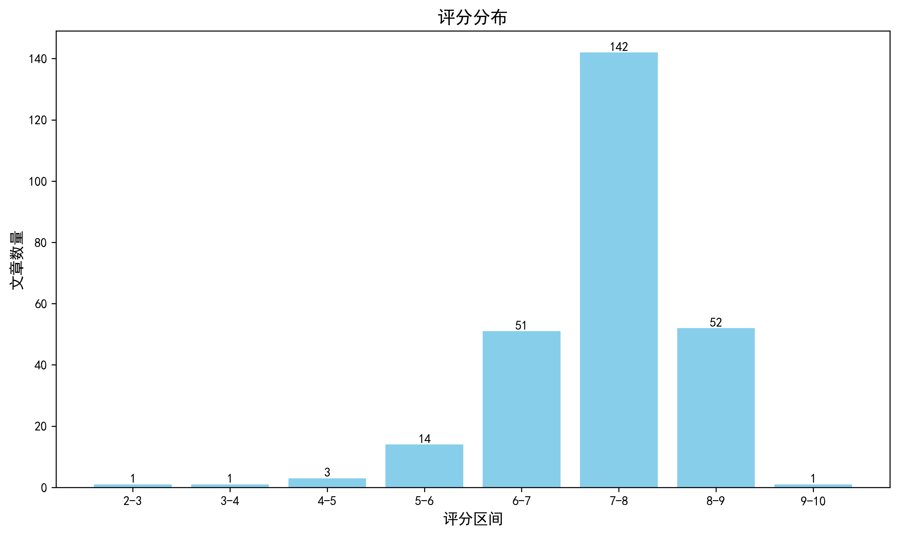

神经科学快讯·第019期 Science重磅：首次实现活体树突电压成像，揭示海马CA3神经元“并行独立计算”新范式 (2026-07-18)
📊 本周概览
- 头条推荐: 0 篇
- 深度解读: 143 篇
- 简要提及: 87 篇
- 跨界启发: 0 篇
- 已过滤: 277 篇
🌏 环球视野

📊 评分分布
| 评分区间 | 文章数量 |
|---|---|
| 2-3 | 1 |
| 3-4 | 1 |
| 4-5 | 3 |
| 5-6 | 14 |
| 6-7 | 51 |
| 7-8 | 142 |
| 8-9 | 52 |
| 9-10 | 1 |
总计: 265 篇评分文章
📈 各领域文章分布
| 领域 | 深度解读 | 简要提及 | 总计 |
|---|---|---|---|
| 未知领域 | 0 | 51 | 51 |
| 系统与环路神经科学 | 34 | 5 | 39 |
| 分子与细胞神经科学 | 24 | 3 | 27 |
| 感觉与运动神经科学 | 20 | 7 | 27 |
| 临床与转化神经科学 | 21 | 5 | 26 |
| 认知神经科学 | 19 | 7 | 26 |
| 计算与理论神经科学 | 10 | 4 | 14 |
| 社会与情感神经科学 | 5 | 2 | 7 |
| 发育神经科学 | 5 | 2 | 7 |
| 方法学 | 5 | 1 | 6 |
合计: 深度解读 143 篇，简要提及 87 篇，共 230 篇
📚 精选文献（按领域分类）
临床与转化神经科学
中文标题: 儿童和年轻成人脑膜瘤的独特分子亚型需要年龄适应性风险分层
作者: Natalie Berghaus, Arnault Tauziède-Espariat, Philipp Sievers
单位: Department Of Neuropathology, Institute Of Pathology, University Hospital Heidelberg, Heidelberg, Germany; Department Of Neuropathology, Ghu Paris, Psychiatry And Neurosciences, Sainte-Anne Hospital, Paris, France; Philipp 等
研究地区: Germany, France
关键词: 基因组学, 人类, 脑膜瘤, 分子分型, 年龄适应性, 预后分层
亮点: 首次揭示儿童/年轻成人脑膜瘤为独特分子实体，挑战成人风险分层模型
核心优势: 大规模多中心分析，定义了年龄依赖的分子亚群和预后因素，为临床提供新分层依据
研究局限: 缺乏独立外部验证队列，部分亚组样本量较小，分子机制探索有限
目标读者: 神经肿瘤学、神经病理学、小儿肿瘤学家和临床基因组研究者
推荐理由: 该研究首次系统解析了儿童和青年脑膜瘤的分子特征，发现其基因组图谱与成人显著不同，成人风险分层标准（如WHO分级、1p缺失）在年轻患者中缺乏预后意义。通过整合NF2/SMARCE1突变、chr17q增益等特征，提出了年龄特异性的分子亚组，为精准治疗和预后评估提供了新框架。对神经肿瘤学和年龄相关肿瘤生物学具有重要启示。
中文标题: CD33和簇蛋白通过生物物理和遗传相互作用调节阿尔茨海默病风险
作者: Roger B. Dodd, Masahiro Enomoto, Peter St George-Hyslop
关键词: 阿尔茨海默病, CD33, clusterin, 小胶质细胞, 遗传变异, 蛋白质相互作用
亮点: 首次揭示CD33 M亚型二聚化及与clusterin和Aβ的物理互作，连接非编码风险变异与微胶质功能失调。
核心优势: 整合结构、细胞和人类遗传学数据，阐明CD33变异调控阿尔茨海默病风险的全新分子通路。
研究局限: 缺乏体内动物模型直接验证CD33-clusterin相互作用的病理学后果。
目标读者: 阿尔茨海默病研究者、神经免疫学家、遗传学家和结构生物学家
推荐理由: 该研究整合了结构生物学、遗传学和细胞功能分析，揭示了CD33 M亚型与clusterin的直接相互作用如何抑制小胶质细胞对Aβ的吞噬，从而阐明AD风险非编码变异的功能机制。这一发现不仅深化了对AD免疫炎症通路的理解，也为靶向CD33-clusterin轴的治疗策略提供了分子基础，具有重要的转化价值。
中文标题: Tau蛋白种子通过个体特异性连接诱导脑区间的神经原纤维缠结形成
作者: Audrey J. Weber, Bernard Ng, Kelsey M. Greathouse et al.
单位: Rush Alzheimer'S Disease Center, Rush University Medical Center, Chicago, Il 60612, Usa; Department Of Psychiatry, Suny Upstate Medical University, Syracuse, Ny 13210, Usa; Electronic Address: Gaiteri@Gmail
研究地区: United States
关键词: 人类, tau种子活性, 孟德尔随机化, 神经原纤维缠结, 额叶, 颞叶
亮点: 个体特异性脑连接调控tau种子诱导的神经纤维缠结跨脑区传播
核心优势: 整合tau种子生物活性、遗传学和功能连接数据，首次从个体水平揭示tau病理传播的因果机制
研究局限: 样本量有限且均为高龄人群，因果推断依赖统计模型，缺乏直接细胞或动物模型验证
目标读者: 阿尔茨海默病研究人员、神经病理学家、计算神经科学和系统生物学家
推荐理由: 该研究通过测量128例阿尔茨海默病患者颞下回和额上回突触体的tau种子活性，结合孟德尔随机化方法，揭示了tau种子在局部和远端诱导神经原纤维缠结形成的机制，且这种传播依赖于个体特异性脑连接。研究为tau病理的跨脑区扩散提供了因果证据，强调了靶向tau种子作为治疗策略的潜力，对理解阿尔茨海默病进展和个体差异具有重要意义。
中文标题: 骨髓样细胞进入中枢神经系统的通道
作者: Lukas Amann, Marco Prinz
单位: Electronic Address: Lukas; Institute Of Neuropathology, Medical Faculty, University Of Freiburg, Freiburg, Germany; Amann@Uniklinik-Freiburg 等
研究地区: Germany, United Kingdom
关键词: 神经免疫, 髓系细胞, 血脑屏障, 脑膜, 脉络丛, 小胶质细胞
亮点: 全面梳理髓系细胞进入CNS的时空路线，揭示免疫细胞运输的解剖分子基础及其治疗意义
核心优势: 系统整合从胚胎到衰老的髓系细胞进入通路，涵盖最新发现的非常规途径
研究局限: 综述性质，缺乏原始数据支持，批判性整合略显不足
目标读者: 神经免疫学、神经发育与衰老、细胞治疗研究者
推荐理由: 该综述系统地总结了髓系细胞进入中枢神经系统的多种解剖学门控，涵盖脑膜、脉络丛及血管周围间隙等结构，并阐述了这些门控在发育、衰老及神经炎症中的动态调控。文章整合了近年关于边界相关巨噬细胞、树突状细胞及单核细胞迁移的研究进展，为理解神经免疫互作和CNS疾病的免疫治疗靶点提供了重要框架，对神经科学和免疫学交叉领域具有关键参考价值。
中文标题: 阿尔茨海默病中升高的tRNA衍生片段促进Tau聚集
作者: Kobayashi, A., Han, C.-T., Nguyen, L. D. et al.
关键词: tRNA衍生片段, Tau聚集, 阿尔茨海默病, RNA结合, 磷酸化, 寡聚化
亮点: 首次揭示特定tRNA衍生片段5GluCTC作为Tau聚集的关键内源性辅因子，为tauopathies提供新治疗靶点
核心优势: 多模态实验证实5GluCTC tRF直接结合并促进Tau病理，且可在神经元间横向传播
研究局限: 预印本，缺乏体内长期干预实验及人类临床样本中tRF抑制的验证
目标读者: 阿尔茨海默病/神经退行性疾病研究者、RNA生物学和Tau病理学家
推荐理由: 本研究首次揭示应激诱导的tRNA衍生片段(tRFs)作为内源性辅助因子促进Tau蛋白聚集，在人AD脑、PS19小鼠及神经元模型中发现5'GluCTC和5'GlyGCC tRFs显著升高，并直接结合Tau诱导其磷酸化、寡聚化和纤维化。该发现为Tau病理机制提供了新的分子层面解释，并提示tRFs可能成为AD诊断标志物或治疗靶点，对理解神经退行性疾病共有的Tau聚集机制具有重要启发。
Restored clearance of senescent neutrophils by tissue-resident macrophages limits organ aging.
深度解读 8.0/10中文标题: 组织驻留巨噬细胞恢复清除衰老中性粒细胞限制器官衰老
作者: Tan YJ, Conley TE, Yao F et al.
关键词: 衰老, 认知衰退, 巨噬细胞, 中性粒细胞, PGE2受体, 小鼠
亮点: 组织驻留巨噬细胞通过清除衰老中性粒细胞协调器官衰老，EP2抑制可逆转这一过程
核心优势: 多组织衰老表型的系统性改善与单一细胞机制（TRM efferocytosis缺陷）直接相关，并提供药理学干预证据
研究局限: 基于小鼠模型，人类验证尚初步；未排除其他细胞类型的贡献
目标读者: 衰老生物学家、免疫学家、巨噬细胞生物学研究者、神经退行性疾病研究者
推荐理由: 该研究揭示组织驻留巨噬细胞通过EP2受体清除衰老中性粒细胞是器官衰老的关键机制，并证明靶向EP2信号可挽救老年小鼠的认知衰退、肌少症和全身炎症。为理解神经免疫相互作用在脑衰老中的作用提供了新视角，也为开发抗衰老及神经退行性疾病干预策略指明了潜在靶点。
中文标题: 基因共表达连接动态分析揭示精神分裂症中神经元-少突胶质细胞相互作用的异常
作者: Eugenia Radulescu, Petra E. Vértes, Daniel R. Weinberger
单位: Eugenia; Lieber Institute For Brain Development, Johns Hopkins Medical Campus, Baltimore, Maryland, Usa; Radulescu@Libd
研究地区: United States
关键词: 基因共表达网络, RNA-Seq, 人类, 前额叶, 海马, 尾状核
亮点: 多脑区基因共表达网络分析揭示精神分裂症中神经元-少突胶质细胞连接失调
核心优势: 跨脑区、多模态验证，识别差异连接基因并在单细胞和类器官中独立确认
研究局限: 网络指标选择可能影响结果；缺乏因果关系直接证明
目标读者: 精神分裂症研究者、计算神经科学家、系统生物学家
推荐理由: 该研究通过创新的基因共表达网络动态分析，在死后脑组织中揭示了精神分裂症中神经元与少突胶质细胞之间异常的连接模式。利用来自多个脑区的大样本bulk RNA-Seq数据，识别差异连接基因，为理解精神分裂症的分子失连接提供了新的细胞-回路机制，并提示胶质细胞在精神疾病中的关键作用。
中文标题: 无需插补的Transformer学习实现了跨异质性临床队列的稳健阿尔茨海默病预测与校准的不确定性量化
作者: Christelle Schneuwly Diaz, Narmina Baghirova, Duy-Thanh Vu et al.
关键词: Transformer, 免插补, 不确定性量化, 临床预测, 阿尔茨海默病, 异质性队列
亮点: 免插补Transformer处理真实世界临床数据的不完整性和异质性，实现稳健的AD预测和校准的不确定性量化。
核心优势: 首次将imputation-free Transformer与校准不确定性量化结合，直接从不完整多模态数据学习，避免插补偏差，并在跨队列验证中保持鲁棒性。
研究局限: 方法计算复杂度高，可解释性有限，且仅基于三个公开数据集（ADNI/OASIS/AIBL），泛化性需在更多临床场景验证。
目标读者: 计算精神病学、医学影像分析、机器学习应用于临床决策的研究者
推荐理由: 该研究提出免插补Transformer模型NITROGEN，直接处理真实临床数据的不完整性和异质性，无需传统插补即可进行阿尔茨海默病诊断与严重度预测，同时提供校准的不确定性量化。这一方法避免了插补引入的偏差和过度自信问题，在多个异质性队列中表现稳健。对于涉及多中心、不完整数据的临床研究具有重要方法学价值。
中文标题: 蛋白激酶C alpha的假激酶转换突变通过通路重连驱动脊索样胶质瘤
作者: Bellamy C, Tovell H, Kao TH et al.
关键词: 胶质瘤, 蛋白激酶C alpha, 假激酶突变, 通路重连, 基因突变, 肿瘤机制
亮点: 首次发现PKCα假激酶转化突变通过通路重连驱动脊索样胶质瘤，揭示激酶功能转换的新致癌机制。
核心优势: 发现PKCα的一种新型假激酶突变，并通过多层面实验证明其通过重塑信号通路驱动肿瘤发生。
研究局限: 研究主要基于细胞和动物模型，缺乏临床样本验证，且机制在其他肿瘤中的普适性未知。
目标读者: 肿瘤神经科学、激酶信号转导、胶质瘤生物学研究者
推荐理由: 该研究揭示了脊索瘤样胶质瘤中PKC alpha的假激酶转化突变通过非经典通路重连驱动肿瘤发生的新机制，为理解该类罕见脑肿瘤的分子病理提供了关键见解，并提示了潜在的治疗靶点。对胶质瘤分子亚型分类和靶向药物开发具有重要意义。
Cytomegalovirus-induced T cell responses accelerate Alzheimer's disease progression in mice.
深度解读 7.7/10中文标题: 巨细胞病毒诱导的T细胞应答加速小鼠阿尔茨海默病进展
作者: Marsden M, McLaren JE, Bevan RJ et al.
关键词: 巨细胞病毒, T细胞, 阿尔茨海默病, 神经炎症, 小鼠模型, 疾病进展
亮点: 揭示巨细胞病毒通过T细胞应答加速阿尔茨海默病进展的新型免疫机制
核心优势: 首次建立CMV诱导的T细胞免疫与AD进展的因果关系，开辟神经免疫新方向
研究局限: 基于小鼠模型，人类相关性和具体免疫通路细节有待验证
目标读者: 神经科学家、神经免疫学研究者、阿尔茨海默病研究者、病毒免疫学家
推荐理由: 本研究揭示巨细胞病毒（CMV）可通过激活外周T细胞反应加速阿尔茨海默病（AD）小鼠模型的病理进展，为“感染触发神经退行性变”假说提供了关键因果证据。研究不仅建立了CMV特异性T细胞与脑内β-淀粉样蛋白沉积及认知功能下降之间的直接联系，还提示免疫调控可能成为AD干预的新靶点。对临床转化神经科学和免疫-神经交叉领域的研究者具有重要参考价值。
中文标题: 大规模脑脊液和血浆蛋白质组学揭示神经退行性疾病中免疫、突触和细胞外基质的紊乱
作者: Muhammad Ali, Jigyasha Timsina, Ying Xu et al.
单位: Department Of Neurology, Washington University, St; Louis, Mo 63110, Usa; Department Of Psychiatry, Washington University, St 等
资深研究者: Jigyasha Timsina (h指数=20); Menghan Liu (h指数=13)
研究地区: United States, Spain
关键词: 蛋白质组学, 脑脊液, 血浆, 神经退行性疾病, 免疫, 突触
亮点: 大规模CSF与血浆蛋白质组学揭示四种神经退行性疾病的共享与特异性分子通路
核心优势: 最大样本量（2705 CSF, 3009血浆）的多疾病跨组织蛋白质组学比较，提供丰富的疾病特异性生物标志物和潜在治疗靶点。
研究局限: 蛋白质组学技术（多为亲和性方法）可能存在技术偏差，且缺乏独立队列的外部验证（摘要未明确提及独立验证集）。
目标读者: 神经退行性疾病研究人员、蛋白质组学及计算生物学家
推荐理由: 该研究通过对2705份脑脊液和3009份血浆样本的大规模蛋白质组学分析，系统描绘了阿尔茨海默病、帕金森病、路易体痴呆和额颞叶痴呆的共同与疾病特异性分子特征。研究揭示免疫、突触和细胞外基质紊乱是多种神经退行性疾病的共享通路，而脑脊液较血浆更敏感。为临床标志物开发和跨疾病治疗靶点发现提供了重要资源。
中文标题: 声音-奖赏回路的发育差异区分自闭症儿童青少年与典型发育儿童青少年
作者: Abrams DA, Leipold S, Odriozola P et al.
关键词: 神经影像, 人类, 奖赏回路, 声音处理, 自闭症, 发育轨迹
亮点: 揭示自闭症儿童青少年声音-奖励回路发育分化的神经机制
核心优势: 聚焦发育轨迹分化，为自闭症社交障碍提供神经基础
研究局限: 未提供具体数据，可能样本量或跨种族泛化有限
目标读者: 发育神经科学、自闭症研究、神经影像学研究者
推荐理由: 该研究通过追踪儿童及青少年期声音-奖赏回路的发育变化，揭示了自闭症谱系个体在这一关键社会认知通路上的特异性分化轨迹。这一发现不仅为理解自闭症的社会沟通障碍提供了神经基础层面的发育视角，也为早期识别和干预策略的制定提供了潜在的生物标记物。
中文标题: 线粒体视神经萎缩蛋白1（OPA1）表达调控新生儿缺氧缺血后的损伤反应
作者: Curel, C., Jones, A., Crawford, A. H. et al.
关键词: 缺氧缺血, 线粒体, OPA1, 星形胶质细胞, 神经保护, 新生儿
亮点: 揭示OPA1通过维持线粒体DNA和线粒体功能保护新生鼠缺氧缺血脑损伤
核心优势: 首次将mtDNA丢失与新生儿缺氧缺血脑损伤中线粒体病理联系起来，并证明OPA1过表达的保护作用
研究局限: 主要基于体外星形胶质细胞和小鼠模型，人类验证不足；未探讨其他细胞类型（如神经元）的作用；预印本未经同行评审
目标读者: 线粒体生物学、发育神经科学、围产期脑损伤、星形胶质细胞研究者
推荐理由: 该研究聚焦线粒体融合蛋白OPA1在新生儿缺氧缺血性脑损伤中的作用，结合人类转录组数据、体外星形胶质细胞模型和动物模型，揭示了OPA1表达调控对损伤反应的关键影响。这一发现不仅深化了对线粒体动力学在神经病理中作用的理解，还为开发针对线粒体功能障碍的神经保护策略提供了新靶点，对临床转化具有重要意义。
Regaining your voice.
深度解读 7.3/10中文标题: 重获你的声音
作者: Stavisky S
关键词: 神经假体, 脑机接口, 语音解码, AI, 人类, 运动皮层
亮点: AI语音神经假体恢复神经损伤后日常沟通的突破性观点
核心优势: 将AI与神经假体结合，直接针对临床沟通恢复，具有高度转化潜力
研究局限: 作为观点文章，缺乏实证数据支持，其乐观预测需进一步验证
目标读者: 神经工程、临床神经康复、AI医疗研究者
推荐理由: 该研究展示了AI语音神经假体在恢复脑损伤后日常沟通中的显著效能，为失语症患者的临床康复提供了突破性方案。通过解码高级语言意图而非仅运动输出，实现了更自然、流畅的语音合成，代表了神经工程与人工智能融合的前沿方向，对理解言语产生的神经机制及临床应用具有重要价值。
中文标题: ZC3H14 (MSUT2)在神经发育和tau蛋白病中的作用
作者: Shelby G, Corbett AH, Parker RR
关键词: RNA结合蛋白, tau蛋白病, 神经发育, 小鼠模型, 突触可塑性, 阿尔茨海默病
亮点: 整合ZC3H14在神经发育和tauopathy中的角色，揭示RNA结合蛋白与神经退行性疾病的联系
核心优势: 系统总结了ZC3H14的功能及其在tauopathy中的潜在机制，为该领域提供了综合视角
研究局限: 依赖已发表研究，缺乏原始实验数据；可能未能涵盖所有最新进展
目标读者: 神经退行性疾病研究者、RNA生物学和神经发育生物学家
推荐理由: 该研究揭示了ZC3H14（MSUT2）在神经发育和tau蛋白病中的关键作用，为理解tau病理的分子机制提供了新线索。ZC3H14作为RNA结合蛋白，可能通过调控mRNA加工影响突触可塑性和神经退行性过程。研究不仅深化了对tauopathies发病机制的认识，还为开发针对阿尔茨海默病等疾病的治疗策略提供了潜在靶点，具有重要的转化意义。
中文标题: 曲唑酮重新用于阿尔茨海默病以调节可溶性ST2水平并减轻阿尔茨海默病理
作者: Wong DYK, Fu WY, Uhm H et al.
关键词: 药物重定位, sST2, 阿尔茨海默病, 小鼠模型, 淀粉样蛋白, 神经炎症
亮点: 老药新用，通过调节sST2/IL-33轴减轻阿尔茨海默病病理
核心优势: 将已批准药物曲唑酮重新用于AD，具有临床转化潜力
研究局限: 机制细节和疗效验证尚不充分，需要更多体内和临床数据
目标读者: 神经科学、AD研究者、药物研发人员
推荐理由: 该研究聚焦于老药曲唑酮在阿尔茨海默病中的新用途，通过调节可溶性ST2（sST2）水平减轻病理。研究不仅验证了sST2作为AD治疗靶点的潜力，还展示了药物重定位策略的临床转化价值，为AD药物开发提供了新的分子机制和候选药物。对从事AD研究和药物研发的神经科学家具有重要参考意义。
中文标题: 帕金森病中的功能分离
作者: Dongning Su, Jordan U. Hanania, Alexandra Pavel et al.
单位: Center For Movement Disorders, Department Of Neurology, Beijing Tiantan Hospital, Capital Medical University, Beijing, China; Department Of Physics And Astronomy, University Of British Columbia, Vancouver, Bc, Canada; Djavad Mowafaghian Centre For Brain Health, Pacific Parkinson'S Research Centre, University Of British Columbia & Vancouver Coastal Health, Vancouver, Bc, Canada 等
研究地区: China, Canada, United States
关键词: PET/MR, 人类, 基底节, 多巴胺释放, 帕金森病, 运动认知任务
亮点: 揭示帕金森病中基底节功能分离丧失的神经化学证据
核心优势: 首次在活体人类中系统展示PD患者多巴胺释放的躯体定位和任务特异性功能分离丧失
研究局限: 样本量较小，仅使用单一示踪剂，缺乏纵向或跨模态验证
目标读者: 运动障碍研究者、神经影像学专家、基底节研究学者
推荐理由: 该研究利用[11C]raclopride PET/MR技术，首次在早期帕金森病患者中揭示了运动、认知和奖励任务下基底节多巴胺释放的功能分离改变。结果表明，疾病导致运动任务诱发的多巴胺释放从背壳核向尾状核和腹侧纹状体重分布，提示功能环路的重组。这一发现为理解帕金森病非运动症状的神经基础提供了新的视角，并强调了多巴胺系统在平行环路中的差异化影响。
中文标题: 一种靶向α-突触核蛋白聚集倾向区域的单域抗体可减少突触核蛋白病、挽救神经退行性变并改善功能
作者: Pragati,, Congdon, E. E., Jiang, Y. et al.
关键词: 单域抗体, α-synuclein, 突触核蛋白病, 帕金森病, 神经退行性变, 免疫治疗
亮点: 开发新型单域抗体2H1靶向α-突触核蛋白聚集区，在果蝇模型中有效减轻神经病理并改善运动功能
核心优势: 新抗体2H1结合聚集倾向区域并在多层面（分子、细胞、行为）展现强大治疗效果，且通过proximity labeling揭示胞内关联蛋白
研究局限: 仅在果蝇模型验证，缺乏哺乳动物模型和临床前数据；作用机制尚不完全明确
目标读者: 神经退行性疾病研究者、抗体工程专家、α-突触核蛋白病方向研究人员
推荐理由: 该研究开发了靶向α-synuclein聚集倾向区域的单域抗体，并在小鼠模型中验证了其减少突触核蛋白病、拯救多巴胺能神经元变性并改善运动功能的效果。这项工作为帕金森病等突触核蛋白病提供了有前景的免疫治疗策略，同时也展示了单域抗体作为诊断和成像工具的潜力，对神经退行性疾病的转化研究具有重要参考价值。
中文标题: 理解亨廷顿病的细胞结构
作者: Pustina D
关键词: 单细胞测序, 空间转录组学, 亨廷顿病, 纹状体, 细胞类型, 疾病机制
亮点: 全面解析亨廷顿病细胞结构的研究进展
核心优势: 系统整合了细胞类型特异性病理研究，时效性强
研究局限: 纯综述性质，缺乏实验数据支持，批判性分析不足
目标读者: 神经退行性疾病研究者、细胞生物学家
推荐理由: 该研究通过单细胞和空间转录组学技术，系统解析了亨廷顿病小鼠模型和人类患者脑组织的细胞组成及基因表达变化，揭示了特定细胞类型（如棘状神经元）在疾病进程中的选择性易损性，为理解亨廷顿病的细胞病理学机制提供了高分辨率图谱。
中文标题: CSF1R抑制加剧APP/PS1小鼠的伽马振荡破坏并诱导网络过度兴奋
作者: Delaney HJ, Islam S, Healy D et al.
摘要: 揭示CSF1R抑制通过加剧伽马振荡紊乱导致网络过度兴奋的新机制
优势: 将小胶质细胞调控与阿尔茨海默病中神经网络异常直接联系起来 局限: 仅基于APP/PS1小鼠模型，缺乏对其他AD模型或人类数据的验证 受众: 神经炎症、阿尔茨海默病及神经振荡研究者
中文标题: 视神经炎和青光眼在可比光学相干断层扫描结果下的结构功能关系差异
作者: Kim H, Kim MJ, Lee JS et al.
资深研究者: Lee JS (h指数=29)
摘要: 在OCT表现相似的视神经炎和青光眼中揭示了不同的结构-功能关系
优势: 首次在OCT结果相似的情况下对比两种疾病的视网膜神经纤维层厚度与视野缺损的关联差异 局限: 回顾性设计且样本量有限，缺乏纵向随访和病理机制的直接证据 受众: 眼科、神经眼科学临床医生及视神经疾病研究者
中文标题: 在真实治疗环境中行为激活期间厌恶性巴甫洛夫偏见的早期降低作为快感缺失改善的中介因素
作者: Berndt LCS, Crawley D, Tymchyk R et al.
摘要: 计算精神病学方法揭示行为激活疗法通过早期减少厌恶型巴甫洛夫偏倚改善快感缺失的认知机制
优势: 在现实临床环境中验证了计算模型中的关键机制中介效应 局限: 非随机设计、中介分析因果推断弱，样本量可能不足且缺乏独立验证 受众: 临床精神病学、计算精神病学、行为治疗及认知机制研究者
Introducing entropy measures to PK/PD models in propofol anesthesia as a replacement of BIS
简要提及 5.3/10中文标题: 将熵测度引入丙泊酚麻醉的PK/PD模型以替代BIS
作者: Alexander Edthofer, Christina Huber, Fabrizio Renzaglia et al.
摘要: 基于PK/PD模型模拟，验证了两种熵测度在麻醉深度监测中与BIS等效的潜力
优势: 系统比较了两种熵测度与BIS在多个PK/PD模型下的性能，方法严谨 局限: 仅基于模拟数据，缺乏临床真实EEG和BIS验证，且样本量不明确 受众: 麻醉学、神经监测、生物统计和计算神经科学研究者
中文标题: 类黄酮和芦丁对亨廷顿病动物模型炎症诱导的治疗潜力
作者: Calderón Guzmán D, Osnaya Brizuela N, Ortiz Herrera M et al.
摘要: 探索黄酮类化合物及芦丁在亨廷顿病炎症模型中的神经保护潜力
优势: 针对亨廷顿病炎症通路，测试天然产物的治疗价值 局限: 研究设计常规，缺乏新颖机制或创新方法，证据强度有限 受众: 神经退行性疾病与天然产物研究者
分子与细胞神经科学
中文标题: 单胺类信号在两侧对称动物之前的起源
作者: Yañez-Guerra LA, Mayorova TD, Duruz J et al.
关键词: 受体去孤儿化, 系统发育, 行为学, 丝盘虫, 单胺能信号, 进化起源
亮点: 在无神经元的古老动物中首次发现功能性单胺能信号系统，改写神经递质进化史
核心优势: 多模态证据链从受体、配体、酶到行为完整验证了placozoan中的单胺能信号，且发现了与两侧对称动物褪黑素受体的同源性。
研究局限: 行为学实验仅检测了两种单胺对运动速度和形态的影响，机制深度有限；受体激活的体内功能意义未完全阐明。
目标读者: 神经进化生物学家、比较神经科学家、化学神经解剖学研究者
推荐理由: 该研究通过受体去孤儿化、系统发育分析和行为实验，在无神经元的丝盘虫中鉴定出五个功能性单胺受体，证实单胺能信号在两侧对称动物之前已存在。这一发现挑战了单胺能系统与神经元共起源的传统观点，为神经递质系统的早期演化提供了关键证据。对分子与细胞神经科学领域，特别是神经递质演化研究具有重要启示。
A transcriptional biosensor reveals mechanisms of α-ketoglutarate signaling to chromatin.
深度解读 8.6/10中文标题: 一种转录生物传感器揭示α-酮戊二酸信号传导至染色质的机制
作者: Sternisha AC, Li H, Gajendra K et al.
关键词: 生物传感器, α-酮戊二酸, 染色质调控, 代谢信号, GPT2, SLC25A11
亮点: 新型生物传感器揭示核α-酮戊二酸信号调控染色质的新机制
核心优势: 首创αKG核内生物传感器，并系统鉴定其调控通路，在遗传疾病模型中验证
研究局限: 传感器可能对核内αKG快速变化响应有限，且小鼠模型表型未完全表征
目标读者: 代谢、表观遗传学、神经发育疾病及生物传感器研究领域的科学家
推荐理由: 该研究开发了一种基于转录因子的生物传感器，用于实时监测细胞核内α-酮戊二酸水平，并揭示了GPT2和SLC25A11构成的线粒体-核代谢轴如何调控染色质去甲基化。对于神经科学领域，这一发现为理解代谢异常（如GPT2缺陷）如何导致神经发育障碍提供了直接分子机制，也为探索代谢物信号在神经元可塑性及神经退行性疾病中的作用开辟了新工具。
Repetitive neuronal activation regulates cellular maturation state via nuclear reprogramming
深度解读 8.5/10中文标题: 重复神经元激活通过核重编程调控细胞成熟状态
作者: Tomoyuki Murano, Hideo Hagihara, Tsuyoshi Miyakawa
关键词: 重复刺激, 光遗传学, 电休克模型, 核重编程, 齿状回, 小鼠
亮点: 揭示电休克疗法的细胞机制：重复神经刺激通过核重编程诱导神经元持久去成熟状态
核心优势: 首次将ECT样刺激与核重编程和细胞周期G2/M相关基因联系起来，并展示长期稳定的细胞状态改变
研究局限: 仅在小鼠齿状回使用光遗传模型，与临床ECT的差异可能影响转化；机制细节不完整
目标读者: 神经科学家、精神疾病研究人员、细胞生物学家、神经刺激研究者
推荐理由: 本研究利用光遗传学模拟电休克治疗，发现重复性神经元激活可通过核重编程调控齿状回颗粒细胞的成熟状态，并产生抗抑郁样行为效应。这一发现为理解神经调控疗法的细胞机制提供了新视角，揭示了活动依赖的核重编程在成熟状态转换中的关键作用，对神经可塑性和精神疾病治疗具有重要启示。
中文标题: 人类囊泡多胺转运体识别和转运神经递质的协同机制
作者: Yi Guo, Ge Yang, Min Lu
单位: Lu@Rosalindfranklin; Center For Proteomics & Molecular Therapeutics, Rosalind Franklin University Of Medicine & Science, North Chicago, Il, Usa; The Hormel Institute, University Of Minnesota, Austin, Mn, Usa
研究地区: United States
关键词: 冷冻电镜, 人类, 多胺转运蛋白, 神经递质, 组织胺, 5-羟色胺
亮点: 首次揭示人类囊泡多胺转运蛋白hVPAT的多底物结合位点与正协同机制，颠覆了对单胺神经递质转运的传统理解
核心优势: 利用冷冻电镜解析了hVPAT与组胺、血清素复合物的结构，发现三个结合位点，并通过功能实验验证了底物协同性和可变H+/底物化学计量比
研究局限: 主要基于体外重构系统的结构和功能数据，体内生理条件下的转运动力学和协同性调控机制尚待直接验证
目标读者: 神经递质转运体、结构生物学、膜蛋白生物化学及精神疾病药理学研究者
推荐理由: 该研究通过冷冻电镜解析了人囊泡多胺转运蛋白（hVPAT）与组织胺及5-羟色胺结合的结构，揭示了多个神经递质结合位点和质子耦合转运机制。这不仅阐明了多胺在神经递质稳态中的关键角色，也为开发针对精神刺激药物成瘾的治疗策略提供了分子结构基础。对从事转运蛋白结构功能研究和神经递质调控的读者具有重要参考价值。
中文标题: 少突胶质细胞编码的乳酸脱氢酶A通过蛋白质乳酰化偶联糖酵解与髓鞘再生
作者: Ming-Yue Bao, Xiu-Qing Li, Qing-Qing Sun et al.
单位: Key Laboratory Of Medicinal Resources And Natural Pharmaceutical Chemistry (Shaanxi Normal University), The Ministry Of Education, College Of Life Sciences, Shaanxi Normal University, Xi'An, Shaanxi 710119, China; Department Of Medical Experimental Center, Shenzhen Nanshan People'S Hospital, Shenzhen, Guangdong 518052, China; Department Of Neurology, Fourth Military Medical University, Xijing Hospital, Xi'An, Shaanxi 710119, China 等
研究地区: China
关键词: 少突胶质细胞, LDHA, 蛋白质乳酰化, 糖酵解, 髓鞘再生, 脱髓鞘疾病
亮点: 少突胶质细胞乳酸脱氢酶A通过蛋白质乳酸化耦合糖酵解与髓鞘再生
核心优势: 首次揭示LDHA介导的乳酸化修饰在少突胶质细胞成熟和髓鞘再生中的关键作用，为脱髓鞘疾病提供了酶学治疗新视角。
研究局限: 机制解析主要依赖小鼠模型，需在人类样本中验证；乳酸化修饰的具体靶点与功能仍需更深入解析。
目标读者: 神经代谢、髓鞘再生、表观遗传学、脱髓鞘疾病研究者
推荐理由: 本研究揭示了少突胶质细胞中乳酸脱氢酶A（LDHA）通过蛋白质乳酰化将糖酵解与髓鞘再生直接偶联的新机制。在脱髓鞘病变中，少突胶质细胞糖酵解效率下降，而补充乳酸或特异性过表达LDHA可显著促进髓鞘修复。这一发现不仅阐明了代谢信号对髓鞘再生的表观遗传调控，也为多发性硬化等脱髓鞘疾病提供了新的治疗靶点。
中文标题: β-arrestin招募促进与G蛋白的直接结合
作者: Claudia Y. Lee, Jeffrey S. Smith, Sudarshan Rajagopal
资深研究者: Jeffrey S. Smith (h指数=43); Sudarshan Rajagopal (h指数=50)
关键词: GPCR, β-arrestin, G蛋白, 蛋白互作, 信号转导
亮点: 首次证明β-arrestin与G蛋白直接相互作用，揭示GPCR信号整合新机制
核心优势: 利用纯化蛋白和细胞实验多维度证实了β-arrestin与Gαi的直接结合，打破传统信号分离观念
研究局限: 主要聚焦于Gαi亚型，对其他G蛋白亚型（如Gαs、Gαq）的普遍性以及体内生理条件下的相互作用验证有限
目标读者: GPCR信号转导、细胞生物学、药理学研究者
推荐理由: 该研究颠覆了GPCR信号转导的传统观点，揭示了β-arrestin在招募后能够直接与G蛋白形成复合物，而非独立发挥作用。这一发现不仅深化了对GPCR信号整合机制的理解，也为开发更精准的偏向性药物提供了新的分子靶点。对于神经科学领域，由于GPCR在突触传递和神经调节中的核心地位，该工作将推动重新审视神经递质受体信号网络的复杂性，并为神经精神疾病治疗策略的优化提供理论依据。
Structural basis of kinesin-1 autoinhibition and its control of microtubule-based motility
深度解读 8.4/10中文标题: kinesin-1自抑制及其对微管驱动运动调控的结构基础
作者: Md Ashaduzzaman, Yuqi Tang, Kyoko Okada et al.
单位: Department Of Chemistry, Johns Hopkins University, Baltimore, Md, Usa; Department Of Molecular Cellular Biology, University Of California, Davis, Ca, Usa
资深研究者: Md Ashaduzzaman (h指数=15)
研究地区: United States
关键词: 冷冻电镜, 分子马达, 微管, 自抑制, 神经退行性疾病
亮点: 首次完整揭示kinesin-1自抑制态冷冻电镜结构，阐明双层抑制机制及激活开关
核心优势: 首次解析kinesin-1完整自抑制态结构，揭示了头尾构象和KLC介导的双层抑制机制，结合功能实验验证
研究局限: 结构可能只代表一种自抑制状态，动态激活过程仍需进一步研究
目标读者: 结构生物学家、细胞生物学家、分子马达研究者、神经科学研究者
推荐理由: 该研究利用冷冻电镜技术首次解析了kinesin-1自抑制构象的高分辨率结构，揭示了其通过分子内相互作用抑制自身运动活性的精细机制。由于kinesin-1在神经元轴突运输中扮演核心角色，且其异常与阿尔茨海默病、亨廷顿病等多种神经退行性疾病密切相关，这一结构信息为理解神经退行性疾病中运输缺陷的分子起源提供了关键基础，并为设计特异性调控kinesin-1活性的药物或治疗策略开辟了新途径。
An internal PDZ-binding motif in Densin-180 promotes activity-dependent SHANK scaffold remodelling
深度解读 8.2/10中文标题: Densin-180中的内部PDZ结合基序促进活性依赖性SHANK支架重塑
作者: Otani, Y., Srinivasan, V., Töller, J. et al.
关键词: 突触后致密区, SHANK支架, Densin-180, PDZ结构域, NMR光谱, 荧光偏振
亮点: 首次揭示Densin-180内部PDZ结合基序驱动活动依赖性SHANK支架重塑的新机制
核心优势: 多学科方法（NMR、晶体结构、生化、细胞）完整验证了内部PDZ识别新模式及其在突触可塑性中的功能
研究局限: 研究主要限于体外和培养神经元，缺乏在体动物行为学证据；SHANK亚型特异性功能差异未深入探讨
目标读者: 突触生物学、结构生物学、神经可塑性领域的研究人员
推荐理由: 本文揭示了一种非经典的内部PDZ结合基序如何介导Densin-180与SHANK蛋白的高亲和力互作，并驱动活性依赖的突触后支架重塑。该发现不仅拓宽了PDZ结构域识别机制的认知，也为理解突触可塑性的分子基础提供了新维度，对研究神经环路中突触结构的动态调控具有重要意义。
中文标题: 皮层脑类器官的综合多组学分析揭示精神分裂症中可药物干预的可变剪接程序
作者: Akkouh, I. A., Osete, J. R., Szabo, A. et al.
关键词: 类脑器官, 多组学, 精神分裂症, 可变剪接, 代谢, 药物靶向
亮点: 大规模类脑器官多组学揭示精神分裂症中Clozapine调控的替代剪接新程序
核心优势: 首次在长期clozapine处理的类脑器官中发现疾病特异且代谢独立的替代剪接程序，并经原代脑组织验证。
研究局限: 类脑器官模型与体内环境的差异可能影响剪接程序的生理相关性。
目标读者: 精神疾病遗传学、神经发育生物学、剪接调控和药物研发研究者
推荐理由: 本研究利用患者来源的皮质类脑器官，结合多组学策略，长期（24周）暴露于氯氮平，揭示了精神分裂症特异性的可变剪接程序，并鉴定出可药物干预的代谢相关靶点。该工作不仅在人类神经发育模型中再现了疾病特异性分子病理，还为治疗抵抗性精神分裂症提供了潜在新靶点，是类脑器官与多组学整合研究的典范。
Saxiphilin functions as a toxin sponge protein that counteracts the effects of saxitoxin poisoning
深度解读 8.0/10中文标题: Saxiphilin作为一种毒素海绵蛋白，可抵消河豚毒素中毒的影响
作者: Samantha A. Nixon, Sandra Zakrzewska, Daniel L. Minor Jr
单位: Cardiovascular Research Institute, University Of California, San Francisco, Ca, Usa
研究地区: United States
关键词: Saxiphilin, 河豚毒素, 钠离子通道, 解毒机制, 蛋白质海绵, 蛙类
亮点: 首次体内证实蛙类Saxiphilin蛋白可作为毒素海绵有效逆转河豚毒素中毒。
核心优势: 通过小鼠模型多种给药方案验证，证明单次注射RcSxph可拮抗STX致死作用，且依赖高亲和力结合位点。
研究局限: 仅使用雌性小鼠，未探索长期安全性或免疫原性；STX给药方式为腹腔注射，与真实中毒途径（口服）不同。
目标读者: 神经毒理学、海洋毒素、蛋白质解毒剂、钠通道研究者
推荐理由: 该研究鉴定并表征了Saxiphilin蛋白作为天然毒素海绵的功能，揭示了其通过直接结合并中和河豚毒素（STX）来保护机体免受麻痹性中毒的机制。这一发现不仅为理解某些蛙类对STX的抗性提供了分子基础，也为开发针对STX中毒的有效解毒剂开辟了新途径，对神经毒理学和临床转化具有重要价值。
3D nanoscale imaging of amyloid-β oligomer interactions with extracellular vesicles by cryo-ET.
深度解读 8.0/10中文标题: 冷冻电镜断层扫描对β淀粉样蛋白寡聚体与细胞外囊泡相互作用的三维纳米尺度成像
作者: Khursheed A, Shang Q, Zhang H et al.
关键词: cryo-ET, 淀粉样蛋白, 细胞外囊泡, 阿尔茨海默病, 纳米成像, 蛋白聚集
亮点: 利用冷冻电镜断层扫描在纳米尺度直接可视化Aβ寡聚体与细胞外囊泡的相互作用界面
核心优势: 首次以分子分辨率揭示Aβ寡聚体与细胞外囊泡的结合细节，为阿尔茨海默病病理传播提供直接结构证据。
研究局限: 技术昂贵且通量低，可能仅展示静态快照，缺乏动态和功能验证，样本制备可能存在伪影。
目标读者: 神经退行性疾病研究者、结构生物学家、细胞外囊泡与蛋白聚集领域学者
推荐理由: 该研究利用冷冻电子断层成像（cryo-ET）在纳米尺度下三维可视化β-淀粉样蛋白（Aβ）寡聚体与细胞外囊泡的相互作用，为理解阿尔茨海默病中Aβ的传播和毒性机制提供了前所未有的结构细节。这一方法学突破将推动神经退行性疾病中蛋白聚集体与细胞外囊泡交叉领域的研究，并为靶向治疗策略提供新视角。
中文标题: 持续整合应激反应激活过程中不同细胞类型特异性机制导致认知功能障碍
作者: Torkenczy K, Reineke LC, Dooling SW et al.
关键词: 综合应激反应, 细胞类型特异性, 认知功能障碍, 小鼠, 行为学, 突触可塑性
亮点: 揭示不同细胞类型在持续应激反应中驱动认知障碍的特异性机制
核心优势: 首次系统阐明神经元与胶质细胞在整合应激反应中的差异化贡献，为认知功能障碍的细胞源头提供新见解。
研究局限: 基于有限的动物模型，人类转化有效性未验证；缺乏体内因果操纵证据。
目标读者: 神经科学家、应激生物学研究者、细胞类型功能与认知障碍研究人员
推荐理由: 本研究揭示了持续整合应激反应（ISR）激活时，不同细胞类型（如兴奋性神经元与抑制性神经元或胶质细胞）通过各自独特的分子通路共同导致认知功能障碍。这一发现超越了以往将ISR视为单一细胞过程的观点，为理解应激相关的认知障碍（如神经退行性疾病）提供了细胞类型特异的靶点，并为开发精准干预策略奠定了基础。
中文标题: 性别特异性APOE4依赖性先天免疫调节脑膜淋巴管、脑脂质、神经炎症和认知
作者: Nickoleta Delivanoglou, Kennedi T. Todd, Francisco Almeida et al.
单位: Icvs/3B'S-Pt Government Associate Laboratory, Braga/Guimarães, Portugal; Department Of Neuroscience, Mayo Clinic, Jacksonville, Fl 32224, Usa; Life And Health Sciences Research Institute (Icvs), School Of Medicine, University Of Minho, Campus Gualtar, 4710-057 Braga, Portugal 等
研究地区: United States, France
关键词: APOE4, 性别差异, 先天免疫, 脑膜淋巴, 脂质组学, 阿尔茨海默病
亮点: APOE4性别差异调控脑膜淋巴和固有免疫，CSF1R抑制在雌雄小鼠中产生截然相反的认知和神经炎症效应。
核心优势: 首次系统揭示APOE4性别依赖性调控脑膜淋巴系统、脑脂质和固有免疫，并发现CSF1R抑制的性别相反效应，具有重要转化意义。
研究局限: 仅使用单一APOE4纯合子小鼠模型，缺乏对其他APOE基因型或人类队列的前瞻性因果验证，且CSF1R抑制长期效应未知。
目标读者: 神经免疫学、阿尔茨海默病机制、性别差异研究、脂质代谢及转化医学研究者
推荐理由: 本研究揭示了APOE4基因型如何以性别特异性方式调控脑膜淋巴管功能、脑脂质组成和神经炎症，为理解女性APOE4携带者阿尔茨海默病高风险提供了新的分子机制。通过抑制CSF1R可部分逆转性别依赖的病理变化，提示靶向先天免疫可能成为性别导向的治疗策略。该工作整合了免疫学、脂质代谢和神经退行性研究，具有重要的转化价值。
中文标题: NMDA受体生理与功能多样性的原子水平洞察
作者: Ke Xu, Siming Wu, Shujia Zhu
单位: University Of Chinese Academy Of Sciences, Beijing, China; Institute Of Neuroscience, Cas Center For Excellence In Brain Science And Intelligence Technology, Chinese Academy Of Sciences, Shanghai 200031, China; Department Of Neuroscience, School Of Life Sciences, Southern University Of Science And Technology, Shenzhen 518055, China 等
研究地区: China
关键词: 冷冻电镜, 结构生物学, NMDA受体, 突触, 亚基多样性
亮点: 原子分辨率下NMDA受体生理多样性及别构调控的综合解析，为精准药物设计提供框架
核心优势: 系统整合了重组与天然NMDA受体的结构、功能和药理进展，并指出向体内研究的趋势和转化方向
研究局限: 作为综述未提供新实验数据，可能对某些争议或未解问题的批判性讨论不够深入
目标读者: 神经科学、结构生物学、药理学和计算生物学研究者
推荐理由: 该研究利用冷冻电镜技术揭示了NMDA受体在原子分辨率下的结构多样性，阐明了不同亚基组合如何赋予受体独特的药理和生物物理特性。这些发现为理解NMDAR在突触可塑性、学习和记忆中的核心作用提供了关键结构基础，也为开发靶向NMDAR的神经系统疾病治疗药物提供了重要指导。
中文标题: 异质性小胶质细胞反应性与稳定的血管转录程序在阿尔茨海默病、CADASIL和创伤性脑损伤小鼠模型中的对比
作者: K. D. Bjørnholm, H. Li, M. Vanlandewijck
关键词: 单细胞测序, 转录组学, 小鼠, 全脑, 小胶质细胞, 血管细胞
亮点: 跨疾病单细胞图谱揭示小胶质细胞异质性反应而血管转录组稳定
核心优势: 大规模跨疾病单细胞转录组比较，发现小胶质细胞疾病特异性反应及AD-TBI趋同
研究局限: 仅基于小鼠模型，人类转化性需验证；血管转录组稳定可能受限于分析深度或模型
目标读者: 神经退行性疾病研究者、小胶质细胞生物学、脑血管生物学、单细胞组学研究者
推荐理由: 该研究通过建立跨三种神经疾病模型（AD、CADASIL、TBI）的脑血管转录组数据库，揭示了小胶质细胞反应性的高度异质性，而血管细胞转录程序保持相对稳定。这项工作为理解神经炎症和血管反应的疾病特异性提供了重要资源，并展示了单细胞转录组学在比较病理研究中的强大应用。
中文标题: 神经元STAT1作为脑炎中从抗病毒防御到突触病变的相变开关
作者: Giovanni Di Liberto, Doron Merkler
单位: Department Of Basic Neuroscience, University Of Geneva, 1205 Geneva, Switzerland; Department Of Clinical Neurosciences, Neurology Service, Lausanne University Hospital And University Of Lausanne, Lausanne, Switzerland; Department Of Pathology And Immunology, University Of Geneva, 1211 Geneva, Switzerland 等
研究地区: United States, Switzerland
关键词: STAT1信号, 干扰素信号, 脑炎, 突触病变, 小鼠模型, 人类神经病理学
亮点: 提出神经元STAT1磷酸化作为抗病毒防御向突触病变转变的关键开关机制
核心优势: 创新性地整合了干扰素信号的双重角色，提供了从保护到损伤的转换框架，具有治疗指导意义。
研究局限: 作为观点文章，缺乏直接实验验证，主要依赖现有文献推论，证据强度有限。
目标读者: 神经免疫学家、神经病毒学家、突触生物学家、神经药理学家
推荐理由: 该观点文章提出神经元STAT1磷酸化作为环境依赖性开关，在病毒性和自身免疫性脑炎中从抗病毒保护转变为持续性突触病变和兴奋性异常。整合了机制、表观基因组及从模型到人类病理的转化证据，为理解免疫-神经界面在脑炎中的双重角色提供了新框架，并提示STAT1可能作为治疗干预的时相特异性靶点。
The atypical RHO-GTPase RND3/RHOE interacts with FLRT3 to regulate cortical migration and folding
深度解读 7.7/10中文标题: 非典型RHO-GTP酶RND3/RHOE与FLRT3相互作用调控皮层迁移和折叠
作者: Zammou, B., Marfull-Oromi, P., Aghrabatt, S. et al.
关键词: RHO-GTPase, 皮层折叠, 神经元迁移, 基因敲除, 小鼠, 脑回
亮点: 揭示RND3-FLRT3通路作为皮质折叠的负调控分子开关，跨物种验证其机制保守性
核心优势: 首次发现RND3与FLRT3通过β-strand结合负调控神经元迁移和皮质折叠，并在雪貂中提供进化证据
研究局限: 小鼠表型不完全外显，且缺乏下游信号分子及人类相关性验证
目标读者: 发育神经生物学、皮质演化、神经元迁移与细胞骨架研究者
推荐理由: 该研究揭示了非典型RHO-GTP酶RND3与FLRT3的相互作用在哺乳动物皮层迁移和脑回形成中的关键作用。通过遗传敲除小鼠模型，作者阐明了RND3缺失导致皮层折叠异常和神经元迁移缺陷的分子机制，为理解复杂皮层结构的发育提供了新视角。这项工作不仅推动了脑回形成机理的认识，也可能为与皮层发育异常相关的神经疾病提供潜在靶点。
中文标题: 基于PMO的RNA降解嵌合体靶向降解α-突触核蛋白mRNA
作者: Wang N, Hegde S, Tang Z et al.
关键词: PMO, α-synuclein, mRNA降解, 帕金森病, 基因沉默, RNA靶向
亮点: 利用PMO嵌合体精准降解α-突触核蛋白mRNA，为帕金森病提供RNA靶向治疗新策略。
核心优势: 首次将PMO技术应用于α-突触核蛋白的RNA降解，特异性高且可能克服现有ASO疗法的不足。
研究局限: 体内递送效率和长期安全性尚未充分评估，对α-突触核蛋白聚集的病理效果需要进一步验证。
目标读者: 神经退行性疾病研究者、RNA治疗开发者和分子神经生物学家。
推荐理由: 该研究报道了一种基于PMO的RNA降解嵌合体，能够特异性地靶向并降解α-synuclein mRNA，为帕金森病等突触核蛋白病提供了潜在的治疗策略。其方法创新性在于利用嵌合分子实现高效、低毒性的mRNA敲降，有望克服传统反义寡核苷酸的局限性。对于关注神经退行性疾病机制与分子干预的研究者，该工作展示了精准基因沉默的新工具。
Homer condensates orchestrate YAP-Wnt signaling crosstalk downstream of the Crumbs polarity complex.
深度解读 7.5/10中文标题: Homer凝聚体在Crumbs极性复合物下游协调YAP-Wnt信号串扰
作者: Yatim SMJM, Woo LJ, Chen Y et al.
关键词: 相分离, Homer, YAP, Wnt, Crumbs极性复合体, 信号通路crosstalk
亮点: Homer凝聚体作为Crumbs极性复合物与YAP-Wnt信号串扰的分子枢纽
核心优势: 首次将相分离机制与极性信号和YAP/Wnt通路直接联系，揭示了新的信号整合模式
研究局限: 主要基于体外细胞实验，缺乏体内验证和机制细节的深层解析
目标读者: 细胞极性、相分离、发育信号转导和癌症生物学研究者
推荐理由: 该研究揭示了Homer蛋白通过液-液相分离形成凝聚体，作为Crumbs极性复合体下游的关键节点，协调YAP与Wnt信号通路的交叉对话。这一发现不仅为理解神经发育和突触极性中信号整合的分子机制提供了新范式，还提示相分离可能在神经疾病中失调。对研究细胞极性、神经发育和信号转导的学者具有重要参考价值。
中文标题: 肠道神经免疫相互作用在健康与疾病中
作者: Yifan Qu, Yuxuan Zhang, Shiming Zhou et al.
单位: School Of Basic Medical Sciences, Tsinghua University, Beijing 100084, China; Institute For Immunology, Tsinghua University, Beijing 100084, China; Sxmu-Tsinghua Collaborative Innovation Center For Frontier Medicine, Shanxi Medical University, Taiyuan 030001, China 等
资深研究者: Tao Yang (h指数=59)
研究地区: China
关键词: 神经免疫, 肠道神经系统, 小鼠, 人类, Hirschsprung病, 肠易激综合征
亮点: 系统梳理肠道神经-免疫双向调控的解剖基础、分子机制及其在消化系统疾病中的新发现
核心优势: 全面整合了从基础解剖到疾病表型的肠道神经免疫交互最新进展，特别是免疫细胞对神经元生存和功能的调控
研究局限: 人类转化证据仍相对薄弱，主要基于小鼠模型；作为综述，未提供原创实验结论
目标读者: 神经胃肠病学、神经免疫学、炎症性肠病及肠道感染研究者
推荐理由: 该研究系统揭示了肠道神经与免疫细胞在健康和疾病中的双向通讯机制，明确了神经元如何调控免疫稳态以及免疫细胞如何影响神经元存活与功能。基于小鼠模型并整合人类证据，为Hirschsprung病、肠易激综合征等肠道疾病的神经免疫治疗提供了新靶点。对理解外周神经-免疫互作具有重要参考价值。
中文标题: 多巴胺能神经元优先积累线粒体DNA重排
作者: Arguello T, Alcalde Pretel CD, Nissanka N et al.
关键词: 线粒体DNA, 多巴胺能神经元, 单细胞测序, 衰老, 帕金森病, 中脑
亮点: 首次揭示多巴胺能神经元中mtDNA重排的优先积累，为帕金森病的线粒体假说提供新证据
核心优势: 发现细胞类型特异性的mtDNA重排模式，指向多巴胺能神经元的独特易损性
研究局限: 仅描述关联现象，缺乏功能验证和因果机制研究
目标读者: 线粒体生物学、神经退行性疾病、多巴胺系统研究者
推荐理由: 该研究揭示多巴胺能神经元相较于其他神经元类型，会优先积累线粒体DNA重排。这一发现不仅为理解多巴胺能神经元在帕金森病等神经退行性疾病中易感性的分子基础提供了新线索，也提示线粒体基因组不稳定性可能是神经元特异性衰老的重要驱动因素。研究采用高灵敏度测序方法，为未来探索不同神经元群体线粒体突变景观提供了可借鉴的技术路径。
中文标题: 对NMDA受体依赖的突触前稳态可塑性的重新评估
作者: Chen X, Dou T, Zhang J et al.
关键词: NMDA受体, 稳态可塑性, 突触前, 电生理, 小鼠
亮点: 重新评估NMDA受体依赖的突触前稳态可塑性，挑战经典观点
核心优势: 利用严谨的电生理和药理学方法重新检验了突触前稳态可塑性的NMDA受体依赖性，提供了关键实验证据。
研究局限: 仅局限于特定突触类型和实验条件，可能无法直接推广到其他脑区或可塑性形式。
目标读者: 突触可塑性、谷氨酸受体和稳态可塑性研究者
推荐理由: 该研究重新评估了NMDA受体在突触前稳态可塑性中的经典角色，利用精细的电生理记录和药理学操作，揭示了一种非经典的突触前NMDA受体信号通路。这一发现挑战了长久以来对突触前稳态调节机制的理解，为神经可塑性研究提供了新的分子靶点，并可能对神经发育和疾病模型中的稳态失衡机制具有启示意义。
Noradrenergic Depletion by DSP-4 Reduces Morphological Complexity of Hippocampal Astrocytes
简要提及 6.9/10中文标题: DSP-4引起的去甲肾上腺素耗竭降低海马星形胶质细胞的形态复杂性
作者: Virmani, G., Bhowmick, T., Marathe, S.
摘要: 揭示LC去甲肾上腺素能张力对海马星形胶质细胞形态维持的必要性及β-AR的非充分性
优势: 直接证明内源性NE张力维持星形胶质细胞分支复杂性，且β-AR激活单独不足以恢复结构 局限: 样本量小（n=4/组）、仅雄性小鼠、缺乏电生理和行为学验证 受众: 神经胶质细胞生物学、神经退行性疾病（如阿尔茨海默病）和应激相关疾病研究者
中文标题: 动作电位诱导的成年小鼠脊髓运动神经元氧消耗、NADH再生和线粒体膜电位变化
作者: Barrett JN, Katz JE, Barrett EF
摘要: 同时监测动作电位诱发的氧气消耗、NADH和膜电位变化，揭示运动神经元能量代谢动态
优势: 在成年小鼠脊髓运动神经元上同时记录O2消耗、NADH再生和线粒体膜电位，提供了能量代谢的实时多参数视图 局限: 样本量可能有限，且仅聚焦于运动神经元，缺乏与其他神经元类型或病理条件的比较 受众: 神经能量代谢、运动神经元生理学和线粒体功能研究者
中文标题: 乳酸化驱动少突胶质细胞分化与（再）髓鞘化
作者: Aksheev Bhambri, Lu O. Sun
单位: Electronic Address: Aksheev; Bhambri@Utsouthwestern; Department Of Molecular Biology, University Of Texas Southwestern Medical Center, Dallas, Tx 75390, Usa
研究地区: United States
摘要: 揭示乳酸通过乳酸化修饰驱动少突胶质细胞分化和髓鞘修复的代谢-表观遗传新机制
优势: 及时介绍了原始研究中乳酸化修饰在髓鞘发育和修复中的关键作用，具有新颖性 局限: 作为观点文章，缺乏对原始研究全面深入的批判性分析，内容较单薄 受众: 神经科学、髓鞘生物学、代谢和表观遗传研究者
发育神经科学
中文标题: 感觉神经衍生的信号协调口咽结构组织以支持新生小鼠的吸吮和发声
作者: Sa Cha, Jifan Feng, Yang Chai
单位: Ychai@Usc; Center For Craniofacial Molecular Biology, Herman Ostrow School Of Dentistry, University Of Southern California, Los Angeles, Ca, Usa
研究地区: United States
关键词: 单细胞测序, 空间转录组学, 小鼠, 三叉神经, 口咽发育, GDF11
亮点: 揭示三叉神经来源的GDF11通过Akt-FoxO1-Thbs3信号调控软腭肌肉结构，是口咽功能的关键发育机制并提供潜在治疗策略
核心优势: 多模态方法（单细胞/空间转录组学、条件性敲除、行为学、药理学拯救）系统证明了感觉神经-肌肉发育的分子调控机制
研究局限: 研究局限于小鼠模型，人类患者直接证据缺失；药理激活AKT仅部分恢复，尚需更完善的修复策略
目标读者: 发育神经生物学、口面颅颌面生物学、先天性畸形与修复医学研究者
推荐理由: 这项研究通过单细胞与空间转录组学，揭示了三叉神经来源的GDF11信号在软腭肌肉组织发育中的关键作用，阐明了感觉神经如何协调口咽结构的构建以支持新生小鼠的吸吮和发声。该发现为理解颅神经发育与先天性口咽功能障碍的机制提供了新视角，对神经发育生物学和颅面畸形研究具有重要意义。
中文标题: 形态素和邻分泌信号的动态整合以单细胞分辨率指定细胞命运
作者: Donoghue A, Mosby LS, Lago-Baldaia I et al.
关键词: 果蝇, 发育, 形态发生素, 单细胞分辨率, Hedgehog, ERK信号
亮点: 形态素梯度与近分泌信号的动态整合实现单细胞精度的命运决定
核心优势: 结合实验与理论模拟，揭示Hedgehog、Notch和ERK信号的时空整合机制，特别是胶质细胞作为计时器的角色
研究局限: 研究局限于果蝇视觉系统，机制在脊椎动物中的保守性有待验证
目标读者: 发育神经生物学家、信号转导研究者、计算系统生物学家
推荐理由: 本研究以果蝇视叶板为模型，结合实验与理论建模，揭示了形态发生素Hedgehog与胶质细胞诱导的ERK/Delta并置信号如何在单细胞精度上动态整合，指定不同的运动处理神经元命运。该工作不仅阐明了多模态信号协同实现高分辨率模式形成的机制，也为理解其他复杂组织中的命运决定提供了可推广的框架，是发育神经生物学与计算生物学交叉的典范。
中文标题: 小胶质细胞通过PD-1信号修剪发育中的皮层血管
作者: Mengtian Zhang, Yanyan Wang, Jianwei Jiao
关键词: 小胶质细胞, 血管修剪, PD-1信号, 皮层发育, 小鼠, 免疫组化
亮点: 首次揭示微胶质细胞通过PD-1信号主动修剪发育中的冗余脑血管，建立血管网络。
核心优势: 发现微胶质细胞-血管相互作用的新机制，并阐明PD-L1/PD-1信号轴及下游CD5L分泌的作用。
研究局限: 研究仅限于产后早期小鼠前额叶皮层，缺乏其他脑区和发育阶段的验证，且未在疾病模型中探究。
目标读者: 发育神经生物学、血管生物学、神经免疫学研究者
推荐理由: 该研究首次揭示小胶质细胞通过PD-1信号通路直接修剪发育中的皮层血管，为脑血管网络精细构建提供了全新的细胞分子机制。这一发现不仅拓展了我们对小胶质细胞功能的认识，也架起了神经系统发育与免疫信号交互的桥梁，对理解神经血管单元成熟及相关发育障碍具有重要意义。
中文标题: 解剖学真实的产前皮质折叠发育的生物物理建模
作者: Jixin Hou, Zhengwang Wu, Xianqiao Wang
单位: School Of Ecam, College Of Engineering, University Of Georgia, Athens, Ga, Usa; Department Of Radiology And Biomedical Research Imaging Center, The University Of North Carolina At Chapel Hill, Chapel Hill, Nc, Usa; Xqwang@Uga
研究地区: United States
关键词: 计算建模, 人类, 全脑皮层, 皮质折叠, 生物物理模型, 发育
亮点: 基于产前MRI数据的全脑解剖真实皮层折叠生物物理模型，复现正常与异常发育表型
核心优势: 整合大规模产前MRI数据与生物物理建模，首次在解剖真实的全脑几何上实现数据驱动的区域特异性皮层折叠模拟，并通过系统扰动复现多种临床皮层畸形表型。
研究局限: 模型参数依赖于特定MRI数据集，可能缺乏跨样本验证；且仅模拟了宏观几何变化，未纳入细胞层面机制（如神经元迁移）。
目标读者: 发育神经生物学、计算神经科学、神经影像学及胎儿医学研究者
推荐理由: 该研究通过整合区域特异性、数据驱动的生长规律与解剖学真实皮层几何，建立了全脑生物物理模型，首次实现了对产前人类皮层折叠动态过程的高保真模拟。这一框架不仅揭示了机械-生长相互作用如何驱动折叠模式形成，还为测试发育假说提供了可量化平台，对理解神经发育障碍的起源具有重要启发。
中文标题: 原钙黏蛋白9促进发育中小鼠视网膜不同双极细胞类型的细胞存活
作者: Mattos MF, Becerril D, Guo J et al.
关键词: 小鼠, 视网膜, 双极细胞, 原钙黏蛋白, 细胞存活, 基因敲除
亮点: 揭示Protocadherin 9在视网膜双极细胞亚型存活中的细胞类型特异性功能
核心优势: 首次阐明Pcdh9在多种双极细胞存活中的必要性，为视网膜神经环路发育提供新机制
研究局限: 仅在小鼠模型中验证，缺乏功能获得实验和上游调控机制解析
目标读者: 发育神经生物学、视网膜生物学、细胞粘附分子研究者
推荐理由: 该研究揭示了原钙黏蛋白9（Pcdh9）在视网膜双极细胞发育中的关键存活作用。通过小鼠模型，作者发现Pcdh9缺失导致多种双极细胞亚型在发育早期凋亡，而不同亚型对Pcdh9的依赖性存在差异。这一发现为理解细胞表面分子如何调控神经元亚型特异性存活提供了新机制，对神经发育和视网膜疾病研究具有重要价值。
中文标题: 出生后不久生成的神经元编码早期生活幸福的气味
作者: Guillaume C, Galliano E
摘要: 揭示出生后新生神经元编码早期嗅觉记忆的机制
优势: 聚焦于出生后早期神经元功能，填补系统发育与记忆编码的空白 局限: 缺乏具体实验细节和验证 受众: 发育神经生物学、嗅觉系统、记忆研究领域的研究者
中文标题: Meis1异构体多样性通过调控ATOH1在不同亚细胞区室的降解协调神经前体细胞分化
作者: Owa T, Adachi T, Shiraishi R et al.
摘要: Meis1异构体通过亚细胞区室特异性调控ATOH1降解来指导神经前体细胞分化
优势: 揭示了Meis1异构体多样性在神经分化中通过不同亚细胞定位调控蛋白降解的新机制 局限: 由于信息有限，无法评估实验设计和证据强度，且可能仅限于特定细胞类型和发育阶段 受众: 发育神经生物学、细胞生物学、转录调控研究者和分子神经科学家
感觉与运动神经科学
中文标题: 自由活动啮齿动物中的脊髓表面周向记录
作者: Salim El Hadwe, Ruben Ruiz-Mateos Serrano, Damiano G. Barone
单位: Electrical Engineering Division, Department Of Engineering, University Of Cambridge, Cambridge, Uk
研究地区: United Kingdom
关键词: 脊髓, 柔性电极, 神经解码, 深度学习, 自由活动, 大鼠
亮点: 单一无穿透电极实现运动、感觉与内脏信号同步解码，开创脊髓多功能神经接口新范式
核心优势: 超薄圆周电极阵列无需穿透神经组织，结合深度学习在自由行为大鼠中实现运动意图高精度解码（R²=0.97）及八类感觉模态分类（94.4%），并在猪模型中验证跨物种可扩展性与内脏感觉判别能力
研究局限: 仅基于短期植入（≤3天）和急性实验，缺乏慢性稳定性与生物相容性数据；自由行为动物实验样本量较小，解码泛化性待验证
目标读者: 神经工程、脊髓损伤修复、神经假体、计算神经科学及系统神经科学研究者
推荐理由: 该研究提出一种超薄圆周电极阵列，贴合脊髓表面无需穿透，在自由活动大鼠中同时解码运动意图（R²=0.97）、感觉输入及内脏输入。这种一体化神经假体策略打破了传统运动、感觉和自主功能分离的局限，为脊髓损伤修复提供了全新方案。深度学习解码器的应用更凸显了方法与临床转化的结合潜力。
中文标题: 本体感觉皮层神经元实现最优状态估计
作者: Palacio-Manzano M, Scheer I, Prsa M
关键词: 微消融, 运动行为, 状态估计, 层2/3, 初级体感皮层, 小鼠
亮点: 特异性消融S1层2/3本体感觉神经元结合计算模型，首次揭示其作为最优状态估计的生物基质支持最优控制理论。
核心优势: 因果操纵与计算模型精妙结合，将离散神经元群体与理论核心假设直接挂钩。
研究局限: 仅关注层2/3一个亚群，且行为范式单一（目标伸手），跨脑区及一般化仍需验证。
目标读者: 系统神经科学、计算神经科学、运动控制及感觉运动整合研究者
推荐理由: 本研究通过精确消融S1层2/3的本体感觉神经元，发现虽然总体运动学参数保持不变，但运动轨迹的空间离散度增加而几何刻板性增强，揭示了本体感觉皮层在最优状态估计中的关键角色。该工作为理解感觉信号如何精细调控运动变异性和策略提供了新机制，对运动控制理论和神经修复有重要启示。
中文标题: 肿瘤源细胞因子通过Upd3/Spz5/Toll-6轴远程控制果蝇苦味神经元增强苦味感知
作者: Qiao B, Wu L, Chen L et al.
关键词: 果蝇, 苦味感知, 肿瘤-神经互作, 细胞因子, Toll-6轴, 远程调控
亮点: 揭示肿瘤通过细胞因子远程调控苦味神经元的新机制
核心优势: 首次发现肿瘤来源细胞因子通过保守的Upd3/Spz5/Toll-6轴调控苦味感知
研究局限: 仅基于果蝇模型，在哺乳动物中的保守性尚未验证
目标读者: 肿瘤神经生物学、味觉感知、果蝇遗传学、细胞因子信号研究者
推荐理由: 该研究揭示了肿瘤来源的细胞因子Upd3通过激活Spz5/Toll-6信号轴，远程增强果蝇苦味感知神经元的功能，首次将肿瘤微环境与味觉系统的环路可塑性联系起来。这一发现不仅拓展了我们对感觉系统调控机制的理解，也为肿瘤诱导的行为改变提供了新的神经生物学解释。
中文标题: 通过下行和多巴胺能神经元控制果蝇的行走方向
作者: Liessem S, Dahlhoff S, Iqbal FM et al.
关键词: 光遗传学, 行为学, 基因操控, 果蝇, 下降神经元, 多巴胺神经元
亮点: 揭示果蝇大脑中两层神经元分别控制前进和后退的方向决策
核心优势: 首次将DopaMeander多巴胺能神经元与行走方向控制联系起来，并且通过计算模型揭示了自发行走时的活动预测能力。
研究局限: 研究局限于果蝇，可能不直接推广到脊椎动物；飞行状态门控的机制尚不清楚。
目标读者: 神经科学家，特别是运动控制和果蝇遗传学研究者，以及计算神经科学工作者。
推荐理由: 该研究在果蝇中鉴定了两类神经元群体，分别控制行走的方向与速度，并揭示了多巴胺能信号对下降指令的调节机制。通过精细的行为学实验和神经操控，论文构建了从脑到神经索的完整运动控制环路框架，为理解运动灵活性的神经基础提供了新见解。
中文标题: 一群初级传入感觉神经元通过伤害性应对行为介导小鼠疼痛缓解
作者: Sueto D, Uchiyama S, Ono T et al.
关键词: 小鼠, 初级传入神经元, 疼痛缓解, 伤害性应对行为, 光遗传学, 神经环路
亮点: 发现一群初级传入感觉神经元通过伤性应对行为介导镇痛
核心优势: 识别出新的神经元群体及其在疼痛缓解中的行为角色
研究局限: 缺乏全文信息，无法评估实验设计和证据强度
目标读者: 疼痛神经科学、感觉生物学和行为神经科学研究者
推荐理由: 本研究鉴定了一类初级传入感觉神经元，它们通过驱动伤害性应对行为（如舔舐、回避）来主动缓解疼痛，而非被动感受伤害。这一发现揭示了感觉-运动环路中一个此前未知的镇痛机制，为理解慢性疼痛的病理生理及开发非药物镇痛策略提供了新靶点。
Structural conservation and ion selectivity adaptation of the mechanically activated PIEZO channel
深度解读 8.0/10中文标题: 机械激活PIEZO通道的结构保守性和离子选择性适应
作者: Jingyi Yuan, Li Wang, Sijia Liu et al.
单位: New Cornerstone Science Laboratory, Tsinghua University, Beijing 100084, China; State Key Laboratory Of Membrane Biology, Tsinghua University, Beijing 100084, China; School Of Pharmaceutical Sciences, Tsinghua Medicine, Tsinghua University, Beijing 100084, China 等
资深研究者: Li Wang (h指数=101)
研究地区: China
关键词: 冷冻电镜, 果蝇, PIEZO通道, 离子选择性, 机械转导, 进化保守
亮点: 果蝇PIEZO通道的结构与离子选择性适应机制
核心优势: 首次解析果蝇PIEZO的冷冻电镜结构，并发现其独特的Cl-和Ca2+双选择性，揭示了进化保守的氨基酸残基在选择性调控中的作用。
研究局限: 目前仅研究了果蝇和哺乳动物的有限物种，进化谱系覆盖不够全面；功能调控的生理相关性尚需进一步验证。
目标读者: 结构生物学、离子通道生理学、进化神经科学和机械力转导研究者
推荐理由: 该研究通过冷冻电镜解析了果蝇PIEZO通道的结构，发现其与小鼠PIEZO1高度保守的三叶螺旋桨构象，却表现出对Cl⁻和Ca²⁺的异常离子选择性。这种结构保守性与离子选择性的适应性变化，揭示了机械力感知分子在进化中的功能分化机制，为理解触觉、本体感觉及机械痛等生理过程提供了关键结构基础，也为设计新型机械敏感离子通道工具奠定了进化视角的框架。
中文标题: 视觉运动决策的加性收敛
作者: Na N. Guan, Jianren Song
单位: Center For Brain And Spinal Cord Research, Tongji University, Shanghai 200092, China; Shanghai Key Laboratory Of Anesthesiology And Brain Functional Modulation, Clinical Research Center For Anesthesiology And Perioperative Medicine, Translational Research Institute Of Brain And Brain-Like Intelligence, Shanghai Fourth People'S Hospital, School Of Medicine, Tongji University, Shanghai 200434, China; Electronic Address: Song 等
研究地区: China
关键词: 全脑成像, 斑马鱼, 视顶盖, 前脑后脑, 加性整合, 单细胞形态学
亮点: 揭示斑马鱼视觉运动决策的加性整合机制及其神经回路基础
核心优势: 整合行为、全脑成像与单细胞形态分析，将决策算法映射到具体回路
研究局限: 基于单一物种（斑马鱼）和单一行为范式，普适性有待验证
目标读者: 系统神经科学、计算神经科学、视觉研究及斑马鱼模型研究者
推荐理由: 该研究在斑马鱼幼虫中揭示了视运动决策的加性整合原则：视觉运动、亮度水平与亮度变化在冲突线索下被独立编码并线性叠加。结合全脑钙成像与单细胞形态学分析，绘制了从视顶盖平行特征回路至前脑后脑汇聚的完整映射，将行为算法与候选神经环路直接对应。为理解感觉运动决策的简单计算规则及其神经基础提供了清晰范例。
中文标题: 口吃中动态运动选择的差异
作者: Echeverria-Altuna I, Demirel B, Boettcher SEP et al.
关键词: 口吃, 运动选择, 时间协调, 行为学, 人类, 手部运动
亮点: 口吃者手部动作选择的时间组织缺陷，揭示运动协调障碍的跨领域性
核心优势: 首次直接证明口吃者在非言语任务中运动选择的时间结构受损，并与大脑mu/beta节律异常相关联
研究局限: 仅使用单一手部运动任务，缺乏口吃核心言语任务的直接对比和因果性证据
目标读者: 口吃研究、运动控制、时间处理、神经振荡领域的科研人员
推荐理由: 该研究挑战了口吃局限于言语运动时序障碍的传统观点，通过精巧的手部动作选择实验，揭示了口吃者在非言语运动中也存在动态选择缺陷。这一发现将口吃的神经机制从言语运动控制扩展到更广泛的动作选择与时间组织网络，为感觉运动整合理论提供了新证据，并提示治疗策略应关注通用运动时序训练。
中文标题: Gfi1在脊椎动物视网膜方向选择性发育和维持中的时间分离功能
作者: Chaudhari K, Guzman-Clavel LE, Donthi N et al.
关键词: 转录因子, 视网膜, 方向选择性, 发育, 小鼠, 基因调控
亮点: 转录因子Gfi1在视网膜方向选择性神经元发育与维持中的时间分隔功能
核心优势: 首次揭示同一转录因子在两种DSGC亚型中具有时间上分离的不同功能，整合了发育、存活和行为证据。
研究局限: 机制深度有限，未鉴定Gfi1下游靶基因，且仅关注两个亚型，普遍性待验证。
目标读者: 发育神经生物学、视网膜回路、视觉系统研究者
推荐理由: 该研究揭示了转录因子Gfi1在小鼠视网膜方向选择性神经节细胞（DSGC）的发育和维持中扮演时间分离的角色，为理解神经环路功能多样性的遗传程序提供了新机制。通过解析Gfi1在亚型特化与成熟过程中的不同作用，研究不仅深化了对视觉运动处理的分子基础认知，也为探索其他感觉系统中类似的分化与维持机制提供了借鉴。
中文标题: 终板破骨细胞诱导的背角DCC放大环路在雄性小鼠中产生慢性伤害性下背痛
作者: Dayu Pan, Mengxi Shen, Xu Cao
单位: Xcao11@Jhmi; Department Of Orthopedic Surgery, Johns Hopkins University School Of Medicine, Baltimore, Md, Usa
研究地区: United States
关键词: 小鼠, DRG, 脊髓背角, 破骨细胞, netrin-1, DCC
亮点: 揭示骨细胞-DRG-脊髓背角正反馈放大环路驱动非特异性下背痛的新机制
核心优势: 首次阐明脊柱退变中破骨细胞分泌netrin-1激活DRG神经元DCC信号，并经脊髓背角突触可塑性形成正反馈放大环路，为慢性腰痛提供新靶点。
研究局限: 仅使用雄性小鼠，未验证雌性；临床相关性需进一步人体研究确认。
目标读者: 疼痛研究、骨生物学、神经环路和慢性疼痛转化研究者
推荐理由: 该研究揭示了脊柱退化引起的慢性下背痛新机制：终板破骨细胞分泌netrin-1激活DRG神经元DCC信号，形成脊髓背角放大环路导致疼痛慢性化。通过条件性敲除实验证实了该通路在疼痛维持中的必要性，为非特异性下背痛提供了首个分子水平的机制解释，并提示DCC-Src通路可作为潜在治疗靶点。对于理解慢性疼痛从外周向中枢的转化机制具有重要价值。
中文标题: 鸽子在飞行中做出缓慢、发散的眼动，并在着陆时做出大的、会聚的眼动
作者: Lapsansky AB, Wylie DR, Altshuler DL
关键词: 鸽子, 眼动追踪, 飞行, 着陆, 视动反应, 感觉运动整合
亮点: 首次揭示飞行中的鸽子眼动：飞行时发散稳定视野，着陆时汇聚实现立体视觉
核心优势: 开发了机载摄像机系统，首次直接记录自由飞行中的鸟类眼动，并建立了发散眼动与光流的关系
研究局限: 样本量可能有限，且仅针对家鸽单一物种，结果向其他鸟类推广需谨慎
目标读者: 比较神经科学、鸟类行为、视觉运动控制研究者
推荐理由: 该研究通过高精度眼动追踪揭示了鸽子在自然飞行和着陆过程中截然不同的眼球运动策略：飞行中缓慢、发散的眼球运动有助于维持全景光流稳定性，而着陆时快速、会聚的眼球运动确保精准的深度感知。这一发现挑战了传统认为视觉稳定必须依赖最小化光流的观点，为理解动物在复杂自然行为中如何平衡视觉稳定与运动控制提供了新的框架，对仿生视觉和类脑感觉运动系统设计具有启示意义。
Misregulation of T-box transcription factors drives BNP–NPR1 signalling underlying chronic itch
深度解读 7.4/10中文标题: T-box转录因子的失调驱动BNP-NPR1信号通路导致慢性瘙痒
作者: Xiaolong Dai, Michael Kitching, Jianghui Meng
关键词: 转录因子, BNP-NPR1信号, 慢性瘙痒, 小鼠, 基因调控
亮点: T-box转录因子失调通过BNP-NPR1信号通路驱动慢性瘙痒的新机制
核心优势: 首次将T-box转录因子家族与慢性瘙痒的BNP-NPR1信号通路因果联系起来，提供了新的分子靶点。
研究局限: 主要基于动物模型，缺乏人体临床验证；机制细节（如具体转录因子结合位点）尚不完善。
目标读者: 瘙痒神经生物学、皮肤科学、转录调控和GPCR信号研究者
推荐理由: 该研究揭示了T-box转录因子失调驱动BNP-NPR1信号通路在慢性瘙痒中的关键作用，为理解瘙痒的分子机制提供了新见解。通过识别这一信号轴，研究不仅阐明了转录调控异常如何导致感觉神经元功能障碍，还为开发慢性瘙痒的靶向治疗策略提供了潜在靶点。对于感觉神经科学和分子机制研究者而言，这项工作具有重要的转化意义。
中文标题: 运动预测在自我触摸前降低β波段功率并增强小脑-体感连接以使其衰减
作者: Job X, Andersen LM, Vinding MC et al.
关键词: beta振荡, 小脑, 体感皮层, 功能连接, 运动预测, 人类
亮点: 揭示运动预测通过降低beta振荡和增强小脑-体感连接来衰减自触觉的神经机制
核心优势: 结合MEG源空间连接性与beta振荡分析，直接关联运动预测与感觉衰减的神经动态
研究局限: 因果关系需因果干预验证，且仅涉及自触觉，泛化性有限
目标读者: 研究运动感觉整合、预测编码、小脑功能和MEG方法学的神经科学家
推荐理由: 该研究通过分析自我触摸前的神经动态，发现运动预测能够降低感觉运动beta频段功率，并增强小脑与体感皮层之间的功能连接，从而在触摸发生前主动衰减自产感觉。这一发现为感觉运动系统的预测编码理论提供了直接的神经生理学证据，将振荡功率与连通性变化联系到具体行为功能，对理解精神分裂症等自触觉衰减异常疾病具有重要启示。
中文标题: N-(3-甲基丁基)乙酰胺通过行为阈值调节介导桔小实蝇雄性间求偶行为
作者: Zhang Y, Chen Y, Chen W et al.
关键词: 信息素, 昆虫行为, 化学感觉, 行为阈值, 雄性求偶, 橘小实蝇
亮点: 发现一种化学物质通过调节行为阈值控制雄性桔小实蝇的同性求偶行为
核心优势: 首次揭示N-(3-methylbutyl)acetamide在昆虫同性求偶中的行为阈值调节作用，提供了行为神经化学的新机制
研究局限: 仅基于单一物种，同性求偶行为的生态和进化意义尚待验证
目标读者: 化学生态学、行为神经科学、昆虫学研究者
推荐理由: 本研究鉴定了一种乙酸酯化合物N-(3-methylbutyl)acetamide，它通过调节行为阈值而非直接激发，驱动橘小实蝇雄性间的求偶行为。这一发现挑战了传统信息素作为固定信号的观点，揭示了化学通讯中阈值动态调控的新机制，为理解昆虫社会行为的神经基础提供了关键切入点。
中文标题: 逼真的猴子身体动画揭示了猕猴身体感知中的恐怖谷效应
作者: Martini LM, Bognár A, Vogels R et al.
关键词: 行为学, 动画刺激, 猕猴, 恐怖谷, 身体感知, 社会认知
亮点: 首次在非人灵长类中验证恐怖谷效应，揭示猴子的身体感知与人类类似的认知冲突。
核心优势: 将人类恐怖谷概念拓展至猕猴，利用逼真三维动画精细操控刺激逼真度，为跨物种感知研究提供新范式。
研究局限: 仅行为学证据，缺乏神经活动记录或因果干预，无法解析恐怖谷效应的神经机制。
目标读者: 视觉认知、比较心理学、灵长类神经科学研究者
推荐理由: 本研究通过逼真的猴子身体动画，首次在非人灵长类中系统揭示了身体感知中的恐怖谷效应，为理解灵长类社会认知和身体表征的进化机制提供了新视角。该工作结合精细的行为学范式和动画技术，不仅拓展了恐怖谷理论的跨物种适用性，也为后续神经机制研究（如fMRI或电生理）奠定了实验基础，对感觉运动与认知神经科学的交叉领域具有重要参考价值。
Incorporating motor preparation time transforms micro-offline gains into micro-offline losses.
深度解读 7.1/10中文标题: 纳入运动准备时间将微离线增益转变为微离线损失
作者: Ahmed NI, Suresh T, Hussain J et al.
关键词: 行为学, 运动准备, 序列学习, 反应时间分析, 人类
亮点: 纳入运动准备时间后，微离线增益翻转损失，揭示传统高估离线学习。
核心优势: 明确指出传统MOGS计算忽略的准备时间对学习估计的影响，并提出修正方案。
研究局限: 结果基于单一实验任务和数据集，缺乏多范式验证和独立重复。
目标读者: 运动学习、序列学习、技能获取领域的研究者
推荐理由: 该研究挑战了序列学习中微观离线收益的传统解释，通过将运动准备时间纳入计算，发现原本的收益转变为损失。这一发现强调了运动准备阶段在技能学习中的关键作用，为理解离线学习机制提供了新的视角，并提示未来研究需要更精细地分离运动规划和执行成分。
Reading taste in a bee's face.
深度解读 7.1/10中文标题: 从蜜蜂的脸部读懂味觉
作者: Nieh JC
关键词: 蜜蜂, 味觉, 面部表情, 行为学, 感觉编码, 高速成像
亮点: 揭示蜜蜂面部味觉感知的神经机制，拓展昆虫感官生物学认知
核心优势: 选题新颖，将味觉与面部感知交叉，可能发现新神经通路
研究局限: 摘要缺失，无法评估实验设计和证据强度，评分基于推测
目标读者: 昆虫神经生物学、感觉系统进化、比较认知研究者
推荐理由: 本研究通过高分辨率行为学分析，首次揭示了蜜蜂面部表情与味觉刺激之间的定量关系，将味觉感知映射到可量化的面部运动模式。这一发现不仅拓展了我们对无脊椎动物情感或感觉表达的理解，也为神经科学提供了研究感觉-行为转化的新范式。方法上结合高速成像与自动追踪技术，具有较高的可迁移性，适用于其他物种的面部表情研究。
The geometry of vision, set in motion.
深度解读 7.1/10中文标题: 视觉的几何学，在运动中展开
作者: Otero-Millan J
关键词: 视觉运动, 几何建模, 人类眼动, MT区, 计算模型
亮点: 运动视觉几何新框架，融合时空动态与感知编码
核心优势: 揭示了视觉几何在运动中的动态调节机制，可能为视觉感知统一理论提供新线索。
研究局限: 缺乏具体实验验证，仅基于标题和期刊推测，需全文评估证据强度。
目标读者: 视觉神经科学、计算神经科学、运动感知研究者
推荐理由: 本文从几何视角重新审视视觉运动处理，提出一个统一框架将运动方向和速度的神经编码与感知行为联系起来。通过将视运动轨迹映射到高维几何空间，该研究不仅解释了经典MT区神经元调谐特性，还预测了运动感知中的非线性现象。对于关注视觉运动神经计算机制的研究者，这篇文章提供了一条连接神经活动和行为几何表征的新路径。
中文标题: 顺铂诱导听力损失小鼠模型中骨传导超声听觉脑干反应阈值
作者: Nakanishi A, Nagase N, Kousaki H et al.
关键词: 听觉脑干反应, 骨传导超声, 小鼠, 顺铂, 听力损失, 阈值测量
亮点: 骨导超声波听觉脑干反应阈值检测为听力损失提供客观评估新工具
核心优势: 首次在小鼠模型中系统建立骨导超声波听觉脑干反应阈值检测方法
研究局限: 仅评估了阈值，缺乏对频率特异性或更高级听觉通路的全面分析
目标读者: 听觉神经科学、听力诊断、耳科基础研究研究人员
推荐理由: 该研究在顺铂诱导听力损失小鼠模型中，利用骨传导超声刺激记录听觉脑干反应（ABR），证实该方法可有效评估高频听力损伤。与常规气导ABR相比，骨传导超声ABR能绕过外中耳传导障碍，直接反映耳蜗及听觉通路功能，为临床前药物耳毒性评估提供了更敏感、可靠的检测手段。研究还建立了小鼠骨传导超声ABR的正常阈值范围及损伤后变化曲线，对于听觉神经科学和耳科转化研究具有方法学指导意义。
中文标题: 转录辅抑制因子Panky和Panky-like调节神经节苷脂水平并对视网膜视锥细胞的结构和生存至关重要
作者: Tu HY, Gyoten D, Sumihiro H et al.
摘要: 发现转录共抑制因子Panky/Panky-like通过调控神经节苷脂水平维持视网膜锥体细胞结构与存活
优势: 揭示了Panky/Panky-like在锥体细胞存活中的关键作用，为视网膜变性疾病提供了潜在治疗靶点 局限: 研究局限于动物模型和体外实验，缺乏人类疾病直接验证，机制细节不够深入 受众: 视网膜生物学、视觉神经科学、神经退行性疾病研究者
中文标题: 捕获驱动机械性异常性疼痛的三叉神经节神经元
作者: Dong Dong, Longzhen Cheng
单位: Shenzhen Key Laboratory Of Gene Regulation And Systems Biology, School Of Life Sciences, Southern University Of Science And Technology, Shenzhen 518055, China; Electronic Address: Chenglz@Sustech; Department Of Neuroscience, School Of Life Sciences, Southern University Of Science And Technology, Shenzhen 518055, China
资深研究者: Dong Dong (h指数=73)
研究地区: China
摘要: 评论揭示三叉神经节中Piezo2+机械敏感神经元在神经损伤后触觉痛觉转化中的关键作用
优势: 精准定位了驱动机械异常性疼痛的特定神经亚群，并指出Piezo2对自发活动的重要性 局限: 仅基于单一研究进行评论，缺乏系统综述和独立批判性分析 受众: 疼痛神经科学、感觉生物学、离子通道研究者
中文标题: 冷刺激与高频电刺激同时应用并不减弱人体针刺超敏反应的发展
作者: van den Broeke EN, Ercken E, Maes L et al.
摘要: 预注册交叉设计检验冷刺激对HFS诱导超敏的影响，结果为阴性
优势: 严格的实验设计和预注册增强了结果的可靠性 局限: 阴性结果，缺乏机制解释，样本量虽合理但可能不足以检测小效应 受众: 疼痛研究、系统神经科学、临床疼痛机制研究者
中文标题: α-突触核蛋白过表达降低斑胸草雀模型基底神经节发声核团的神经活动
作者: Dominguez BR, Holguin G, Daly MS et al.
摘要: α-突触核蛋白过表达在鸣禽基底神经节发声核团中的神经活动抑制作用
优势: 首次在鸣禽模型中直接证明α-synuclein过表达可降低基底神经节特定核团的神经活动，为帕金森病发声障碍机制提供新视角。 局限: 仅基于PLOS期刊，证据链相对单一，缺乏多模态验证（如行为学、神经递质检测），且样本量未知。 受众: 帕金森病研究者、鸣禽神经生物学、基底神经节功能与发声障碍研究者
中文标题: 非洲爪蟾和热带爪蟾臂旁核神经元的分子特征：进化保守性和性别差异
作者: DeNiro A, Raghuraman S, Chase K et al.
摘要: 进化保守性和性别差异揭示蛙类臂旁核分子特征
优势: 首次系统描述两种爪蟾臂旁核神经元分子特征及进化保守性 局限: 缺乏功能验证，仅基于两个物种，样本量有限 受众: 神经进化生物学、听觉系统研究者
Arm movement control in gravity.
简要提及 4.8/10中文标题: 重力环境下的手臂运动控制
作者: Kistemaker DA, Staa R, van der Sar M et al.
摘要: 系统改变重力方向揭示手臂内外运动不对称性
优势: 精细控制椅子倾斜角度和运动时限，分离重力对运动规划的影响 局限: 仅研究平面运动，样本量未知，缺乏神经机制直接证据 受众: 运动控制、运动生理学研究者
方法学
中文标题: 非侵入式脑机接口的整体视角
作者: Yidan Ding, Joshua Kosnoff, Bin He
关键词: 非侵入式脑机接口, 信号处理, 神经解码, 方法学进展, 脑电图, 人类
亮点: 系统性梳理非侵入式脑机接口在信号增强、深度学习和机器人集成三大方向的并行进展
核心优势: 将神经调控、深度学习与机器人集成统一在整体性框架下，展现了领域交叉融合的前景
研究局限: 对各个方向存在的局限性、争议及未来挑战讨论不够深入
目标读者: 神经工程、脑机接口、神经调控和人工智能交叉领域的研究者
推荐理由: 这篇综述从信号采集、处理到输出翻译的完整模块视角，系统总结了非侵入式脑机接口的最新方法学进展。它突破了传统上对空间分辨率和信号质量的局限认知，展示了新兴算法与硬件结合如何推动该领域走向实用化。对关注BCI技术落地与神经工程交叉的读者，提供了一幅清晰的路线图。
中文标题: 快速全脑几何感知功能对齐用于跨被试解码
作者: Pierre-Louis Barbarant, Florent Meyniel, Bertrand Thirion
资深研究者: Florent Meyniel (h指数=23)
关键词: fMRI, 功能对齐, 跨被试解码, 全脑, 几何感知, 机器学习
亮点: 利用皮层几何特征正则化的快速全脑功能对齐方法，提升跨被试解码性能
核心优势: 创新性地融合Laplace-Beltrami特征模态与功能数据，在保持解剖结构的同时实现高效功能对齐
研究局限: 方法在arXiv预印本阶段，缺乏多数据集或独立验证，且未与最新深度学习方法进行充分比较
目标读者: 计算神经科学、fMRI方法学、跨被试解码研究者
推荐理由: 本文提出一种快速全脑几何感知功能对齐方法，在跨被试解码中兼顾功能特征对齐与解剖结构保留。通过几何感知的流形学习，该方法在保持计算效率的同时显著提升解码器的泛化能力，为消除个体间功能变异、实现群体水平脑解码提供了关键工具，对认知神经科学和脑机接口研究具有重要方法学意义。
中文标题: 利用未标记数据实现泛化的神经群体解码
作者: Ximeng Mao, Nanda H. Krishna, Avery Hee-Woon Ryoo et al.
资深研究者: Matthew G. Perich (h指数=23); Guillaume Lajoie (h指数=19)
关键词: 未标记数据, 自监督学习, 掩码自编码器, 尖峰标记化, 神经解码, 多会话
亮点: 通过自监督学习扩展spike-tokenizing模型的标签效率与跨模态泛化能力
核心优势: 在少量标注数据下显著提升解码性能，并展示跨任务、跨物种和跨模态的通用性
研究局限: 未与其他自监督范式（如对比学习）对比，且仅限于离线分析，缺乏实时验证
目标读者: 神经解码、脑机接口、计算神经科学和神经基础模型研究者
推荐理由: 该研究提出MOJO框架，通过自监督掩码自编码器预训练，使基于尖峰的神经解码模型能够利用大量未标注数据进行泛化，突破了传统监督学习对标注数据依赖的限制。方法简洁有效，有望提升脑机接口和闭环实验的实用性与跨会话鲁棒性。
中文标题: 用于迭代活动映射的最优光刺激选择
作者: Jacob J. Morra, Kaitlyn E. Fouke, Owen Traubert et al.
关键词: 光遗传学, 贝叶斯框架, 全光学双光子, 因果环路映射, 扰动选择
亮点: 利用贝叶斯主动学习与压缩感知实现高效因果连接组映射
核心优势: 仅用5% trial数量即可近似完整功能连接组
研究局限: 仅在斑马鱼视觉运动系统中验证，缺乏跨脑区及哺乳动物验证
目标读者: 计算神经科学、系统神经科学、光遗传学与功能成像研究者
推荐理由: 该研究提出了OPhELIA，一个贝叶斯框架，能够在有限的试验预算下智能选择最具信息量的光刺激扰动，从而高效构建因果活动图谱。通过结合Beta-Bernoulli推理与基于模糊性的采集策略，显著降低了全光学双光子光遗传学实验中热损伤、光毒性和时间成本。对于从事环路追踪和功能连接图谱绘制的神经科学家，OPhELIA提供了一种实用且理论上严谨的自适应实验设计工具，有望加速从大规模神经活动数据中推断因果关系的流程。
中文标题: 可穿戴皮肤电子设备中外观伪影的减少
作者: Yijun Liu, Soutaro Ito, Takeo Kato et al.
单位: Institute Of Industrial Science, The University Of Tokyo, Tokyo, Japan; Research Center For Advanced Science And Technology (Rcast), The University Of Tokyo, Tokyo, Japan; School Of Integrated Design Engineering, Graduate School Of Science And Technology, Keio University, Kanagawa, Japan 等
研究地区: Japan
关键词: 皮肤电极, 可穿戴电子, 电生理信号, 外观伪影, 人类
亮点: 完全消除外观伪影的隐形皮肤电极，实现自然社交中的生理监测
核心优势: 实现了视觉和触觉双重不可感知性，并通过心理学实验验证了对佩戴者心理状态无影响。
研究局限: 信号质量与传统电极的定量比较尚不充分，长期稳定性和实际佩戴舒适度数据有限。
目标读者: 可穿戴电子、人机交互、生物医学工程研究者
推荐理由: 该研究开发了完全不可见、不可感知的皮肤电极，从根本上解决了可穿戴电生理器件的外观伪影问题。通过材料与结构创新，实现了长期舒适的面部信号监测，为人机接口和健康护理领域的实际应用扫清了社交与心理障碍。这一方法学进步对需要自然、持续记录电生理信号的神经科学研究具有重要意义。
中文标题: Crunchometer：一种低成本、开源的进食微结构声学分析工具
作者: Gil Lievana E, Arroyo B, Pérez-Ortega J et al.
摘要: 低成本开源工具实现进食微结构的声学分析，助力行为量化。
优势: 开源、低成本设计，便于复制和推广，提升进食行为研究的可重复性和可及性。 局限: 方法可能限于实验室环境，现场应用和噪声鲁棒性未经充分验证。 受众: 神经科学、行为学、代谢研究等领域涉及进食行为的研究者。
社会与情感神经科学
中文标题: 女王气味介导社会性哺乳动物的生殖抑制
作者: Mohammed A. Khallaf, Daniel W. Hart, Gary R. Lewin
关键词: 化学信号, 裸鼹鼠, 嗅觉, 社会等级, 繁殖抑制, 行为学
亮点: 首个在哺乳动物中发现类似昆虫蜂后信息素的化学信号，揭示生殖抑制的嗅觉机制
核心优势: 首次鉴定出哺乳动物中直接调控生殖等级的化学信号，并验证其行为与内分泌效应，连接昆虫与哺乳动物的真社会性
研究局限: 仅在一个物种中深入验证，跨物种比较有限；中枢回路及信号转导途径尚未完全阐明
目标读者: 行为神经科学、化学生态学、内分泌学和社会性进化研究者
推荐理由: 该研究在真社会性哺乳动物裸鼹鼠中发现，皇后释放的低挥发性酯类物质——肉豆蔻酸异丙酯，可作为化学信号抑制其他雌性的繁殖能力，从而维持社会等级。研究结合化学分析、嗅觉电生理和行为实验，揭示了社会等级维持的化学通信机制，为理解社会性哺乳动物的生殖调控提供了新视角，也为化学信号在神经环路层面的处理机制研究奠定了基础。
Canonical decision computations underlie behavioral and neural signatures of cooperation in primates
深度解读 8.6/10中文标题: 灵长类合作行为的行为与神经标志背后的规范决策计算
作者: Weikang Shi, Olivia C. Meisner, Monika P. Jadi et al.
单位: Department Of Psychology, Yale University, New Haven, Ct 06510, Usa; Wu Tsai Institute, Yale University, New Haven, Ct 06510, Usa; Department Of Neuroscience, Yale University School Of Medicine, New Haven, Ct 06510, Usa 等
研究地区: United States
关键词: 漂移扩散模型, 单神经元记录, 非人灵长类, 背内侧前额叶, 社会认知, 合作决策
亮点: 从社会注视到合作决策：dmPFC实现证据积累的规范计算
核心优势: 在自由活动的灵长类中，首次将合作行为的行为学、计算模型和单神经元活动直接关联，揭示了社会决策的规范神经机制。
研究局限: 主要是相关性证据，缺少因果操作（如光遗传）验证dmPFC在合作决策中的必要性；只研究了合作场景，未比较其他社会互动范式。
目标读者: 社会神经科学、计算神经科学、灵长类认知和行为生态学研究者
推荐理由: 该研究首次在自由移动的狨猴对中揭示了背内侧前额叶皮层如何通过依赖社会注视的证据积累过程来引导合作决策。结合行为学与单神经元记录，作者将经典的漂移扩散模型扩展到社会情境，证明了dmPFC的神经活动直接反映了社会证据的累积。这一发现不仅为社会认知的神经机制提供了计算框架，也展示了如何将决策理论应用于复杂的社会交互研究，对理解灵长类社会行为的环路基础具有重要价值。
中文标题: 父亲的体味：父亲的体味增强脑间同步
作者: Yaara Endevelt-Shapira, Linoy Schwartz, Ruth Feldman
单位: Center For Developmental Social Neuroscience, Reichman University, Herzliya, Israel
研究地区: Israel
关键词: 双脑电图, 脑间同步, 人类, 婴儿, 嗅觉, 自然交互
亮点: 父亲体味增强婴儿与陌生人的脑间同步，揭示嗅觉在社会脑发育中的新角色
核心优势: 首次提供父亲体味影响婴儿脑间同步和跨半球连接的直接证据，生态效度高
研究局限: 样本量可能有限；缺乏对其他感觉模态的对照；长期影响未知
目标读者: 发展神经科学、社会神经科学、嗅觉研究、亲子互动研究者
推荐理由: 该研究首次揭示父亲体味能够增强婴儿与父亲互动时的脑间同步，而陌生人气味则无此效应。利用双脑电图在生态效度高的自然场景中记录，为嗅觉在早期社会情感联结中的作用提供了直接神经证据。研究拓展了我们对人类亲子关系神经基础的理解，并提示体味可能是社会脑发育的关键化学线索。
中文标题: 人类整合注视和决策线索以推断社会互动中的偏好
作者: Gopnarayan, M. N., Bavard, S., Stuchly, E. et al.
关键词: 眼动追踪, 行为学, 人类, 社会互动, 偏好推断, 决策过程
亮点: 揭示人类在社会互动中如何整合注视与决策过程线索以贝叶斯方式推断他人偏好
核心优势: 首次结合多属性讨价还价任务与眼动追踪，系统量化反应时、注视等过程线索在动态社会推断中的整合作用，并提供贝叶斯学习计算框架。
研究局限: 缺乏因果操纵（如注视干扰），推断主要基于模型拟合；样本量中等且任务特定，泛化性需验证。
目标读者: 社会认知神经科学、决策科学、计算建模、眼动追踪研究者
推荐理由: 该研究通过结合多属性讨价还价任务与眼动追踪，揭示了人类如何整合选择行为和过程线索（如反应时、首次注视）来推断他人的隐藏偏好。研究发现买方的接受率反映效用，拒绝速度体现决策信心，首次注视优先指向高权重属性。这一工作为社会认知中的偏好推理机制提供了新的实验范式和行为证据，对理解社会决策中的信息整合过程具有重要价值。
中文标题: 主要尿蛋白1在雄性小鼠情感共情模型中调节内侧前额叶皮层神经元兴奋性
作者: Kun Zhang, Dake Song, Shuibing Liu
关键词: MUP1, 小鼠, 内侧前额叶, 电生理, 共情行为, 分子调控
亮点: 揭示主要尿蛋白1通过调节内侧前额叶皮层神经元兴奋性影响情感共情的新机制
核心优势: 首次将主要尿蛋白1（MUP1）与情感共情行为中的神经元兴奋性调节直接联系起来
研究局限: 仅使用雄性小鼠，性别差异及跨物种泛化性需进一步验证
目标读者: 社会神经科学、行为神经科学、神经内分泌学研究者
推荐理由: 该研究揭示了主要尿蛋白1（MUP1）通过调节内侧前额叶皮层（mPFC）神经元兴奋性，影响雄性小鼠的情感共情行为。这一发现将分子信号（MUP1）与社会行为（共情）在环路水平上联系起来，为理解共情障碍的神经机制提供了新的候选分子靶点。研究结合行为学、电生理和分子操作，方法扎实，结果具有创新性，对社会与情感神经科学领域具有重要参考价值。
Decide when to cooperate
简要提及 6.2/10中文标题: 决定何时合作
作者: Veit Stuphorn
单位: The Zanvyl Krieger Mind/Brain Institute, Baltimore, Md 21218-2685, Usa; Electronic Address: Veit@Jhu; Department Of Neuroscience, Johns Hopkins University School Of Medicine, Baltimore, Md 21218-2685, Usa
研究地区: United States
摘要: 评论背内侧额叶皮层在社会合作时序决策中的信息积累作用
优势: 及时评论最新研究，聚焦于社会协调行为的神经机制，对领域内研究者有启发。 局限: 缺乏原创数据，深度和全面性有限，仅基于单篇研究。 受众: 社会认知神经科学、前额叶功能及决策行为研究者
What tears can say.
简要提及 6.0/10中文标题: 眼泪能告诉我们什么
作者: Schwarz G
摘要: 探索眼泪作为情绪和生物标志物的信号价值，整合多学科视角。
优势: 以通俗易懂的方式连接了情绪、神经科学和临床生物标志物。 局限: 缺乏具体数据和深入分析，主要为观点性讨论。 受众: 神经科学、心理学、生物标志物及情感研究者。
系统与环路神经科学
中文标题: CA3锥体神经元树突上的并行独立电压计算
作者: Noguchi A, Terada S, Zakka GN et al.
关键词: 电压成像, 小鼠, CA3, 海马, 树突计算, 虚拟现实导航
亮点: 树突并行计算单元动态耦合与解耦塑造海马CA3空间与情境表征
核心优势: 首次在行为小鼠中实现CA3锥体神经元全树突电压成像，直接揭示树突分支作为独立计算单元及其行为依赖性动态耦合
研究局限: 实验限于虚拟现实导航，自然行为下的泛化性待验证，且机制解释部分依靠相关性，因果性需进一步实验
目标读者: 系统神经科学、树突计算、海马体功能、神经成像领域研究者
推荐理由: 该研究利用电压成像首次在清醒小鼠海马CA3锥体神经元的树突树中观察到多个独立计算单元，这些单元可根据行为状态动态地与胞体活动耦联或解耦。这一发现颠覆了传统树突整合的线性观点，为理解海马空间导航和记忆回放的细胞机制提供了全新的亚细胞层面解释。方法上的创新也为未来体内树突功能研究树立了标杆。
中文标题: 催产素促进社交触发的猝倒
作者: Carrie E. Mahoney, Roberto De Luca, Thomas E. Scammell
关键词: 光遗传学, 小鼠, 中央杏仁核, 催产素, 猝倒, 社交行为
亮点: 首次揭示催产素-杏仁核通路驱动社交诱发的猝倒，为治疗发作性睡病提供新靶标
核心优势: 结合行为学、药理学、化学遗传学和光遗传学等多种手段，系统阐明了催产素通过中央杏仁核促进猝倒的神经环路机制。
研究局限: 主要基于小鼠模型，人类验证尚缺乏；且是否仅对正性社交情绪有效尚需探索。
目标读者: 睡眠神经生物学、神经内分泌学、发作性睡病临床研究者，以及神经环路和情感行为研究者
推荐理由: 该研究在发作性睡病小鼠模型中首次揭示催产素是社交触发猝倒的关键分子，通过激活中央杏仁核的催产素受体神经元促进猝倒发作。结合药理学、光遗传学与纤维光度记录，证实催产素-中央杏仁核环路在正性社交刺激下驱动肌肉麻痹，为理解情绪-运动整合机制提供了新视角，并为开发靶向猝倒的治疗策略指明方向。
中文标题: 女性血清素神经元的过度兴奋性驱动性别特异性焦虑反应
作者: Pizzoccaro, L., van der Veldt, S., Henderson, F. et al.
关键词: 小鼠, 中缝核, 腹侧海马, 5-羟色胺, 性别差异, 光遗传学
亮点: 揭示雌性中特定的中缝核至腹海马5-HT回路超兴奋性驱动性别特异性焦虑
核心优势: 多模态实验证据揭示雌性特异性的5-HT神经元超兴奋性及M电流缺失
研究局限: 基于小鼠模型，人类转化需验证；仅关注逃避和理毛行为，未全面评估焦虑维度
目标读者: 神经科学、性别差异研究、焦虑障碍机制研究者
推荐理由: 该研究通过多模态神经环路解析，揭示了雌性小鼠中缝核-腹侧海马5-羟色胺通路神经元的内在超兴奋性与延迟适应是性别特异性焦虑的核心机制。这一发现不仅为情绪障碍的性别偏倚提供了环路层面的因果解释，也为开发基于性别的精准治疗策略奠定了神经生物学基础。
中文标题: 一种农药劫持神经激素回路阻断昆虫排卵
作者: Xing, J.-Y., Su, S., Lin, P.-X. et al.
关键词: 遗传筛选, 果蝇, 章鱼胺能神经元, 排卵, 神经激素, 杀虫剂
亮点: 揭示常见杀虫剂通过劫持神经激素回路特异性阻断昆虫排卵的保守机制
核心优势: 系统性揭示了EB通过GluCl通道劫持章鱼胺能神经元、抑制卵泡破裂和输卵管肌肉协调收缩的完整神经激素回路机制，并在多种农业和医学害虫中验证了保守性。
研究局限: 机制细节仍待完善，如GluCl下游信号详细通路、EB对非目标昆虫的长期生态影响未评估，且为预印本未经同行评审。
目标读者: 昆虫神经生物学、生殖生理学、毒理学和害虫防治研究者
推荐理由: 该研究揭示了一种常见杀虫剂emamectin benzoate如何通过劫持章鱼胺能神经环路中的GluCl受体，在不影响卵子发育的情况下特异性阻断排卵，从而损害雌性生育力。这一发现不仅阐明了亚致死剂量农药对昆虫生殖的隐秘神经机制，也为理解神经激素环路调控排卵提供了新模型，并提示了非靶标物种的潜在风险。
中文标题: 酒精对睡眠-记忆耦合的悖论性影响
作者: Chouhan NS, Mitra W, Singh K et al.
关键词: 果蝇, 乙醇, 睡眠-记忆耦合, 记忆巩固, 行为学, 生理状态
亮点: 揭示乙醇通过NPF信号颠倒睡眠-记忆偶联的悖论效应
核心优势: 首次发现乙醇使睡眠从促进记忆变为抑制记忆，并解析NPF-多巴胺通路机制
研究局限: 仅基于果蝇模型，哺乳动物中是否保守未知
目标读者: 睡眠神经科学、记忆巩固、酒精成瘾机制研究者
推荐理由: 该研究揭示急性乙醇能逆转果蝇中睡眠对记忆巩固的经典作用，选择性地损害饱食个体的记忆而保留饥饿个体的非睡眠依赖记忆。这一发现不仅为理解酒精如何干扰记忆提供了新的行为范式，也强调了生理状态在睡眠-记忆功能中的调节作用，对睡眠与记忆环路研究具有启发性。
Simultaneous single-cell calcium imaging of neuronal population activity and brain-wide BOLD fMRI
深度解读 8.4/10中文标题: 同时进行神经元群体活动的单细胞钙成像和全脑BOLD fMRI
作者: Rik L.E.M. Ubaghs, Roman Boehringer, Benjamin F. Grewe
关键词: 钙成像, fMRI, 小鼠, 全脑, 神经血管耦合, 单光子显微镜
亮点: 同时实现单细胞钙成像与全脑BOLD fMRI，揭示神经-血管关系新规律
核心优势: 首次在清醒小鼠中实现单细胞分辨率钙成像与全脑BOLD fMRI同步记录，直接关联神经活动和血管响应。
研究局限: 对远距离连接的因果性分析有限，且技术复杂可能限制广泛应用。
目标读者: 神经影像学、神经科学方法学、系统神经科学、神经血管耦合研究者
推荐理由: 该研究通过开发MRI兼容的单光子显微镜，首次实现了清醒小鼠中单细胞钙成像与全脑BOLD fMRI的同时记录，直接建立了神经群体活动与血管动力学的空间对应关系。这一技术突破为理解fMRI信号背后的神经机制提供了前所未有的细胞水平视角，有助于解析神经血管耦合的局部特异性，并有望提升fMRI在基础与临床研究中的解释力。对于从事系统神经科学、成像方法学及脑功能网络研究的读者具有重要参考价值。
中文标题: 皮层层级中极少类别化但高度可分离的表征
作者: Lorenzo Posani, Shuqi Wang, Stefano Fusi
关键词: 皮层层次, 神经元编码, 电生理, 小鼠, 群体编码, 认知
亮点: 皮层编码是尺度依赖的，局部多样性产生全局可分离的高维表征
核心优势: 通过大规模跨区域数据与理论模型，揭示了皮层编码从局部多样性到全局可分离性的层级组织原则
研究局限: 基于单一公开数据集和特定任务，缺乏因果实验验证多样性对计算的具体贡献
目标读者: 系统神经科学、计算神经科学和认知神经科学研究者
推荐理由: 该研究利用IBL公开数据集，系统分析了小鼠43个皮层区域在复杂任务中的神经元编码特性，揭示了皮层层次中表征的罕见类别性与高度可分离性。这一发现挑战了传统基于类别的编码观点，为理解皮层如何灵活地组织感觉、运动和认知信息提供了新框架，对系统与认知神经科学均具有重要启发。
中文标题: 基底外侧杏仁核星形胶质细胞编码焦虑状态
作者: Ossama Ghenissa, Mathias Guayasamin, Kathleen Ngo et al.
单位: Chu Sainte-Justine Azrieli Research Center, Montréal, Qc, Canada; Département De Neurosciences, Université De Montréal, Montréal, Qc, Canada; Centre De Recherche Du Centre Hospitalier De L'Université De Montréal (Crchum), Montréal, Qc, Canada 等
研究地区: Canada
关键词: 钙成像, 星形胶质细胞, 基底外侧杏仁核, 焦虑, 小鼠, 神经环路
亮点: 发现基底外侧杏仁核星形胶质细胞而非神经元稳定编码焦虑状态，并阐明去甲肾上腺素能调控机制。
核心优势: 首次在清醒动物中直接证明星形胶质细胞活动可编码和驱动焦虑状态，挑战了传统以神经元为中心的焦虑模型。
研究局限: 机制研究主要基于药理学和化学遗传学操控，缺乏细胞特异性基因敲除验证；且仅关注雄性小鼠。
目标读者: 情感神经科学、胶质细胞生物学、环路研究者以及焦虑症转化研究人员。
推荐理由: 该研究通过同时记录BLA星形胶质细胞和主神经元的钙活动，发现星形胶质细胞的活动更能直接反映焦虑状态，而神经元主要编码探索行为。这一发现挑战了传统以神经元为中心的情绪编码观点，揭示了非神经元细胞在情绪处理中的关键作用，为焦虑症的神经机制提供了新视角。
中文标题: 人类听觉皮层中深层与浅层皮层在音调预测、比较和适应中的不同作用
作者: Jorie J. G. van Haren, Floris P. de Lange, Federico De Martino
关键词: 7T fMRI, 人类, 听觉皮层, 计算建模, 层特异性, 预测编码
亮点: 超高场 fMRI 揭示听觉皮层深层与浅层在预测与适应中的层特异性分工
核心优势: 结合计算建模和层特异性 fMRI，将预测编码理论直接映射到皮层深度
研究局限: 缺乏细胞类型分辨率，BOLD 信号层特异性受限于血管影响
目标读者: 计算神经科学、系统神经科学、神经影像学研究者
推荐理由: 本研究利用7T超高场fMRI和计算建模，在人类听觉皮层中分离了深层与浅层在不同预测情境下的功能分工。深层更侧重自下而上的刺激驱动和重复抑制，浅层则参与自上而下的预测误差和比较。这一发现为预测编码理论的层特异性组织提供了直接的人脑证据，也展示了高场fMRI在解析皮层微环路功能中的独特价值。
中文标题: 非快速眼动睡眠期间暴露于宽带噪声会损害海马尖波涟漪和记忆巩固
作者: Salgado-Puga K, Kaya U, Rothschild G
关键词: 海马, 尖波涟漪, 睡眠, 记忆巩固, 噪声干扰, 电生理
亮点: 揭示非快速眼动睡眠中环境噪声通过干扰海马尖波涟漪损害记忆巩固的时序特异性机制
核心优势: 巧妙结合闭环实时干预与行为学，首次证明噪声相对于尖波涟漪的时机决定其对记忆巩固的破坏程度
研究局限: 仅在大鼠模型和一种记忆任务中验证，且未排除其他睡眠阶段或脑区的贡献
目标读者: 睡眠神经科学、记忆巩固机制、海马电生理和噪声环境健康研究者
推荐理由: 该研究揭示了非快速眼动睡眠期间环境噪声如何通过干扰海马尖波涟漪来损害记忆巩固。它直接挑战了睡眠作为“离线”过程的传统观点，表明听觉系统即使在睡眠中也能持续影响海马环路，为理解睡眠中记忆巩固的脆弱性提供了新机制。对睡眠神经科学和记忆研究具有重要启发。
中文标题: 一种位于体表的脂结合蛋白通过阻断光诱导的脑部脂质过氧化来促进白天清醒
作者: Love CR, Edery I
关键词: 果蝇, 睡眠调控, 脂质结合蛋白, 光诱导氧化应激, 高脂饮食, 脂质过氧化
亮点: 首次发现体表脂结合蛋白dyw通过阻断光诱导的脑脂质过氧化来促进白天觉醒，揭示外周氧化应激与中枢睡眠调控的新联系。
核心优势: 将可见光暴露、高脂饮食、外周氧化应激和睡眠调控在概念和实验上联系起来，提出体表抗氧化防御作为白天活动生物的重要适应。
研究局限: 仅在果蝇中验证，缺乏哺乳动物数据；dyw蛋白在体表而非脑中表达的机制细节尚不明确。
目标读者: 睡眠神经科学、氧化应激与神经退行性疾病、果蝇遗传学、行为神经生物学研究者。
推荐理由: 该研究揭示了可见光暴露通过体表脂质结合蛋白DYW阻断大脑脂质过氧化来促进觉醒的新机制。高脂饮食会加剧光依赖的ROS积累和睡眠增加，挑战了睡眠调控仅由中枢神经系统主导的传统认知，为理解环境-外周-大脑互作提供了全新范式，并可能为代谢和光相关睡眠障碍提供治疗靶点。
中文标题: 6-羟基多巴胺通过巨噬细胞重塑促进抗肿瘤免疫，超出交感神经消融的作用
作者: Jialin Yu, Hao Zhang, Meiyao Li et al.
单位: Beijing Institute For Brain Research, Chinese Academy Of Medical Sciences & Peking Union Medical College, Beijing 102206, China; Department Of Neurobiology, School Of Basic Medical Sciences, Capital Medical University, Beijing 100069, China; Chinese Institute For Brain Research, Beijing 102206, China 等
资深研究者: Hao Zhang (h指数=117)
研究地区: China
关键词: 交感神经, 6-OHDA, 巨噬细胞, 乳腺癌, 神经免疫, 小鼠
亮点: 揭示6-OHDA通过诱导IFN-β和ISG+巨噬细胞扩增Th1细胞以发挥抗肿瘤免疫的新机制
核心优势: 发现交感神经消融与抗肿瘤效应的解偶联，并阐明6-OHDA超出神经毒性的免疫调节新功能
研究局限: 仅基于小鼠模型，人类相关性及临床转化未验证
目标读者: 肿瘤免疫学、神经科学、癌症生物学研究者
推荐理由: 本研究揭示了6-羟基多巴胺（6-OHDA）抗肿瘤效应与交感神经消融的独立性，指出其通过诱导肿瘤细胞IFN-β、重塑巨噬细胞极化的机制。这一发现挑战了“交感神经去除即抗肿瘤”的经典假设，并为神经-免疫交互在癌症治疗中的潜力提供了新视角。
The neural basis of laughter
深度解读 8.1/10中文标题: 笑声的神经基础
作者: Fausto Caruana, Sophie K. Scott
单位: Electronic Address: Fausto; Institute Of Neuroscience, National Research Council Of Italy (Cnr), Parma, Italy; Caruana@In
研究地区: Italy
关键词: 颅内记录, 直接电刺激, 人类, 扣带回, 颞叶, 运动岛盖
亮点: 提出笑声的双系统神经框架：古老扣带回-颞叶通路驱动自发笑声，侧运动-岛盖通路调控随意笑声
核心优势: 整合侵入性研究证据，提出进化与功能双系统模型，将笑声的原始情感信号与复杂交际工具统一解释
研究局限: 作为综述，主要基于现有研究整合，缺乏全新的实验证据支持；双系统框架的因果关系尚需严格验证
目标读者: 系统神经科学、情感神经科学、临床神经病学和语言/交流研究学者
推荐理由: 这篇综述通过梳理近年来的直接电刺激与颅内记录研究，系统性地揭示了笑声的神经环路。作者提出了一个双系统框架：扣带回-颞叶网络介导自发、不自主的笑声爆发，而外侧运动岛盖系统则参与自愿性笑声的生成。该框架不仅整合了笑声的进化与临床证据，还为理解情绪表达的神经控制提供了清晰的理论模型，对系统神经科学和神经病学均有重要参考价值。
中文标题: 小清蛋白和生长抑素中间神经元在听觉场景分析中支持不同的计算过程
作者: Qu, Z., Nocon, J. C., Sen, K. et al.
关键词: 听觉皮层, PV中间神经元, SST中间神经元, 空间掩蔽, 电生理, 小鼠
亮点: 揭示PV和SST中间神经元在听觉场景分析中支持空间调谐和掩蔽辨别的分离性贡献
核心优势: 首次系统解离PV和SST中间神经元在空间听觉处理中的不同功能角色，发现SST神经元在空间释放掩蔽中的关键作用
研究局限: 仅使用白噪声掩蔽，缺乏行为学任务验证，且为小鼠模型，跨物种普适性未证实
目标读者: 听觉神经科学、抑制性环路、计算神经科学研究者
推荐理由: 该研究揭示了听觉皮层中Parvalbumin和Somatostatin两类抑制性中间神经元在声音场景分析中的不同计算作用：PV神经元支持空间分离带来的目标增强，而SST神经元则参与掩蔽抑制。通过多扬声器环境结合电生理记录，为理解皮层抑制性微环路如何实现听觉选择性注意提供了直接机制证据。
中文标题: 肠内分泌细胞构建肠脑迷走神经轴
作者: Runyon A, Zhang P, Fischer AJ et al.
关键词: 肠脑轴, 迷走神经, 肠道内分泌细胞, 病毒示踪, 光遗传学, 小鼠
亮点: 肠内分泌细胞通过直接突触连接调控迷走神经信号，揭示肠道-大脑通信的新机制。
核心优势: 首次在神经回路水平证实肠内分泌细胞作为感觉传递细胞，直接与迷走神经形成功能性连接。
研究局限: 主要基于啮齿动物模型，缺乏灵长类或人体验证；机制深度（如具体分子通路）有待进一步解析。
目标读者: 肠道神经科学、胃肠内分泌学、神经回路与行为研究者
推荐理由: 该研究揭示了肠道内分泌细胞直接与迷走神经形成突触连接，从而将营养感知信号快速传递到大脑。这一发现填补了肠脑轴中从肠道到大脑的快速信号通路的关键空白，为理解进食调控、内脏感觉以及代谢疾病的神经机制提供了全新的环路基础。
中文标题: 小鼠中央杏仁核细胞表征的改变介导应激诱导的镇痛
作者: Lin-Han Wang, Yi-Fei Han, Wan-Qiu Zhou et al.
单位: Institute Of Neuroscience, Cas Center For Excellence In Brain Science & Intelligence Technology, Chinese Academy Of Sciences, Shanghai 200031, China; State Key Laboratory Of Brain Cognition And Brain-Inspired Intelligence Technology, Shanghai 200031, China; University Of Chinese Academy Of Sciences, Beijing 100049, China 等
研究地区: China
关键词: 钙成像, 光遗传学, 小鼠, 中央杏仁核, 应激诱导镇痛, 疼痛
亮点: 揭示中央杏仁核SST和CRH神经元在应激诱导镇痛中的差异化角色及上游5-HT通路
核心优势: 整合光遗传、钙成像和化学遗传学方法，解析了CeA内抑制性微环路和上游DRN-5-HT通路在SIA中的因果作用，机制清晰。
研究局限: 主要基于小鼠模型，缺少人类或跨物种验证；部分效应量较小，且样本量未充分说明。
目标读者: 疼痛神经科学、杏仁核环路、应激与行为调控研究者
推荐理由: 该研究首次阐明中央杏仁核中Sst神经元选择性地编码伤害感受，并揭示了急性应激通过选择性抑制这些神经元实现镇痛的细胞机制。这一发现不仅为应激诱导镇痛提供了环路层面的解释，也为理解内源性疼痛调控中杏仁核的功能分化奠定了基础。
中文标题: 腹侧纹状体D1神经元中的线粒体融合蛋白2通过性别特异性线粒体-突触重编程调节努力型动机
作者: Chioino A, Ulgen DH, Zanoletti O et al.
关键词: 腹侧纹状体, D1神经元, 线粒体-突触重编程, 努力型动机, 性别差异, 行为学
亮点: 揭示腹侧纹状体D1神经元中Mfn2通过性别特异性线粒体-突触重编程调控努力型动机
核心优势: 首次将Mfn2与努力型动机及性别差异联系起来，提供线粒体-突触耦合新视角
研究局限: 具体机制细节和因果关系尚未完全阐明，需进一步验证
目标读者: 动机行为、线粒体生物学、性别差异研究者
推荐理由: 该研究揭示了腹侧纹状体D1神经元中Mitofusin-2通过性别特异性的线粒体-突触重编程调控努力型动机的新机制。工作不仅将线粒体动力学与动机行为的神经环路联系起来，还发现雌雄个体在分子和突触层面的显著差异，为理解动机障碍（如抑郁症）的性别偏向提供了新视角。研究综合运用转基因小鼠、病毒介导的基因操作、行为学范式及电生理记录，是解析行为动机细胞基础的高质量工作。
中文标题: 薰衣草精油缓解偏头痛的orexin能神经回路
作者: Huang H, Li Y, Liu A et al.
资深研究者: Li Y (h指数=60)
关键词: 病毒示踪, 光纤光度, 偏头痛, 外侧下丘脑, 食欲素, 小鼠
亮点: 揭示薰衣草精油缓解偏头痛的神经回路机制
核心优势: 综合运用病毒示踪、光纤记录和化学遗传学等技术，从回路层面阐明芳香疗法的神经基础
研究局限: 仅在小鼠慢性偏头痛模型验证，缺乏临床人体实验，长期效果未知
目标读者: 疼痛神经生物学、嗅觉系统、回路分析及偏头痛研究者
推荐理由: 该研究首次系统性揭示了薰衣草精油吸入缓解偏头痛的神经环路机制：通过激活外侧下丘脑的食欲素能神经元，进而调控下游镇痛通路。研究综合运用了病毒示踪、在体光纤光度记录、行为学等多种手段，建立了从感觉刺激到特定神经环路的功能连接。这一发现不仅为古老芳香疗法提供了现代神经科学解释，也为开发基于食欲素系统的偏头痛治疗新策略提供了明确靶点。对于从事疼痛神经生物学、环路操作及天然产物研究的读者具有重要参考价值。
中文标题: 学习动态调节腹侧纹状体D1受体表达神经元的刺激辨别
作者: Tierney B. Daw, Jiayi Cao, Ruoxian Li et al.
单位: Department Of Neurobiology, University Of California, Los Angeles, Ca, Usa
研究地区: United States
关键词: 电生理, 小鼠, 腹侧纹状体, D1/D2 MSNs, 强化学习, 刺激辨别
亮点: 学习过程中D1 MSNs选择性动态编码奖励预测线索，D2 MSNs则相对静态。
核心优势: 结合单细胞电生理、行为分析和光遗传操作，直接揭示了D1 MSNs在刺激辨别学习中的动态选择性及其与行为的相关性。
研究局限: 仅关注单次session内的学习动态，缺乏跨天长期记录；光遗传操作可能引入非生理性效应。
目标读者: 系统神经科学、基底节功能、强化学习研究及计算神经科学家
推荐理由: 该研究通过记录小鼠学习辨别奖赏相关线索时腹侧纹状体D1和D2中等棘状神经元的放电活动，揭示了学习过程如何动态调节这两类神经元对刺激的选择性。结果不仅阐明了D1神经元在强化学习中的编码机制，也为区分不同纹状体通路在行为输出中的作用提供了关键证据，对理解基于价值的决策环路具有重要意义。
中文标题: 鼻内聚(I:C)诱导的炎症改变嗅球-内嗅皮层回路及其与呼吸的耦合
作者: Zaa CA, Ramí Rez-Carreto RJ, Ordaz-Sánchez B et al.
关键词: 嗅球, 内嗅皮层, 呼吸节律, 环路耦合, 神经炎症, 鼻内Poly(I:C)
亮点: 鼻部炎症破坏嗅觉回路与呼吸同步，揭示鼻炎相关认知障碍新机制
核心优势: 首次揭示鼻内病毒感染模型下嗅球-内嗅皮层回路功能连接和呼吸耦合的损伤
研究局限: 仅测量了潜在机制的部分指标（细胞因子），未深入探究信号通路；仅雄性大鼠？未说明性别，可能为限制
目标读者: 嗅觉神经科学、神经免疫、神经回路与呼吸耦合研究者
推荐理由: 该研究首次揭示鼻内炎症如何破坏嗅球-内嗅皮层环路的功能连接及其与呼吸节律的同步性，为理解鼻炎等外周炎症对认知功能的影响提供了新机制。研究整合了电生理、行为学与炎症模型，突出了呼吸节律作为嗅觉环路状态标志物的潜力，对感觉加工与神经免疫交叉领域具有重要价值。
中文标题: 内侧内嗅皮层中空间和时间表征沿着稳定编码梯度组织
作者: Lee, H.-W., Bowler, J. C., Heys, J. G.
关键词: 高密度硅探针, 小鼠, 内侧内嗅皮层, 空间表征, 时间表征, 网格细胞
亮点: 揭示MEC中空间和时间编码沿着稳定梯度组织，从专用空间编码神经元到灵活时空编码神经元
核心优势: 在同一实验框架下系统比较MEC神经元在空间和时间任务中的编码偏好，并证明该梯度在不同环境中稳定存在
研究局限: 仅基于小鼠行为任务，缺乏对其他认知域（如决策）的测试；未探讨上游输入如何形成该梯度
目标读者: 空间导航、时间认知、内嗅皮层和计算神经科学研究人员
推荐理由: 该研究通过在同一头部固定装置上执行时间任务和虚拟现实空间导航任务，利用高密度硅探针记录MEC神经元活动，揭示了空间和时间表征在内侧内嗅皮层中沿稳定编码梯度组织。这一发现挑战了MEC仅作为空间编码区域的传统观点，阐明了其如何同时支持空间和时间的计算，并为理解大脑中多维认知地图的环路基础提供了重要见解。对于研究空间导航、时间感知及其交互的神经科学工作者具有高度参考价值。
中文标题: 小鼠妊娠期黑皮质素信号减弱调节摄食行为
作者: Ingrid Camila Possa-Paranhos, Kerem Catalbas, Patrick Sweeney
关键词: 小鼠, 黑皮质素, 进食行为, 妊娠, 下丘脑, 神经内分泌
亮点: 揭示孕期黑皮质素信号下调驱动摄食增加的新机制
核心优势: 首次将孕期摄食变化与黑皮质素系统直接关联，提供靶向干预潜在靶点
研究局限: 仅用小鼠模型，且缺乏人类验证，机制深度尚待进一步分子解析
目标读者: 神经内分泌学、代谢调控、生殖生物学及摄食行为研究者
推荐理由: 该研究揭示了孕期小鼠中黑皮质素信号下调如何驱动进食增加，为理解生殖状态与能量平衡的神经调控机制提供了新的环路层面证据。通过特异性操纵下丘脑黑皮质素系统，作者建立了从分子信号到行为输出的因果关系，对神经内分泌与代谢交叉领域具有重要价值。
中文标题: 增强的钾电流导致机械性脱髓鞘大鼠Aα纤维跳跃传导损伤
作者: Tonomura S, Gu JG
关键词: 大鼠, Aα纤维, 脱髓鞘, K⁺电流, 跳跃传导, 电生理
亮点: 揭示增强的K⁺电流在机械脱髓鞘Aα纤维跳跃传导损伤中的关键作用
核心优势: 明确将增强的K⁺电流与跳跃传导损伤联系起来，为脱髓鞘病理生理提供新靶点
研究局限: 仅使用机械脱髓鞘模型，缺乏与脱髓鞘疾病的直接临床关联验证
目标读者: 神经电生理、脱髓鞘疾病、离子通道功能研究者
推荐理由: 该研究通过机械脱髓鞘模型，揭示了增强的K⁺电流是导致Aα纤维跳跃传导障碍的关键机制，而非传统认为的钠通道阻滞。这一发现为理解脱髓鞘疾病（如多发性硬化）中神经传导异常提供了新的分子靶点，并提示K⁺通道调节可能成为改善神经传导功能的治疗策略。研究结合离体电生理和药理学方法，数据详实，对周围神经病理生理学具有重要价值。
Splicing of a core circadian clock gene regulates seasonal adaptations by a winter gating mechanism
深度解读 7.6/10中文标题: 核心生物钟基因的可变剪接通过冬季门控机制调节季节性适应
作者: Sergio Hidalgo, Rodrigo Del Rio, Christine A. Tabuloc et al.
单位: Department Of Entomology And Nematology, College Of Agriculture, University Of California, Davis, Davis, Ca, Usa
研究地区: United States
关键词: timeless可变剪切, 果蝇, 生物钟, 季节性适应, PDF神经肽, 行为学
亮点: 揭示timeless剪接变体通过PDF调控果蝇季节性适应的“冬季锁定”机制
核心优势: 发现tim-sc作为冬季特异剪接体，通过PDF维持冬季生理和行为状态
研究局限: 仅基于果蝇单一物种，机制在哺乳动物中是否保守未知；缺乏直接因果连接实验
目标读者: 生物钟研究、昆虫神经生物学、季节性适应研究者
推荐理由: 该研究揭示了核心生物钟基因timeless的可变剪切作为一种冬季门控机制，调控季节性适应的分子基础。通过连接分子时钟的可塑性（可变剪切）与神经肽PDF的输出变化，解释了生物体如何感知并响应季节变化。这一发现不仅深化了我们对生物钟季节性功能的理解，也为昆虫季节适应性的神经环路机制提供了新视角。对于关注生物钟、季节性行为和神经肽调控的研究者具有重要价值。
中文标题: 背侧中缝核的拓扑组织活动调节前脑感觉运动表征并参与防御行为
作者: Aytac Kadir Mutlu, Bram Serneels, Emre Yaksi
单位: Yaksi@Ntnu; Kavli Institute For Systems Neuroscience And Centre For Neural Computation, Faculty Of Medicine And Health Sciences, Norwegian University Of Science And Technology, Olav Kyrres Gata 9, Trondheim, Norway
关键词: 钙成像, 斑马鱼, 背侧中缝核, 感觉运动表征, 防御行为, 地形学组织
亮点: 揭示DRN拓扑组织及其在前脑感觉运动表征和防御行为中的功能多样性
核心优势: 结合活体成像与消融实验，系统阐明DRN拓扑功能图谱及其对前脑动态的影响
研究局限: 仅基于斑马鱼幼鱼模型，向哺乳类外推需谨慎；缺乏细胞类型特异性操控
目标读者: 系统神经科学、行为神经科学、中缝核研究领域学者
推荐理由: 该研究利用斑马鱼模型，系统揭示了背侧中缝核（DRN）在感觉运动整合中的地形学组织原则。通过钙成像追踪DRN神经元、轴突及前脑靶区活动，发现DRN内存在空间上分离的功能亚群，分别响应运动指令和感觉刺激，并差异化调控防御行为。这一发现挑战了中缝核作为单一弥散投射系统的传统观点，为理解5-HT系统在情绪和动机中的复杂作用提供了新的环路基础。对于从事感觉运动系统和神经调质研究的读者具有重要参考价值。
中文标题: 人类小脑和腹侧被盖区在学习恐惧消退过程中相互作用
作者: Nio E, Pais Pereira P, Diekmann N et al.
关键词: fMRI, 人类, 小脑, 腹侧被盖区, 恐惧消退, 功能连接
亮点: 揭示小脑-VTA环路的恐惧消退新功能
核心优势: 首次在人类中证实小脑与VTA在恐惧消退中的动态交互
研究局限: 仅基于fMRI相关分析，缺乏因果验证，且样本量可能有限
目标读者: 恐惧学习、小脑功能、情感神经科学研究者
推荐理由: 该研究首次揭示人类小脑与腹侧被盖区（VTA）在恐惧消退过程中存在功能性交互，扩展了传统以杏仁核-前额叶为核心的消退环路模型。通过精细的神经影像分析，证明了小脑不仅参与运动协调，还在情绪学习与记忆更新中发挥关键作用。这一发现为理解创伤后应激障碍等恐惧相关疾病的神经机制提供了新视角，并提示小脑-中脑多巴胺通路可能是未来干预的重要靶点。
中文标题: 神经元RNAi和氧感知回路塑造生殖细胞对热应激的恢复力
作者: Ewe CK, Achache H, Schön H et al.
关键词: RNAi, 神经回路, 氧感应, 神经肽信号, 热应激, 种系
亮点: 揭示神经元小RNA与氧感知神经回路协同调控生殖细胞耐热性的跨界机制
核心优势: 首次发现神经元通过非自主RNAi和氧感知神经回路共同调控生殖细胞热应激韧性，揭示了神经-生殖互作的新机制。
研究局限: 机制细节尚不完全明确，如神经元小RNA向生殖细胞的传递途径，且模型局限于线虫，泛化性需验证。
目标读者: 神经科学家、发育生物学家、RNA生物学和应激生物学研究者
推荐理由: 本研究揭示神经元通过RNAi机制和氧感应神经回路，以细胞非自主方式调控生殖细胞对热应激的耐受性，阐明了跨组织应激反应的神经基础。该发现不仅为理解环境温度影响繁殖提供了新的信号通路，也拓展了神经系统在生殖调控中的角色，对进化适应性和热污染下的生育保护具有启示意义。
中文标题: 高位脊髓横断后胸椎旁交感神经节后神经元的可塑性
作者: Li Y, Pusuluri K, Halder M et al.
资深研究者: Li Y (h指数=60)
关键词: 脊髓损伤, 交感神经, 可塑性, 电生理, 神经示踪, 啮齿类
亮点: 首次系统揭示高位脊髓截断后胸椎旁交感节后神经元的结构和功能可塑性
核心优势: 针对脊髓损伤后交感神经可塑性的空白，提供了细胞和分子水平的直接证据
研究局限: 缺乏与行为或病理生理结局的直接关联，且仅基于啮齿动物模型
目标读者: 脊髓损伤、自主神经功能、神经可塑性和神经病理学研究者
推荐理由: 该研究利用高位脊髓横断模型，系统揭示了胸椎旁交感神经节后神经元在损伤后的结构和功能可塑性变化，包括突触重塑和电生理特性的改变。这些发现不仅拓展了我们对脊髓损伤后自主神经环路重构的认识，而且为改善心血管、体温调节等自主神经功能障碍提供了潜在的治疗靶点。对于关注神经退行性病变、神经再生及自主神经调控的读者具有重要参考价值。
Amygdala astrocytes encode anxiety states
深度解读 7.3/10中文标题: 杏仁核星形胶质细胞编码焦虑状态
作者: Xinzhu Yu, Baljit S. Khakh
单位: Electronic Address: Xinzhu; Center For Neuroimmunology And Glial Biology, The Brown Foundation Institute Of Molecular Medicine For The Prevention Of Human Diseases, University Of Texas Health Science Center At Houston, Houston, Tx, Usa; Yu@Uth
研究地区: United States
关键词: 钙成像, 小鼠, 基底外侧杏仁核, 星形胶质细胞, 焦虑, 去甲肾上腺素
亮点: 杏仁核星形胶质细胞通过α1肾上腺素受体介导的钙信号编码焦虑状态
核心优势: 及时评论了将星形胶质细胞纳入焦虑神经环路的重要发现，突显了胶质细胞在情绪调控中的新角色
研究局限: 仅基于单一研究，缺乏对该领域更广泛的整合和批判性讨论
目标读者: 焦虑环路与神经胶质细胞相互作用研究者，系统神经科学及神经精神疾病领域学者
推荐理由: 该研究首次揭示基底外侧杏仁核星形胶质细胞群体内的钙信号动态能够编码焦虑状态，并证明这一编码受去甲肾上腺素通过α1受体的调控。传统上焦虑环路的研究聚焦于神经元，而此项工作将星形胶质细胞确立为焦虑电路中的功能性组分，拓展了我们对情绪状态细胞基础的理解。结合群体钙成像与行为学范式，为探索非神经元细胞在情感障碍中的作用提供了新视角和方法学框架。
Inhibitory modulation of age-dependent behavior through dsx-expressing cells in honeybees.
深度解读 7.2/10中文标题: 通过蜜蜂中表达dsx的细胞对年龄依赖性行为的抑制性调节
作者: Seiler J, Ulbricht P, Sommer V et al.
关键词: 蜜蜂, dsx基因, 行为遗传学, 年龄依赖性, 抑制性调节, 神经环路
亮点: 揭示dsx表达细胞抑制性调控蜜蜂年龄依赖性行为的神经机制
核心优势: 将性别决定基因dsx与年龄相关行为可塑性直接联系起来，提供新的调控视角。
研究局限: 缺乏行为功能验证及详细神经环路解析，机制细节有待深入。
目标读者: 神经行为学、昆虫社会生物学、遗传学研究者
推荐理由: 该研究在蜜蜂中鉴定了一类dsx表达细胞，这些细胞通过抑制性调控影响年龄依赖的行为转变。成果不仅为昆虫社会性行为的神经基础提供了新的分子和环路层面解释，也为理解衰老过程中行为可塑性的保守机制打开了窗口。对系统与分子神经科学交叉领域具有参考价值。
New Neural Controller Generalises Modular Control Across Lower-Limb Tasks Using Internal Models
深度解读 7.2/10中文标题: 使用内部模型的新型神经控制器泛化下肢任务的模块化控制
作者: Munoz, D., Holland, D., Severini, G.
关键词: 运动控制, 内部模型, 模块化控制, 中脑运动区, 计算建模, 下肢任务
亮点: 基于内部模型和模块化架构的神经控制器，首次在单一仿真中实现多任务下肢运动转换
核心优势: 提出了整合内部模型与功能肌肉协同的模块化控制架构，可模拟多种下肢任务转换，具有神经生物学合理性。
研究局限: 验证仅基于仿真，缺乏实验数据直接验证；内部模型的具体神经实现仍高度简化。
目标读者: 计算神经科学、运动控制、神经工程和仿生机器人领域的研究者
推荐理由: 该研究提出了基于内部模型的模块化控制器（IMMC），它通过简化中脑运动区模型激活不同内部模型，首次实现了单个仿真框架内多种下肢运动任务（如行走、跑步等）的泛化控制。相比现有仅能复现少数离散行为的步态控制器，该模型在生理学合理性和任务通用性上实现重要突破。对运动控制的神经计算原理及神经假体设计具有参考价值。
中文标题: 压力诱导的饮水缓解焦虑的神经环路
作者: Tang L, Wu RJ, Li HY et al.
关键词: 光遗传学, 小鼠, 下丘脑, 杏仁核, 焦虑, 饮水行为
亮点: 揭示应激诱导饮水缓解焦虑的特定神经环路机制
核心优势: 首次在环路水平解析应激诱导饮水抗焦虑的神经基础
研究局限: 缺乏多模态验证和跨物种数据支撑
目标读者: 神经环路、应激与焦虑研究领域学者
推荐理由: 这项工作揭示了压力状态下饮水行为缓解焦虑的明确神经环路机制，将本能行为（饮水）与情绪调控（焦虑缓解）在回路水平上联系起来。研究者通过光遗传学、行为学和神经环路示踪等技术，精确定位了关键脑区及投射路径，为理解情绪与本能行为的交互提供了新的系统层面框架，也为焦虑障碍的干预策略提供了潜在靶点。
中文标题: 早期生活正面嗅觉记忆根植于嗅球并引发嗅觉系统以外的大规模变化
作者: Dejou J, Athanassi A, Brunel T et al.
关键词: 小鼠, 嗅球, 嗅觉记忆, 早期生活, 系统重组, 行为学
亮点: 发现早期嗅觉记忆的建立根植于嗅球，并引发嗅觉系统外的大规模神经变化。
核心优势: 首次明确将早期嗅觉记忆的起源定位在嗅球，并展示了其跨系统影响，拓展了嗅觉记忆研究的边界。
研究局限: 摘要未提供具体实验方法和证据细节，难以评估结论的严谨性和可重复性。
目标读者: 神经科学、嗅觉与记忆领域的研究者
推荐理由: 这项研究揭示了早期生活嗅觉记忆的编码不仅局限于嗅球，还会触发大规模跨脑区网络重组，影响非嗅觉系统功能。它挑战了经典记忆中特定脑区专属的观点，为理解发育关键期如何塑造长期记忆的分布式表征提供了新机制。对探索记忆的跨系统交互和早期经验影响的神经科学家具有重要启示。
中文标题: 胶质细胞中的过氧化物酶体输入具有昼夜节律性并调节睡眠与脂质代谢
作者: Das A, Rivas-Serna IM, Kumar A et al.
关键词: 昼夜节律, 过氧化物酶体, 胶质细胞, 睡眠, 脂质代谢, 小鼠
亮点: 揭示胶质细胞过氧化物酶体输入的昼夜节律调控睡眠与脂质代谢的新机制
核心优势: 首次发现胶质细胞中过氧化物酶体输入具有昼夜节律性，并功能连接睡眠和脂质代谢，拓展了昼夜节律与胶质细胞代谢调控的认知
研究局限: 具体分子机制和生理意义尚需进一步验证，且实验设计的严谨性和多模态验证程度不详
目标读者: 昼夜节律生物学、胶质细胞生物学、睡眠研究和代谢研究者
推荐理由: 该研究揭示胶质细胞中过氧化物酶体蛋白输入具有昼夜节律性，并发现这一过程直接调控睡眠和脂质代谢。通过分子和细胞层面的机制解析，将细胞器功能与整体生理行为联系起来，为理解睡眠-代谢耦合提供了全新的细胞和分子基础。对研究昼夜节律、胶质细胞生物学及代谢性睡眠障碍的读者具有重要参考价值。
中文标题: 灵长类动物屏状核作为皮层层级中预测误差精确加权的枢纽
作者: Hou Y, Pizzuti A, Knoblauch K et al.
摘要: 屏状核作为皮层预测误差精确加权的新枢纽
优势: 将屏状核功能与预测编码框架整合，提出其在皮层层次中动态加权预测误差的新模型 局限: 缺乏直接因果验证，且基于灵长类模型，跨物种和认知任务泛化性待确认 受众: 系统神经科学、计算神经科学、认知神经科学研究者
中文标题: 利用扩散磁共振成像绘制人脑未定带的地形组织
作者: Haast, R. A., Kai, J., Taha, A. et al.
摘要: 利用扩散MRI揭示人类未定带的皮层连接地形及其功能梯度
优势: 首次在人类活体中系统描绘未定带的皮层投射地形，为深部脑刺激靶点优化提供关键依据。 局限: 依赖间接的扩散MRI推断连接，缺乏直接解剖或电生理验证；结果在单个体水平存在变异性。 受众: 神经影像学家、功能性神经外科医师、系统神经科学研究者
中文标题: 脑网络灵活性在跨年龄运动学习中的不同作用
作者: Uehara, K., Hagihara, M., Kitajo, K.
摘要: 揭示年轻与老年群体运动学习中脑网络灵活性的差异性作用
优势: 明确区分了运动准备阶段脑网络灵活性的年龄相关差异及其对学习后效的影响 局限: 未阐明潜在的神经生物学机制，仅基于EEG的相关性，缺乏因果验证 受众: 运动学习、脑网络、老龄化研究领域的神经科学家
中文标题: 性别与生物钟：探索健康老年人中昼夜节律类型和昼夜行为的性别差异
作者: Pandher NS, Yack L, Li E et al.
摘要: 系统探讨健康老年人昼夜节律行为中的性别差异，为年龄相关认知变化提供新视角
优势: 聚焦于常被忽视的性别因素与昼夜节律的交互作用，研究设计针对健康老年人群。 局限: 研究设计较为常规，缺乏因果或机制性证据，样本量及统计功效可能不足。 受众: 老年神经科学、昼夜节律研究、性别医学及行为流行病学研究者
中文标题: 飓风临近对膈神经运动可塑性的影响：佛罗里达经验
作者: Marciante AB, Butenas ALE, Burrowes KA et al.
摘要: 偶然发现飓风应激影响呼吸运动可塑性，提示环境因素在神经生理研究中的重要性
优势: 首次揭示自然应激事件（飓风）对呼吸运动可塑性的影响，具有新颖性和生态学意义 局限: 观察性、非实验设计，缺乏因果机制解释，样本和统计信息不足 受众: 呼吸神经生物学、应激生理学、运动可塑性研究者
计算与理论神经科学
中文标题: 单一动力学特性即可解释从人工网络到哺乳动物大脑的学习能力
作者: Hengen, K. B., Chopra, R., Zhong, J. et al.
关键词: 临界性, 计算建模, 小鼠, 运动皮层, 学习, 智能
亮点: 证明单一动力学属性——接近临界性——可跨物种统一预测大脑学习速率
核心优势: 跨物种、跨任务、多模态实验与理论模型结合，首次实证表明接近临界性是学习速率的一个统一预测因子
研究局限: 目前主要是关联性证据，因果性较弱；临界性的测量方法和定义仍需标准化；未涉及长期学习后的动态变化
目标读者: 系统神经科学、计算神经科学、发展神经生物学家、机器学习研究者
推荐理由: 该研究从理论上提出并实验验证了靠近临界状态的动力学特性是学习和智能的关键。通过在小鼠运动皮层等脑区估计与临界性的距离，证明其能预测个体学习速率和神经调谐。这一发现不仅统一了神经网络与生物大脑的学习机制，还为理解一般智力提供了计算基础，对计算神经科学和系统神经科学具有重要启示。
中文标题: 学习哺乳动物皮质柱的布线规则
作者: Richter, O., Schneidman, E.
关键词: 表征学习, 生成模型, 回路建模, 小鼠, 视觉皮层, 皮层柱
亮点: 用表示学习从数据中自动提取皮层连接规则，打破了对细胞类型分类的传统依赖。
核心优势: 联合学习神经元嵌入和连接规则，在低维空间中实现高度准确的突触预测，且嵌入具有生物学可解释性。
研究局限: 仅在单个脑区（小鼠V1柱）验证，泛化性未知；依赖突触数据质量，可能对稀疏连接预测有限。
目标读者: 计算神经科学家、连接组学研究者、机器学习与神经科学交叉领域。
推荐理由: 该研究提出一种基于表征学习的无假设框架，用于从测量数据中自动学习哺乳动物皮层柱的布线规则，摆脱了对预设形态学或分子特征的依赖。通过在小鼠初级视皮层上的应用，成功提取出神经元在抽象特征空间中的低维嵌入，并预测了连接概率。这项工作为发现新的连接规则、整合多模态数据提供了可扩展的计算范式，对理解皮层微环路组织原则具有重要方法学价值。
中文标题: 任务依赖的神经几何与计算中的‘整洁’与‘杂乱’
作者: Cheng Xue, Gouki Okazawa
关键词: 神经几何, 群体编码, 任务切换, 表征结构, 计算模型, 行为灵活性
亮点: 提出‘整洁’与‘杂乱’双面框架，整合看似矛盾的神经几何观测。
核心优势: 以统一视角梳理任务依赖神经计算的复杂性，强调双面性并提供整合未来方向。
研究局限: 未来方向建议较为笼统，缺乏具体可操作的实验或建模方案。
目标读者: 系统神经科学、计算神经科学、认知科学研究者
推荐理由: 该综述系统梳理了任务依赖神经表征中的‘整洁’与‘杂乱’两面性：既展示了群体编码如何形成结构化表征以实现高效任务切换，也揭示了任务无关变量、表征纠缠和次优行为等复杂因素。为理解大脑灵活计算机制提供了统一框架，并指出了未来理论与实验研究的关键方向，对计算和系统神经科学领域具有重要参考价值。
中文标题: 人工神经网络中通过表示学习实现的涌现泛化
作者: Hardik Rajpal, Dan Goodman
关键词: 信息瓶颈, 表示学习, 降维, 神经流形, 循环神经网络, 计算建模
亮点: 揭示人工神经网络中涌现泛化的表征学习机制，并通过神经数据验证
核心优势: 建立了表征学习与泛化之间的因果关系，并发现了从记忆到泛化的非单调涌现动力学，且在小鼠海马数据中得到印证。
研究局限: 仅在一类时间序列预测任务上验证，CA1数据可能来自不同范式，结果泛化性有限。
目标读者: 计算神经科学、机器学习、理论神经科学研究者
推荐理由: 该研究通过显式信息瓶颈迫使循环神经网络学习低维表示，揭示了低维流形不仅是神经活动的统计特征，更是实现泛化的功能性基础。为理解神经编码的降维原则与学习优势之间的因果关系提供了新的理论视角，对系统神经科学中的群体编码分析具有方法学启示。
中文标题: 沙景：具有涌现分支和翻转的自修改能量景观
作者: Nacer Eddine Boukacem, Madhav Mani, Paul François
资深研究者: Madhav Mani (h指数=20)
关键词: 能量景观, 自修改, Hopfield网络, 计算建模, 非线性动力学, 涌现
亮点: 自修改能量景观揭示学习和发育中分支与翻转的通用机制
核心优势: 提出'沙景'概念，通过最小模型和分岔理论统一了对称性破缺、分支和细胞命运决定的自组织原理
研究局限: 纯理论模型，缺乏实验或生物数据验证，证据强度有限
目标读者: 理论生物学、系统发育、计算神经科学和复杂系统研究者
推荐理由: 该研究受生物学启发，提出了一种自修改能量景观（sandscapes）框架，其中智能体的运动不断重塑控制其轨迹的景观，突破了传统固定景观的局限。通过最小化相互作用的Hopfield单元模型，研究者揭示了吸引子盆地随占据动态调制而产生的涌现分叉与翻转行为。这一理论框架为理解学习、胚胎发育和集体动力学中景观的动态重组提供了新视角，对于神经科学中记忆动态、表征重组的建模具有潜在启发价值。
中文标题: 可微分的克隆结构因果图：从图像序列进行端到端认知地图学习
作者: Arash Nikzad, Sasan Sarbishegi, Ali Dasmeh et al.
关键词: 可微分因果图, 端到端学习, 认知地图, 海马体模型, 图像序列, 神经网络
亮点: 将可微分的克隆结构因果图与VQ-VAE结合，实现从图像序列端到端学习认知地图。
核心优势: 成功将原本离散不可微的CSCG模型转化为可微分模块，并集成到深度学习框架中，实现了从原始图像到结构化地图的端到端学习。
研究局限: 实验环境较为简单（grid world和MNIST数字），在真实复杂场景下的泛化能力和性能尚未验证。
目标读者: 计算神经科学、认知地图学习、深度学习与神经符号系统交叉领域的研究者。
推荐理由: 该研究将经典的克隆结构因果图（CSCG）从离散符号约束中解放，提出可微分版本，实现从原始图像序列到结构化认知地图的端到端学习。通过将概率图模型与深度学习无缝融合，不仅保留了海马体认知地图的可解释性，还大幅提升了数据效率和扩展性，为空间导航认知的计算建模提供了全新框架，有望推动从感知到抽象空间推理的统一神经计算模型发展。
中文标题: 脉冲时序依赖可塑性对延迟的选择塑造了用于信号传输的高效网络
作者: Ghadiri A, Taghavi S, Rezaei H et al.
关键词: STDP, 计算模型, 延迟选择, 神经环路, 网络动力学, 信号传输
亮点: STDP如何通过延迟选择塑造高效信号传输网络
核心优势: 首次系统揭示STDP延迟选择机制在信号传输网络效率中的作用
研究局限: 主要基于模型预测，实验验证限于特定条件下的体外记录
目标读者: 计算神经科学、突触可塑性、网络动态研究者
推荐理由: 该研究通过计算建模揭示了突触可塑性规则（STDP）如何通过调整信号延迟来优化网络结构，从而高效传递信息。这一发现不仅加深了我们对时间依赖性可塑性与网络功能之间关系的理论理解，也为设计高效的神经形态计算系统提供了生物学启示。
中文标题: 构建的现实，争议的先验：解耦与自由能原理下认知复发的架构
作者: MD Ibrahim Hossain Ridoy
关键词: 自由能原理, 计算建模, 预测编码, 贝叶斯大脑, 认知复发, 生成模型
亮点: 基于自由能原理的计算模型，揭示预测系统的认知复发和本体论反转现象
核心优势: 通过系统扫描训练比例，清晰展示了表示能力与默认行为之间的解耦，为认知复发提供了计算存在性证明。
研究局限: 完全基于模拟，缺乏与真实神经数据的对照和生理学验证，结论的生态效度有限。
目标读者: 计算神经科学、自由能原理、预测编码和机器学习研究者
推荐理由: 本研究从自由能原则出发，提出'本体反转'（ontological inversion）概念，探讨预测系统如何可能被合成环境彻底捕获并取代其初始默认假设。文章为理解认知复发和信念稳定性提供了全新的理论框架，将计算神经科学的抽象原理直接应用于认知架构的深层问题，对研究成瘾、创伤后应激障碍等病理状态下的认知固化具有启发意义。
中文标题: 将大脑动力学学习为端口-哈密顿系统
作者: Dibakar Sigdel
关键词: port-Hamiltonian系统, EEG, 运动皮层, 临界性, GNN代理模型, BCI任务
亮点: 将端口-哈密顿系统与临界性理论结合，提出一种结构保持的脑机接口解码新范式
核心优势: 首次将端口-哈密顿框架用于大规模神经动力学建模，并利用临界性检验验证模型生物物理合理性
研究局限: 仅使用3名受试者的EEG数据，样本量小；缺乏与现有方法（如LFP、钙成像）的跨模态验证
目标读者: 计算神经科学家、控制理论研究者、脑机接口和动力系统建模领域专家
推荐理由: 本研究创新地将人脑运动皮层动态建模为port-Hamiltonian系统，通过保守耦合与耗散端口刻画神经振荡的能量交换，并利用GNN代理模型拟合功率律衰减。结合涨落-耗散噪声通道，模型在真实EEG数据上复现了接近临界的分支比，验证了脑动力学在临界点的自组织特性。为理解运动皮层的计算原理提供了兼具物理可解释性和数据驱动精度的新框架。
中文标题: 通过局部突触可塑性学习复杂时间依赖性
作者: Ng-Kee-Kwong, J., Tang, M., Akam, T. et al.
关键词: 时序预测编码, 局部突触可塑性, 循环神经网络, 时间依赖性学习, 计算建模
亮点: 局部可塑性网络等效于时间反向传播，揭示生物学习时序依赖的新机制
核心优势: 严格数学证明tPC与tBPTT1功能等价，并通过层级和资格迹增强能力
研究局限: 缺乏生物实验验证，模拟环境理想化
目标读者: 计算神经科学、机器学习、系统神经科学研究者
推荐理由: 这项研究提出时序预测编码（tPC）作为局部突触可塑性理论，能在不依赖全局误差传播的前提下学习复杂时间依赖，显著提升了计算建模的生物学合理性。对理解大脑如何高效处理时序信息提供了新视角，并为开发更类脑的学习算法奠定了基础。
Activity Regeneration from Silent States in Neuronal Networks with Transient Synaptic Memory
简要提及 6.8/10中文标题: 具有瞬态突触记忆的神经元网络中静默状态的活动再生
作者: Mozhgan Khanjanianpak, Alireza Valiadeh
摘要: 从突触记忆快照近乎完美预测网络活动再生的新机制
优势: 提出潜在兴奋性招募（LER）容量，无需模拟即可预测多周期动力学 局限: 完全基于模型模拟，缺乏实验验证，模型高度简化 受众: 计算神经科学、网络动力学、短期记忆研究者
中文标题: 人类感知、认知和决策动态的模块化状态空间模型
作者: Sven Schoonebeek, Carlo Cenedese, Anahita Jamshidnejad
摘要: 耦合数学映射建模感知-认知-决策管道，兼具可解释性与可分析性
优势: 提供了完整的稳定性条件和数值验证，证明模型在人类中心自适应系统中的潜在价值 局限: 缺乏实证数据验证，目前仅基于仿真和数值分析，未与真实人类行为数据对比 受众: 计算神经科学、控制理论、人因工程及自适应系统研究者
Evaluating Encoding Strategies for Closed-Loop Classification in Biological Neural Networks
简要提及 6.6/10中文标题: 评估生物神经网络闭环分类的编码策略
作者: Martin Schottlender, Veronika Volkova, Pengjie Zhou et al.
摘要: 系统比较编码策略揭示时间编码在闭环神经分类中的优势
优势: 首次在培养网络闭环任务中系统比较四种时间编码策略，发现基于突发的时间编码最优。 局限: 实验仅在简单二分类任务和单一培养条件下进行，缺乏多任务、多种培养类型及动物实验验证。 受众: 生物神经网络接口、神经工程、计算神经科学研究者
中文标题: cpm：用于计算精神病学理论驱动建模的Python库
作者: Dome L, Hezemans FH, Kadri K et al.
摘要: 计算精神病学理论驱动建模的专属Python工具
优势: 专门针对计算精神病学，简化理论模型实现与验证 局限: 模型库规模有限，需进一步社区贡献验证 受众: 计算精神病学、计算神经科学和理论建模研究者
认知神经科学
中文标题: 主动和反应系统的长期成熟预测认知稳定性和精神病理学：一项纵向多队列研究
作者: Gao, Z., Zheng, L., Banaschewski, T. et al.
关键词: fMRI, 纵向队列, 抑制控制, 青春期, 精神病理学, 表征相似性分析
亮点: 跨队列纵向fMRI揭示前摄性与反应性控制系统的成熟轨迹及其作为精神病理学稳定生物标记物的价值
核心优势: 使用单试次建模和表征相似性分析，发现前摄性安全状态的神经表征作为跨扫描仪、跨发育阶段的稳定表型，预测抑制控制和精神病理学
研究局限: 样本年龄范围有限（9-12和14-22），未覆盖更早或更晚发育期；关联性而非因果性；预印本未经同行评审
目标读者: 发展认知神经科学、神经影像、精神病理学、计算建模研究者
推荐理由: 本研究利用两个独立纵向队列（ABCD和IMAGEN）的fMRI数据，结合单试次建模和表征相似性分析，揭示了反应性与主动性抑制控制系统的青春期成熟轨迹。研究发现，停止网络在青春期中期后趋于稳定，且成熟模式与认知稳定性和精神病理学风险显著关联。该工作为理解抑制控制发展的神经机制及精神疾病早期预测提供了关键证据，对发展认知神经科学具有重要参考价值。
中文标题: 人类内侧颞叶神经元将未来奖赏编码与跨期选择和冲动性联系起来
作者: Kehl, M. S., Dürschmid, S., Borger, V. et al.
关键词: 单神经元记录, 人类, 内侧颞叶, 延迟折扣, 冲动性, 跨期选择
亮点: 人类颞叶单神经元活动同时编码未来奖励和冲动性，揭示延迟折扣的细胞机制
核心优势: 首次在人类单神经元水平上揭示了内侧颞叶不同子区（杏仁核、海马、内嗅皮层）在延迟折扣决策中的不同编码功能，并发现了冲动个体中前瞻性时间编码减弱
研究局限: 研究基于预印本，尚未经同行评审；样本量有限且仅从癫痫患者记录，可能无法完全代表正常人群
目标读者: 神经科学家、认知神经科学、决策神经科学、冲动性研究、单细胞记录研究者
推荐理由: 该研究在人类内侧颞叶单神经元层面揭示了未来奖励编码与跨期选择之间的直接关联，并发现个体冲动性差异反映在神经元的活动模式中。不仅将微观神经元活动与宏观行为决策联系起来，还为理解冲动性相关的精神疾病提供了新的神经机制。
中文标题: 人们使用快速扁平模拟来推理新游戏
作者: Katherine M. Collins, Cedegao E. Zhang, Joshua B. Tenenbaum
关键词: 行为实验, 计算建模, 人类, 推理, 决策, 游戏
亮点: 揭示人类通过快速、浅层模拟推理新颖游戏的认知机制
核心优势: 大规模行为实验结合计算模型，系统性地研究了人类面对全新游戏时的直觉推理能力
研究局限: 研究限于游戏环境，结论向真实世界决策的泛化性有待验证
目标读者: 认知科学、计算神经科学、人工智能研究者
推荐理由: 该研究通过大规模行为实验和计算建模，揭示了人们在新游戏情境中采用“快速平坦模拟”策略进行推理的机制。不同于传统专家水平游戏研究，此工作聚焦于新手如何灵活应对从未见过的决策问题，为理解人类在复杂未知环境中的高效推理提供了新颖视角。对于认知神经科学和计算建模领域具有重要参考价值。
Compressive learning scaffolds higher-order network structure to enhance human knowledge acquisition
深度解读 7.8/10中文标题: 压缩学习构建高阶网络结构以增强人类知识获取
作者: Xiangjuan Ren, Muzhi Wang, Huan Luo
关键词: 压缩学习, 知识获取, 网络结构, 计算建模, 人类, 学习与记忆
亮点: 压缩学习通过高阶网络结构促进知识获取的新机制
核心优势: 将压缩感知理论与高阶网络结构结合，提出新颖的学习框架
研究局限: 缺乏神经影像学证据直接支持网络重构机制
目标读者: 认知神经科学、网络科学与教育心理学研究者
推荐理由: 这项研究创新性地将压缩学习理论应用于人类知识获取，揭示了高阶网络结构如何促进高效信息编码与提取。通过结合计算模型与行为实验，为理解复杂知识组织的学习机制提供了新框架，对认知神经科学中学习与记忆的理论与实践有重要启示。
中文标题: 前边缘皮层仲裁记忆引导的冲突解决
作者: Caban-Murillo A, Surets M, Chien C et al.
关键词: 小鼠, 前边缘皮层, 记忆引导, 冲突解决, 趋避平衡, 行为学
亮点: 系统揭示前边缘皮层通过整合正负性表征的网络机制协调记忆引导的冲突解决
核心优势: 多水平（全脑、群体、单细胞、投射特异性）从宏观到微观全面解析PL在冲突解决中的因果作用
研究局限: 仅基于小鼠单一冲突范式，且未涉及其他前额叶亚区或不同记忆类型，泛化性有限
目标读者: 从事前额叶皮层、认知控制、冲突解决、网络神经科学和行为神经科学的研究者
推荐理由: 本研究通过精巧的行为范式揭示了前边缘皮层在记忆引导的冲突解决中的关键作用，即动物如何在趋近奖励和回避威胁之间做出平衡。利用小鼠模型，结合条件性线索和惩罚性刺激，论文阐明了前边缘皮层协调记忆检索与决策的神经机制。对于理解认知控制、焦虑和成瘾等病理状态下的决策障碍具有重要参考价值。
中文标题: 眶额皮层去甲肾上腺素支持概率反转学习中的适应性学习率调整
作者: Plat H, Chevallier C, Piccin A et al.
关键词: 眶额皮质, 去甲肾上腺素, 自适应学习率, 概率反转学习, 行为学
亮点: 揭示眶额皮质去甲肾上腺素动态调节概率反转学习中学习率的自适应调整机制
核心优势: 将特定神经递质系统与计算层面的学习率调整直接联系起来，提供机制性见解
研究局限: 限于单一任务和啮齿类模型，跨物种及不同学习情境的普适性未验证
目标读者: 系统神经科学、计算神经科学、行为神经科学研究者
推荐理由: 该研究揭示了眶额皮质中去甲肾上腺素在自适应调整学习率中的关键作用，为认知灵活性及决策过程中的神经调节机制提供了新见解。通过结合行为学与神经调控方法，工作拓展了我们对去甲肾上腺素系统在高级认知功能中功能角色的理解，对学习和决策的环路模型具有重要启示。
中文标题: 生物有机体与未来具身AI中的有根据的世界模型
作者: Giovanni Pezzulo, Davide Nuzzi, Marco D'Alessandro et al.
关键词: 多模态学习, 具身认知, 世界模型, 语义脚手架, 人类, 计算建模
亮点: 从生物神经回路到具身AI的跨学科框架
核心优势: 系统总结生物具身世界模型的五个核心机制，为AI提供明确的设计原则。
研究局限: 缺乏原创实验证据，观点多基于已有文献，具体实现路径仍需验证。
目标读者: 系统神经科学、认知科学、机器人学和具身AI研究者
推荐理由: 该论文从认知神经科学视角出发，系统论证了生物智能中世界模型的基础性作用：通过与环境交互获得的语义脚手架先于语言存在，而当前AI却反其道而行。这一洞见不仅挑战了主流的预测学习范式，也为理解大脑如何实现多模态整合提供了全新框架，同时为具身AI设计指明了方向——必须优先构建交互驱动的世界模型。
中文标题: 清醒与睡眠之间不同的学习稳定化过程
作者: Cochrane A, Haberkorn K, Watanabe T et al.
关键词: 睡眠, 学习, 记忆巩固, 行为学, 电生理, 小鼠
亮点: 揭示清醒与睡眠中学习稳定化的分离机制，为记忆巩固理论提供新证据。
核心优势: 直接比较清醒与睡眠状态下学习后表征稳定化的动态差异，实验设计精巧。
研究局限: 缺乏详细摘要，无法全面评估方法创新性和证据强度；可能依赖特定实验范式。
目标读者: 系统神经科学、睡眠与记忆研究者、计算神经科学家
推荐理由: 该研究系统比较了觉醒与睡眠期间学习稳定化过程的差异，揭示了睡眠在记忆巩固中的独特神经机制。通过行为学与电生理记录，作者发现睡眠期间存在不同于觉醒的突触重排和网络重组模式，为理解学习后记忆如何从短期向长期转化提供了新的实验证据。对从事学习记忆、睡眠神经科学的研究者具有重要参考价值。
中文标题: 基于图像的编码模型揭示人脑自然主义物体和场景处理的独特时间特征
作者: Müller, N., Scholte, H. S., Groen, I. I. A.
关键词: fMRI, 编码模型, 人类, 视觉皮层, 自然刺激, 时间动态
亮点: 将图像基础编码模型与EEG结合，首次在自然视觉中分离出物体与场景加工的时间差异
核心优势: 利用深度神经网络编码模型从自然图像中分离物体和场景信息，揭示了两种加工在EEG时间进程上的显著差异，且进行了稳健的控制分析
研究局限: 仅使用EEG数据，缺乏空间定位信息；且样本量可能有限，需在更大样本和多种自然图像集上验证
目标读者: 视觉神经科学家、计算神经科学家、EEG/MEG研究者、认知科学家
推荐理由: 该研究利用图像驱动的编码模型，结合fMRI在自然视觉刺激下揭示了物体和场景处理在时间上的差异化轮廓。创新性地将功能定位与时间敏感性分析结合，突破传统功能定位范式对动态特征的忽视，为理解人脑在真实世界中的视觉处理层级提供了新的计算框架和实证证据。
Seamless interaction in VR: decoding user intent with eye gaze and passive brain-computer interfaces
深度解读 7.5/10中文标题: VR中的无缝交互：使用眼动和被动脑机接口解码用户意图
作者: Pan, Y., Rabe, L., Zander, T. et al.
关键词: EEG, 眼动追踪, 虚拟现实, 脑机接口, 意图解码, 人机交互
亮点: 首次在动态VR中实现EEG眼动解码交互意图，为直觉化人机交互开辟新途径。
核心优势: 真实闭环VR中实时解码approach-avoidance意图，验证了生理信号驱动交互的可行性。
研究局限: 解码准确率仍有限，且用户体验中感知控制感较差，离实用还有差距。
目标读者: BCI、人机交互、VR/AR、认知神经科学研究者
推荐理由: 该研究将眼动追踪与基于EEG的被动脑机接口相结合，在动态VR游戏场景中解码用户的交互意图，包括对象可交互性评估和趋近-回避倾向。这一方向有望突破传统依赖显式运动输入的交互瓶颈，为自适应、无感的人机交互提供神经生理学基础。对认知神经科学而言，它展示了真实动态环境下多模态神经信号的意图解码潜力；对方法学而言，它推动了被动BCI从实验室走向应用。
中文标题: 条件性与言语诱导安慰剂镇痛的神经相关性的元分析证据
作者: Tamas Spisak, Helena Hartmann, Fadel Zeidan
关键词: 元分析, fMRI, 人类, 安慰剂镇痛, 条件反射, 语言暗示
亮点: 大规模个体数据元分析揭示言语与条件反射安慰剂镇痛的共享及特异神经机制
核心优势: 首次通过个体参与者数据元分析，系统分离了言语暗示和条件反射对安慰剂镇痛神经基础的影响，提供了高证据等级的比较。
研究局限: 纳入研究均为已发表数据，可能存在发表偏倚；且所有研究均采用类似范式，泛化性有限。
目标读者: 疼痛神经科学、安慰剂研究、功能磁共振成像元分析专家及临床转化研究者
推荐理由: 该研究通过个体参与者数据的系统元分析，首次在神经影像层面区分了条件性安慰剂镇痛与言语暗示安慰剂镇痛的共享及独特性神经基础。研究采用单变量与多变量分析方法，揭示了前扣带回、岛叶等区域在两种诱导方式下的差异激活模式，为理解自上而下与自下而上疼痛调控机制提供了关键证据。对认知神经科学和疼痛研究领域具有重要参考价值。
中文标题: 思想种子作为潜在原因：专注冥想的双过程计算现象学
作者: Prakash Chandra Kavi, Daniel Ari Friedman, Gustavo Patow
关键词: 计算建模, 主动推理, 人类, 注意网络, 冥想, 元意识
亮点: 用主动推断和层次生成模型构建冥想状态转换的因果机制，架接第一人称经验与大脑网络动力学。
核心优势: 首次将双过程理论、全局工作空间和主动推断整合为统一计算框架，量化冥想状态间转换的神经计算机制。
研究局限: 模型主要基于理论推导和模拟，缺乏与真实神经数据的直接拟合或预测验证，证据强度有限。
目标读者: 计算神经科学、冥想神经科学、意识研究、主动推断理论研究者。
推荐理由: 本研究通过双过程主动推理框架，将专注冥想中的注意动态（如呼吸聚焦、走神、元意识）建模为潜变量因果过程，并构建三层嵌套马尔可夫毯架构以连接神经生理基序与现象学状态。这一计算现象学方法不仅为冥想研究提供了可检验的机制模型，还为理解注意力调节和意识状态的神经计算基础开辟了新路径，对认知科学与计算神经科学的交叉具有重要价值。
中文标题: 左听觉皮层中的α节律设定了语音理解的速度极限
作者: Gao Y, Fan J, Xu N et al.
关键词: EEG, 人类, 左听觉皮层, alpha节律, 言语理解
亮点: 揭示左侧听觉皮层alpha节律作为语音理解速度的“节拍器”
核心优势: 将语音理解速度与特定脑区神经振荡频率直接关联，提出清晰的速度限制假说
研究局限: 缺乏因果操纵证据，相关设计不能排除其他脑区或机制的贡献
目标读者: 语言神经科学、听觉认知、脑振荡与系统神经科学研究者
推荐理由: 该研究通过脑电记录和言语理解任务，揭示了左听觉皮层alpha节律的相位动态对言语信息采样速率的决定性作用。研究不仅为言语感知的时间机制提供了全新的神经生理学解释，还挑战了传统上认为alpha活动仅反映抑制功能的观点，展示了其在主动采样中的关键角色。对语言加工、听觉认知及神经振荡功能的研究者具有重要参考价值。
中文标题: 目标导向的默认网络调节支持选择性注意、工作记忆和先验知识之间的交互
作者: Diveica V, Setton R, Turner GR et al.
关键词: 神经影像, 人类, 默认网络, 选择性注意, 工作记忆, 先验知识
亮点: 揭示默认网络在目标导向行为中的动态调控机制，整合选择性注意、工作记忆与先验知识
核心优势: 系统性地将默认网络活动与认知控制功能联系起来，提供了多任务条件下的交互证据。
研究局限: 主要依赖相关分析和神经影像学证据，缺乏因果操控或神经调节验证。
目标读者: 认知神经科学、系统神经科学、神经影像研究人员
推荐理由: 本研究揭示了默认网络如何根据目标任务动态调制，以协调选择性注意、工作记忆和先验知识之间的交互。通过实验范式巧妙分离这些认知过程，发现默认网络并非被动休息网络，而是主动参与目标导向的认知控制。这一发现挑战了传统对默认网络功能的认知，为理解认知灵活性和大脑网络动态提供了新视角。
Coordinate-Based fMRI Meta-Analyses of Episodic Memory Encoding and Retrieval in Depression
深度解读 7.4/10中文标题: 基于坐标的fMRI元分析研究抑郁症中的情景记忆编码与提取
作者: Schöpfer, R., Zabag, R., Wüthrich, F. et al.
关键词: fMRI元分析, 人类, 抑郁症, 情景记忆, 前额叶, 默认模式网络
亮点: 揭示抑郁障碍情景记忆障碍的脑机制：编码和提取阶段存在内容特异性功能异常
核心优势: 首次系统分离自传体与非自传体记忆的编码和提取过程，发现抑郁相关的脑活动改变呈现阶段和内容特异性
研究局限: 荟萃分析方法本身受限于原始研究的报告质量，且无法探究个体内动态变化；研究间刺激材料的差异可能引入混扰
目标读者: 认知神经科学、情感障碍神经影像、记忆研究者
推荐理由: 本研究通过系统性地整合31项fMRI研究，首次在元分析层面区分了抑郁症患者与健康对照在情景记忆编码与提取阶段的大脑激活差异，并分别考察自传体与非自传体记忆。研究发现抑郁症患者在编码时海马及前额叶激活减弱，而提取时默认模式网络异常增强，揭示了不同记忆亚型与阶段的特异性神经基础。这些发现为完善记忆障碍的认知模型提供了可靠的脑影像证据，也为靶向记忆功能的临床干预指明了潜在的调控靶点。
中文标题: 叙事处理的神经信号的时间约束
作者: Messi, A.-P., Bhuyain, A., Pylkkänen, L.
关键词: fMRI, 默认模式网络, 叙述理解, 时间整合, 语言处理, 人类
亮点: 揭示叙事理解中时间约束对神经表征的关键影响
核心优势: 系统操控制语言结构和呈现速度，首次明确时间约束在叙事加工中的决定性作用
研究局限: 单模态MEG数据，缺乏多模态验证；样本量未知，结果泛化性有待检验
目标读者: 认知神经科学、语言处理和MEG研究者
推荐理由: 本研究利用功能磁共振成像系统考察了叙述理解过程中的大脑活动，揭示了在不同时间尺度（秒至分钟）上，核心语言区域与默认模式网络如何协同构建情境模型。研究为理解大脑从单词到篇章的意义建构提供了关键的时间约束证据，对认知神经科学和自然语言处理的交叉领域具有重要参考价值。
中文标题: 自闭症中减少使用先前声音模式来塑造语音处理的神经生理学证据
作者: Lau, J. C. Y., McHaney, J. R., Goldman, L. et al.
关键词: FFR, 听觉编码, 自闭症, 语音感知, 上下文依赖, 人类
亮点: 利用频率跟随反应揭示自闭症个体在言语处理中较少利用语境预测的神经生理证据
核心优势: 采用FFR和PCA分析直接量化语境对听觉编码保真度的影响，并关联临床与行为指标
研究局限: 预印本研究未经过同行评审，样本量和效应量需进一步验证
目标读者: 自闭症研究、听觉神经科学、计算神经科学、言语感知领域研究者
推荐理由: 该研究通过频率跟随反应（FFR）直接证明自闭症个体在语音处理中较少利用先前声音模式形成上下文预期，为“弱先验”理论提供了神经生理学证据。工作揭示了自闭症感知差异的机制基础，对理解语言沟通障碍具有重要价值。
中文标题: 体力活动对LIFE-Adult研究人群队列中大脑结构和认知功能的影响
作者: Kalc P, Dahnke R, Sanders C et al.
关键词: 体力活动, 脑结构, 认知功能, 队列研究, 磁共振成像, 健康老龄化
亮点: 基于大样本人群队列，揭示体力活动对脑结构和认知的保护性关联
核心优势: 利用大规模人群纵向数据，系统评估体力活动与脑健康的多维度关联
研究局限: 观察性设计无法排除残余混杂，缺乏因果推断；未深入机制研究
目标读者: 神经流行病学、运动科学、老年认知衰退研究者
推荐理由: 该研究基于大规模人群队列（LIFE-Adult），系统考察了体力活动与脑结构及认知功能的关联。结果支持体力活动对维持大脑健康、延缓认知衰退的积极作用，为公共健康干预提供了神经科学证据。研究设计严谨，样本量大，对理解生活方式影响脑可塑性具有重要参考价值。
中文标题: 婴儿皮层追踪语音显示生命第一年出现空间释放掩蔽
作者: Ahmed F, Zheng Q, Mcllwain J et al.
关键词: 婴儿, 语音追踪, 皮质追踪, 空间释放掩蔽, MEG/EEG, 听觉皮层
亮点: 首次纵向追踪婴儿第一年皮层对言语的空间释放掩蔽效应发育轨迹
核心优势: 纵向设计揭示婴儿听觉场景分析中空间释放掩蔽的早期出现时间窗
研究局限: 样本量可能有限，单模态方法缺乏行为相关性验证
目标读者: 发展认知神经科学、听觉神经科学、儿科听觉研究者
推荐理由: 本研究利用婴儿头表脑电追踪语音皮质反应，首次揭示了生命第一年空间释放掩蔽（SRM）的神经特征。通过对比单耳与双耳条件下语音诱发的皮质跟踪反应，发现SRM效应在6个月龄已出现并随年龄增强，为早期听觉场景分析能力的发展提供了神经标志。这一发现不仅深化了对婴儿语音感知神经机制的理解，也为早期听力筛查和干预提供了潜在的脑电指标。
中文标题: 表征能力塑造社会学习的“是否”与“方式”
作者: Taylor-Davies M
摘要: 揭示表征容量如何同时影响社会学习的决策和实现方式
优势: 将表征容量与社会学习的两个核心方面（是否学习及如何学习）系统联系起来，提供了新的理论视角。 局限: 缺乏具体的实验证据和详细的方法描述，仅凭标题和期刊难以评估研究深度。 受众: 社会认知、计算神经科学和行为学研究者
中文标题: 注意力切换过程中人类皮层同时表征竞争性语音流
作者: Carta S, Aličković E, Zaar J et al.
摘要: 揭示人脑在注意力切换时如何同时表征多个竞争性语音流，为听觉注意机制提供新见解。
优势: 采用颅内记录或高密度EEG，结合先进解码方法，直接观测人脑皮层对竞争语音的并行表征。 局限: 缺少摘要细节，难以评估实验设计严谨性和结论可靠性；可能样本量有限且泛化性待验证。 受众: 认知神经科学、听觉神经科学、注意研究者
中文标题: 语言产生中主动控制与反应控制的相互作用
作者: Andrade, K. D., Melton, D. L., Ries, S. K.
摘要: 利用时序效应区分语言产生中主动与反应性控制的动态贡献
优势: 通过细致的反应时分布分析，揭示了两种控制机制在语义干扰解决中的不同时间进程 局限: 仅基于行为指标，缺乏神经影像或电生理证据；任务简单，生态效度有限 受众: 语言产生、认知控制、实验心理学研究者
Central and peripheral dynamics of acute stress: evidence from functional cortical gradients
简要提及 6.4/10中文标题: 急性应激的中枢与外围动态：来自功能皮质梯度的证据
作者: Patyczek, A., Reinwarth, E., Reinelt, J. et al.
摘要: 皮层梯度揭示急性应激选择性地重组脑网络层次结构
优势: 首次将皮层梯度框架应用于急性应激，揭示SN与DMN/FPN的解耦 局限: 未发现与外周指标显著关联，样本仅男性，结果需复现 受众: 应激神经科学、功能影像、网络神经科学研究者
中文标题: 自闭症与非自闭症成人同样经历统计规律
作者: Rittershofer, K., Ward, E. K., Press, C.
摘要: 主观体验而非客观统计规律决定知觉决策，挑战自闭症贝叶斯预测编码假设
优势: 直接比较自闭症与非自闭症个体对统计规律的主观体验及其对知觉的影响，填补了预测编码理论中主观维度研究的空白。 局限: 预印本未经同行评审；样本量未知；事后主观评分可能受记忆偏差影响，缺乏神经生理证据支撑。 受众: 自闭症神经科学、预测编码理论、认知心理学研究者
中文标题: 神经科学中分歧的哲学承诺：来自全球调查的证据
作者: Navarro-Peña F, Arrondo G, Barrett NF et al.
摘要: 全球调查揭示神经科学界的哲学分歧，为跨学科理解提供实证基础。
优势: 首次大规模定量调查神经科学家的哲学承诺，提供独特的数据视角。 局限: 调查方法存在选择偏差和自报告局限性，无法建立因果关系。 受众: 科学哲学家、科学社会学家、神经科学教育者及对学科文化感兴趣的从业者。
The Simons Collaboration on Ecological Neuroscience: Studying how the brain interacts with the world
简要提及 6.2/10中文标题: 西蒙斯生态神经科学合作计划：研究大脑如何与世界互动
作者: Dora E. Angelaki, Aaron Batista, Tesca Fitzgerald et al.
单位: Department Of Bioengineering, University Of Pittsburgh, Pittsburgh, Pa, Usa; Department Of Computer Science, Yale University, New Haven, Ct, Usa; Center For Neural Basis Of Cognition, Pittsburgh, Pa, Usa 等
资深研究者: Mackenzie Weygandt Mathis (h指数=23); Cynthia F. Moss (h指数=49)
研究地区: United States, United Kingdom, Switzerland, Israel
摘要: 以生态视角统一神经科学研究的十年合作蓝图
优势: 提出了生态神经科学这一跨学科框架，整合感知、认知与行为 局限: 缺乏具体实验数据和深入分析，以项目介绍为主 受众: 系统与计算神经科学研究者、生态心理学家和灵长类认知科学家
跨界
中文标题: 从星星到分子：AI引导的设备无关超分辨率成像
作者: Dominik Vašinka, Filip Juráň, Miroslav Ježek
单位: Vasinka@Optics; Department Of Optics, Faculty Of Science, Palacký University, Olomouc, Czechia; Jezek@Optics
关键词: 深度学习, 超分辨率成像, 设备无关, 模拟数据训练, 点状发射体, 计算成像
摘要: 通用无校准超分辨AI框架，可直接从单帧图像实现高精度超分辨，适用于多种成像设备
优势: 无需校准数据或光学系统先验知识，仅依靠模拟数据集训练即可泛化到各种真实成像系统，显著降低部署门槛 局限: 目前仅适用于点状发射体，对于复杂结构（如连续分布）的适用性尚未验证；模拟数据集与真实数据之间的差距可能影响某些极端场景的性能 受众: 计算成像、光学工程、生物显微成像、天文图像处理、深度学习方法学研究者
中文标题: 用于单细胞生物学的基于空间基因制图的视觉基础模型
作者: Ridvan Yesiloglu, Sakib Mostafa, James Zou et al.
资深研究者: James Zou (h指数=79)
关键词: 视觉基础模型, 最优运输, 空间基因图谱, 单细胞转录组, 自监督学习, 空间转录组学
摘要: 将单细胞转录组转化为连续图像，开创性地利用计算机视觉方法进行细胞表示和零样本分析
优势: 通过最优传输定义固定基因空间布局，使基因程序作为局部纹理可被无监督恢复，无需微调即可达到顶尖零样本细胞注释性能 局限: 预定义的基因布局可能限制对新基因或可变基因的泛化能力，且计算资源需求较高 受众: 计算生物学家、单细胞组学研究者、计算机视觉在生物学应用的研究者
中文标题: 正交的远红、橙和绿色荧光团结合蛋白的从头设计用于多重成像
作者: Tran L, Klein S, Juergens D et al.
关键词: 蛋白质设计, 荧光成像, 多路成像, 荧光寿命, 正交荧光团, 细胞渗透性染料
摘要: 从头设计正交荧光蛋白结合染料，实现多路成像新策略
优势: 成功设计出三种正交的高亲和力染料结合蛋白，实现多色多路成像，并展示可调荧光寿命和化学诱导二聚化应用 局限: 目前仅在体外和固定细胞中验证，活细胞应用需要更多优化；染料通透性和毒性可能限制广泛使用 受众: 蛋白质设计、荧光成像、化学生物学、细胞生物学研究人员
中文标题: 纵向电子健康记录和遗传发现的贝叶斯框架
作者: Sarah M. Urbut, Yi Ding, Giovanni Parmigiani
关键词: 贝叶斯模型, 纵向EHR, 多基因风险, 疾病发现, 人类
摘要: 贝叶斯生成框架联合建模纵向EHR与遗传学，揭示可复现的疾病时间动态特征
优势: 创新性地将纵向诊断、年龄和多基因风险整合为混合概率模型，恢复21个高保真疾病特征，并在GWAS中发现新的心血管位点 局限: 计算复杂度高，模型可解释性有待提升，且依赖大规模高质量生物库数据 受众: 统计遗传学家、精准医学研究者、计算生物学及疾病预测建模人员
Cryogenic silicification enables nongenetic functional continuity across mammalian cell generations.
简要提及 8.2/10中文标题: 低温硅化使得哺乳动物细胞世代间的非遗传功能连续性成为可能
作者: Cao J, Ruan T, Li Z et al.
关键词: 低温硅化, 细胞冻存, 功能连续性, 非遗传记忆, 细胞存活, 哺乳动物细胞
摘要: 冷冻硅化实现细胞跨代功能记忆，开辟非遗传信息传递新途径
优势: 首次在哺乳动物细胞中实现非遗传功能信息的跨代保持，为细胞编程和合成生物学提供全新工具。 局限: 机制细节尚不明确，长期稳定性和通用性有待验证；可能仅适用于简单功能记录。 受众: 合成生物学家、细胞工程师、神经科学家、生物材料研究者
中文标题: RModBlock反义寡核苷酸作为精确高效抑制RNA修饰的通用工具
作者: Mengdan Ma, Jing Yao, Rui Zhang
资深研究者: Rui Zhang (h指数=149)
关键词: 反义寡核苷酸, 锁核酸, RNA修饰, 表观转录组, 基因调控
摘要: 通用ASO策略高效抑制多种RNA修饰，突破dCas-eraser依赖局限，具备体内治疗潜力
优势: 不依赖擦除蛋白即可实现高达97%的修饰抑制效率，且适用于多种修饰类型，体内验证成功 局限: 脱靶效应和递送效率仍需进一步优化，对某些修饰或位点的适用性可能有限 受众: RNA生物学、表观转录组学、基因治疗、神经科学研究者
中文标题: 人类增强子-基因调控相互作用百科全书
作者: Andreas R. Gschwind, Kristy S. Mualim, Jesse M. Engreitz
关键词: 大规模整合, 预测模型, ENCODE, 人类, 三维基因组, 遗传扰动
摘要: 人类增强子-基因调控相互作用的最大百科全书，结合大规模扰动实验和机器学习，提升非编码变异解析
优势: 整合超过9200万调控相互作用和一万多个CRISPR扰动数据，开发了高性能预测模型ENCODE-rE2G 局限: 预测模型依赖于现有数据，对罕见细胞类型或动态调控条件下准确性未知；且资源庞大但可能包含低置信度相互作用 受众: 人类遗传学、基因调控、计算生物学和系统生物学研究者
Reconstitution of Ras-PI3Kγ membrane communication and feedback using light-induced signaling inputs
简要提及 8.1/10中文标题: 使用光诱导信号输入重建Ras-PI3Kγ膜通讯和反馈
作者: Sophia Doerr, Andrés Olavarrieta Colasurdo, Scott D. Hansen
单位: Institute Of Molecular Biology, University Of Oregon, Eugene, Or, Usa
研究地区: United States
关键词: 光遗传学, 体外重构, 小GTP酶, PI3K信号, 反馈环路, 膜生物物理
摘要: 体外重建Ras-PI3Kγ膜信号通信与正反馈环路，揭示双稳态行波产生的分子机制
优势: 首次在纯化系统中重建Ras-PI3Kγ通信，并证明正反馈足以驱动持续性阈值跨越和空间波动态，为理解细胞兴奋性提供新范式 局限: 完全在人工膜上重建，缺乏细胞内的完整环境（如其他调控蛋白、细胞骨架），与真实细胞行为可能存在距离 受众: 信号转导、系统生物学、生物物理学和光遗传学研究者
中文标题: 电磁场诱导的体内基因开关用于远程时空控制基因表达
作者: Junyeop Kim, Yerim Hwang, Sumin Kim et al.
资深研究者: Junyeop Kim (h指数=16); Jung-Suk Sung (h指数=32)
关键词: 电磁场, 基因开关, 体内, 远程控制, 时空控制, 合成生物学
摘要: 电磁场远程开关实现体内基因表达的时空精准控制
优势: 开发了一种新型非侵入性基因表达调控系统，可远程和时空控制 局限: 电磁场穿透深度和安全性可能受限，开关特异性和效率需进一步验证 受众: 合成生物学、基因治疗、神经科学研究者
中文标题: 相同点散射体纳米距离变化的连续光学分辨
作者: Hensel TA, Schwarz OL, Karrasch T et al.
关键词: 超分辨成像, 光学方法, 纳米尺度, 单分子定位, 点扩散函数
摘要: 实现纳米尺度距离变化的无间断光学分辨，突破衍射极限
优势: 在无需标记或中断条件下，实时分辨相同散射点间的极小距离变化 局限: 当前仅验证理想散射体，生物组织复杂环境下的适用性待检验 受众: 超分辨成像、纳米光学、生物物理与结构生物学研究者
中文标题: 时空可控的基质软化促进人类肠道类器官中确定性隐窝形成
作者: Blatchley MR, Bera K, Petrich NR et al.
关键词: 类器官, 基质力学, 时空控制, 组织工程, 肠道发育, 生物材料
摘要: 通过时空可控的基质软化实现确定性肠道类器官隐窝形成，为类器官形态发生提供精确物理调控策略
优势: 首次实现时空可控的基质刚度变化以指导类器官形态发生，方法创新性强。 局限: 只展示了肠道类器官，迁移性需更多验证；长期稳定性未提及。 受众: 类器官生物学、组织工程、发育生物学和生物物理学家
中文标题: 多模式靶向嵌合体实现利用肿瘤-免疫微环境的整合免疫疗法
作者: Feng Lin, Shenyi Yin, Zijian Zhang et al.
资深研究者: Heng Zhang (h指数=62); Yan Li (h指数=95)
关键词: 多模态靶向, 免疫疗法, 蛋白质工程, 肿瘤微环境, 纳米材料, 转化医学
摘要: 多模态靶向嵌合体整合免疫治疗，重塑肿瘤微环境
优势: 创新性地构建了多模态靶向嵌合体，实现肿瘤免疫微环境的协同调控 局限: 临床转化仍需验证，神经科学领域直接应用有限 受众: 肿瘤免疫学家、生物工程师、药物开发研究者，以及感兴趣的神经科学家
中文标题: 最小化RNA引导核酸酶的结构与进化引导设计
作者: Skopintsev P, Esain-Garcia I, DeTurk EC et al.
关键词: 蛋白质设计, AI生成, 基因编辑, TnpB, 高通量筛选, 工具开发
摘要: AI与进化约束协同设计全新RNA引导核酸酶，突破自然进化限制
优势: 提出了结构引导逆折叠模型结合进化信息约束的通用蛋白质设计策略，并成功获得高活性非天然核酸酶 局限: 设计策略仅在TnpB家族中验证，普适性及神经科学直接应用仍需进一步探索 受众: 基因编辑工具开发者、AI蛋白质设计研究人员、合成生物学家
中文标题: 代谢物胶作为嘌呤感应和化疗响应的手段
作者: Samuel R. Witus, Megan M. Kober, Michael Rapé
关键词: 分子胶, 嘌呤代谢, 代谢传感, ATP, 内源性调控, 化疗响应
摘要: 内源性代谢物作为分子胶水调控嘌呤合成反馈，并揭示化疗药物的作用机制
优势: 首次发现代谢物可作为内源性分子胶水，实现代谢感应与反馈控制，并阐明硫嘌呤类药物的靶向机制 局限: 仅在一个代谢途径中验证，普遍性未证实，神经科学直接关联尚不明确 受众: 代谢生物学、化学生物学、药物发现领域研究者
中文标题: 利用医学知识引导多模态大语言模型实现食管胃十二指肠镜自动诊断与报告
作者: Miaojing Shi, Zijie Yue, Shuchang Xu
关键词: 多模态大语言模型, 医学知识图谱, 自动诊断, 上消化道内窥镜, 人类, NLP
摘要: 利用医学知识增强的多模态大语言模型实现内镜诊断与报告自动化
优势: 将多模态LLM与结构化医学知识结合，实现从图像到报告的端到端流程，具有临床实用价值。 局限: 依赖高质量标注数据，对罕见病变的泛化能力和真实场景可靠性有待验证。 受众: 医学影像AI、计算病理学、临床决策支持系统、多模态学习研究者
中文标题: 一种实用的生物催化硫代磷酸化的ATPγS回收策略
作者: Xiangyu Wu, Yu Fu, Hans Renata
关键词: 生物催化, 硫代磷酸化, ATPγS, 蛋白激酶, 代谢稳定性, 治疗应用
摘要: 首创ATPγS回收循环，实现经济高效、可扩展的酶促硫代磷酸化，解锁含硫代磷酸盐药物分子的生物合成路径。
优势: 通过设计创酸衍生物实现ATPγS原位再生，解决了酶促硫代磷酸化中底物昂贵、用量过大的核心瓶颈，并展示多种分子类型的合成适用性。 局限: 回收系统对激酶的选择性可能有限，且尚未在神经科学常用激酶（如PKA、CaMKII）上验证，限制了该工具在神经磷酸化信号研究中的直接应用。 受众: 化学生物学、酶工程、合成生物学、药物化学研究者
The Therabot will see you now.
简要提及 7.7/10中文标题: Therabot现在将为您看诊
作者: Jacobson NC
关键词: 生成式AI, 心理治疗, 精准医疗, 大语言模型, 人类
摘要: 生成式AI使个性化心理治疗规模化
优势: 展示了AI在心理治疗中的精准扩展潜力 局限: 缺乏实证数据支持，且伦理和隐私问题未深入 受众: 临床心理学家、AI科学家、精神卫生政策制定者
中文标题: 单细胞衍生黑色素瘤亚系的长读长测序揭示分歧和平行的基因组与表观基因组进化轨迹
作者: Yuelin Liu, Anton Goretsky, Mikhail Kolmogorov
单位: Cancer Data Science Laboratory, Center For Cancer Research, National Cancer Institute, National Institutes Of Health, Bethesda, Md, Usa; Kolmogorov@Nih; Mikhail
研究地区: United States
关键词: 长读长测序, 单细胞, 基因组进化, 表观基因组, 结构变异, 肿瘤异质性
摘要: 单细胞长读长测序揭示肿瘤平行进化及表观遗传轨迹
优势: 开发了联合分析SNV、SV和甲基化的计算框架，检测到平行进化中的驱动基因扩增 局限: 仅在小鼠细胞系验证，缺乏人体肿瘤数据；计算框架复杂度可能限制广泛应用 受众: 癌症进化研究与单细胞组学、长读长测序开发者、计算生物学家
中文标题: 模块化体内抗体-ADC点击逆转肿瘤耐药性
作者: Cristina Simó, Alexander C. Vanover, Patrícia M. R. Pereira
关键词: 生物正交化学, ADC, 肿瘤耐药, 药物递送, 抗体工程, 体内点击
摘要: 模块化体内点击连接策略克服ADC的肿瘤异质性和耐药性
优势: 提出了一种无需广泛抗体工程改造的通用平台，通过体内生物正交点击化学反应将抗体与ADC连接，显著增强靶向递送和抗肿瘤活性。 局限: 仅验证了HER2/EGFR共表达模型，体内点击效率及长期安全性有待进一步评估。 受众: 肿瘤学、ADC研发、生物正交化学、靶向治疗领域的研究人员
中文标题: 气候变化下欧洲日益严重的沙尘暴污染
作者: Petros N. Vasilakos, Abhishek Upadhyay, Kaspar R. Daellenbach
关键词: 大气污染, 尘埃, 气候变化, 健康风险, 欧洲, 环境神经科学
摘要: 气候变化加剧沙尘污染，机器学习揭示其对欧洲公共健康的威胁
优势: 利用大规模数据库和机器学习模型，定量评估了欧洲沙尘污染趋势及其对死亡率的直接影响，数据翔实、方法创新。 局限: 主要聚焦统计关联，因果机制讨论不足；对神经科学等领域的直接启示有限。 受众: 环境健康、大气科学、气候变化与公共政策研究者
中文标题: 基于原位功能化激光诱导石墨烯的超柔软、粘附、pH可调水凝胶用于穿发同步生物传感
作者: Fatema Tuz Zohra, Abu Musa Abdullah, Yangbo Yuan et al.
单位: Department Of Biomedical Engineering, The Pennsylvania State University, University Park, Pa 16802, Usa; Department Of Industrial And Manufacturing Engineering, The Pennsylvania State University, University Park, Pa 16802, Usa; Department Of Engineering Science And Mechanics, The Pennsylvania State University, University Park, Pa 16802, Usa
资深研究者: Bowen Li (h指数=35); Huanyu Cheng (h指数=78)
研究地区: United States
关键词: 水凝胶, 可穿戴传感, 激光诱导石墨烯, 生物信号监测, 无创传感, pH可调
摘要: 通过毛发进行无创高质量生物信号监测的超柔软可打印水凝胶
优势: 超低模量（1.08 kPa）和超高拉伸性（8000%），即使在有汗液的情况下也能通过毛发实现低接触阻抗、高信噪比的信号监测，且可印刷图案化实现多种传感功能。 局限: 长期稳定性、与商用银/氯化银电极的比较未充分展示；在真实神经科学场景（如EEG）中的验证有限；pH调控机制的长期可重复性待考。 受众: 柔性可穿戴传感器、生物电子学、神经工程、人机交互领域的研究者
中文标题: TRiC辅助折叠I类HDAC家族蛋白受不同共伴侣和辅因子网络调控
作者: Zuyang Li, Qiaoyu Zhao, Wanying Jiang et al.
单位: University Of Chinese Academy Of Sciences, Shanghai 200031, China; Key Laboratory Of Rna Innovation, Science And Engineering, Shanghai Institute Of Biochemistry And Cell Biology, Center For Excellence In Molecular Cell Science, Chinese Academy Of Sciences; Key Laboratory Of Systems Health Science Of Zhejiang Province, School Of Life Science, Hangzhou Institute For Advanced Study, University Of Chinese Academy Of Sciences, Hangzhou, China 等
资深研究者: Qing Zhang (h指数=89)
研究地区: China
关键词: 冷冻电镜, 交联质谱, 类I HDAC, TRiC, 蛋白质折叠, 表观遗传调控
摘要: 揭示TRiC辅助HDAC折叠的底物特异性协同伴侣网络，为分子伴侣选择性调控提供新范式
优势: 通过冷冻电镜和交联质谱首次阐明HDAC1和HDAC3在TRiC不同ATP酶状态下的分化折叠途径及独特辅助因子网络 局限: 研究基于HEK293F细胞过表达，缺乏内源生理条件下和体内验证，HDAC8独立于TRiC的机制未深入探讨 受众: 结构生物学、分子伴侣与蛋白质稳态、表观遗传调控领域研究者
中文标题: 可转移的隐含溶剂机器学习势用于药物和蛋白质接近从头算精度
作者: Jan Eckwert, Julija Zavadlav
关键词: 机器学习, 分子动力学, 蛋白质, 药物设计, 隐式溶剂, ab initio精度
摘要: 接近从头算精度的可迁移隐式溶剂MLP，实现生物分子模拟的百倍加速
优势: 完全基于从头算和实验数据训练，无需经验力场，同时达到高精度和高效率 局限: 目前仅针对水溶剂，扩展性待验证；隐式溶剂模型可能无法捕捉某些水分子介导的精细相互作用 受众: 计算化学、分子模拟、药物设计以及需要高效生物分子模拟的研究人员
Multimodal Semantic-Aware Contrastive Learning For False Negative Mitigation in 3D Medical Imaging
简要提及 7.5/10中文标题: 针对3D医学成像中假阴性缓解的多模态语义感知对比学习
作者: Sara Ketabi, Matthias W. Wagner, Cynthia Hawkins et al.
关键词: 对比学习, 多模态, 3D医学影像, 假阴性缓解, 语义感知, AI4Science
摘要: 利用语义相似度减少对比学习中的假阴性，提升多模态医学影像表征
优势: 提出语义感知对比学习框架，有效缓解假阴性问题，在儿科脑肿瘤分类任务上取得显著提升 局限: 仅在单一儿科队列验证，通用性和可重复性待多中心大规模数据验证 受众: 医学影像AI、多模态对比学习、计算神经科学研究者
中文标题: 内体TPC1介导的钙离子纳米域调控转铁蛋白受体运输和铁稳态
作者: Burton WJ, Lin A, Morgan AJ et al.
关键词: TPC1, 钙离子纳米域, 内体, 转铁蛋白受体, 铁稳态, 细胞器钙信号
摘要: 揭示内体钙通道TPC1通过局部钙纳米域调控转铁蛋白受体运输与铁稳态的新机制
优势: 首次阐明TPC1介导的钙纳米域特异性调控转铁蛋白受体内吞循环，连接钙信号与铁代谢 局限: 主要在细胞系中验证，缺乏体内动物模型证据，且与神经科学直接关联未深入探讨 受众: 细胞生物学家、铁代谢研究者、膜运输与钙信号领域科学家，以及关注神经退行性疾病中铁稳态的神经生物学家
中文标题: 跨平台Hi-C荟萃分析鉴定功能绝缘子在活跃阻断增强子-启动子相互作用中的作用
作者: Jian Cui, Wanying Xu, Fulai Jin
单位: Department Of Genetics And Genome Sciences, School Of Medicine, Case Western Reserve University, Cleveland, Oh, Usa; Fxj45@Case
研究地区: United States
关键词: Hi-C, meta-analysis, CTCF, cohesin, 绝缘子, 染色质结构
摘要: 通过跨平台Hi-C元分析动态定义功能性绝缘子，颠覆TAD边界静态绝缘范式
优势: 整合九个高分辨率3D基因组数据集，结合功能验证，系统性揭示绝缘子的动态本质 局限: 仅关注CTCF和cohesin扰动，未覆盖其他绝缘子相关因子及不同细胞类型 受众: 表观遗传学、3D基因组学、基因调控机制研究者
中文标题: 城市及周边环境中全球RNA病毒组的多样性与独特特征
作者: Zihao Gao, Jun Wu, Angela Ivask
单位: The Center For Bioinformatics And Computational Biology, Shanghai Key Laboratory Of Regulatory Biology, Institute Of Biomedical Sciences And School Of Life Sciences, East China Normal University, Shanghai, China; Jwu@Bio
资深研究者: Jun Wu (h指数=62)
研究地区: China
关键词: 宏转录组学, RNA病毒, 环境病毒组, 系统发育, 城市环境, 生物信息学
摘要: 大规模城市环境RNA病毒组图谱揭示新病毒多样性，为公共健康监测提供基础
优势: 构建了迄今最全面的城市环境RNA病毒数据库，大幅拓展了病毒进化树 局限: 主要基于环境RNA序列，缺乏实验验证和功能研究 受众: 病毒学家、微生物生态学家、公共卫生研究人员
中文标题: 基于距离相关系数的复杂疾病临界转换状态检测
作者: Hou P, Liu C, Zhang X
关键词: 距离相关, 临界状态检测, 复杂疾病, 计算建模, 时间序列分析, 疾病预警
摘要: 基于距离相关系数的临界状态检测新方法，为复杂疾病预警提供无模型工具
优势: 方法无需预先指定模型，适用于非线性动态系统，在疾病转折点检测中具有普适性。 局限: 在真实高维神经科学数据上的验证尚不充分，可能与现有方法比较有限。 受众: 计算神经科学家、系统生物学家、疾病生物标志物研究者
中文标题: 举报人可以遏制人类-AI委托中的不道德外部性
作者: Purcell ZA, Köbis N, Samuel A et al.
关键词: AI伦理, 人机协作, 举报机制, 外部性, 决策理论, AI治理
摘要: 揭示人类-AI协作中吹哨人机制如何遏制不道德行为，为负责任AI设计提供新思路
优势: 创新性地将'吹哨人'概念引入人机交互，实验设计和理论模型严谨 局限: 实验场景简化，现实复杂性可能削弱效果，样本规模有限 受众: 行为科学家、AI伦理研究者、人机交互设计师、计算社会科学学者
中文标题: NicheProt：组织微环境的细胞类型分辨蛋白质组学
作者: Yi-Chien Wu, Dylan Schwartz, Elie Abi Khalil et al.
单位: Department Of Biochemistry And Molecular Genetics, College Of Medicine, University Of Illinois Chicago, Chicago, Il, Usa; Department Of Pharmaceutical Sciences, Retzky College Of Pharmacy, University Of Illinois Chicago, Chicago, Il, Usa
研究地区: United States
关键词: 空间蛋白质组学, 细胞条形码, 光漂白, 激光捕获显微切割, 质谱, 组织微环境
摘要: 将3D显微引导与光漂白条码结合，实现组织微环境内细胞类型特异性蛋白质组学分析
优势: 证明了在完整组织中区分空间定位的细胞亚型蛋白质组谱的可行性，无需细胞分离即可获得微环境特异性蛋白组。 局限: 方法依赖光学显微镜和光漂白，在厚组织或深层区域的应用有局限性；目前仅验证了两种细胞亚型，通用性待证实。 受众: 空间蛋白质组学、免疫学、细胞生物学和组织微环境研究者
中文标题: ProLM：针对普通人群的血浆蛋白质组学预训练模型
作者: Shizheng Qiu, Ming Zhao, Yadong Wang
单位: Ydwang@Hit; Faculty Of Computing, Harbin Institute Of Technology, Harbin, China; Department Of Magnetic Resonance Imaging Diagnostic, The Second Affiliated Hospital Of Harbin Medical University, Harbin, China
研究地区: China
关键词: 蛋白质组学, 预训练模型, 人类, 慢性病预测, 生物标志物, UK Biobank
摘要: 基于15,499人的血浆蛋白质组预训练模型，显著超越传统风险评分预测16种慢性病
优势: 在大型队列中验证了蛋白质组预训练模型对多种慢性病早期风险预测的优越性，并揭示GDF15等蛋白在临床诊断前15年即发生变化。 局限: 仅在两个队列中验证，缺乏前瞻性临床验证，且模型解释性仍需加强。 受众: 蛋白质组学、计算生物学、流行病学及精准医学研究者
中文标题: 高通量活细胞迁移数据的不确定性感知定量分析
作者: Kitanovski S, Conroy S, Sonneck J et al.
关键词: 高通量成像, 不确定性量化, 细胞迁移, 活细胞成像, 定量分析
摘要: 不确定性感知的定量分析框架提升高通量细胞迁移数据的可靠性和可重复性
优势: 引入了不确定性量化方法到细胞迁移分析，增强了高通量数据的统计鲁棒性 局限: 方法普适性及与其他成像平台的整合仍需更多验证 受众: 细胞生物学、高通量成像、计算生物学和生物信息学研究者
中文标题: 多孔介质中流体动力学弥散驱动病毒-细胞接触以实现基因传递
作者: Srikanth V, Mallory M, Ulmer AJ et al.
关键词: 水动力弥散, 病毒载体, 基因递送, 多孔介质, 计算建模, AAV优化
摘要: 揭示多孔介质中流体分散驱动病毒-细胞接触的物理机制，为基因递送效率提升提供新思路
优势: 首次将水动力分散定量关联病毒-细胞接触率，建立了理论框架，对基因治疗载体设计有直接指导意义 局限: 仅在体外多孔介质模型验证，缺乏体内复杂环境（如免疫屏障、组织异质性）的实证数据 受众: 基因治疗、生物流体力学、组织工程及药物递送领域的研究者
中文标题: 记忆驱动的化学活性液滴的自推进与集群行为
作者: Samuel Kovach, Trevor GrandPre
关键词: 液-液相分离, 活性物质, 非马尔可夫动力学, 自推进, 集群行为, 计算建模
摘要: 化学反应记忆驱动液滴自推进与集群，为细胞内凝聚体动态提供全新物理机制
优势: 理论创新：将非马尔可夫反应反馈引入主动相分离，统一解释液滴变形、自推进和集体对齐行为 局限: 纯理论模型，缺乏实验验证；参数空间与细胞生理条件的对应关系尚未明确 受众: 软物质物理、活性物质、生物物理学、细胞生物学（聚焦凝聚体动力学）
中文标题: 三重IFN通路缺陷使小鼠对人类呼吸道病毒感染易感，不依赖于人类病毒受体表达
作者: Qinghong Fan, Meifang Pan, Feng Li
单位: Gz8H_Lifeng@126; Guangzhou Key Laboratory Of Clinical Pathogen Research For Infectious Diseases, Institute Of Infectious Diseases, Guangzhou Eighth People'S Hospital, Guangzhou Medical University, Guangzhou, China
研究地区: China
关键词: IFN通路, 基因敲除小鼠, 人源化模型, 呼吸道病毒, 先天免疫, 感染模型
摘要: 首次构建三重IFN通路缺失小鼠模型，无需人源化受体即可感染多种人类呼吸道病毒
优势: 证明了完全缺失IFN通路即可赋予小鼠对多种人类呼吸道病毒的易感性，为病毒研究提供通用动物模型，具有重要转化价值 局限: 仅针对呼吸道病毒，对其他类别病毒（如神经侵袭性病毒）的适用性未验证，且模型应用范围主要局限于传染病领域 受众: 病毒学、免疫学、传染病模型及抗病毒药物研发研究者
中文标题: 微小剪接体组分U4atac通过调控JAK/STAT信号调节果蝇的造血和免疫反应
作者: Dania Shikara, Eden Bishop, Francesca Di Cara
单位: Dicara@Dal; Dalhousie University, Department Of Microbiology And Immunology, Halifax, Ns, Canada
研究地区: Canada
关键词: 果蝇, CRISPR/Cas9, 剪接体, JAK/STAT信号, 神经发育, 免疫缺陷
摘要: 果蝇模型揭示U4atac突变通过下调JAK/STAT信号导致造血和免疫缺陷，为RNU4atac-opathy提供机制见解。
优势: 建立了首个果蝇U4atac突变模型，并鉴定了JAK/STAT信号通路的关键作用。 局限: 神经发育表型分析较初步，缺乏对神经特异性剪接事件的深入探究。 受众: 发育生物学、免疫学、RNA剪接和罕见病研究者。
中文标题: 靶向刚度依赖的YAP/TAZ恢复ALK1敲除损伤的血管生成动力学（计算机模拟）
作者: Passier M, Loerakker S, Ristori T
关键词: 计算机模拟, 机械信号, YAP/TAZ, 血管生成, ALK1, 发育
摘要: in silico模型揭示基质刚度依赖的YAP/TAZ在ALK1缺陷血管生成中的关键作用
优势: 将机械转导与基因敲除结合，通过计算模型解析复杂血管生成动力学，方法创新性强 局限: 纯计算机模拟，缺乏体内或体外实验验证，结论的生理相关性待确认 受众: 血管生物学、计算生物学、组织工程和机械转导领域研究者
ZnF-UBP domains regulate deubiquitinase activity by relieving ubiquitin product inhibition
简要提及 7.2/10中文标题: ZnF-UBP结构域通过缓解泛素产物抑制调节去泛素化酶活性
作者: Jack A. Alexandrovics, Rashmi Agrata, David Komander
资深研究者: David Komander (h指数=77)
关键词: 泛素化, 去泛素化酶, ZnF-UBP结构域, USP16, 结构生物学, 酶动力学
摘要: ZnF-UBP结构域通过缓解产物抑制来调控去泛素化酶活性，揭示exo-domain的新功能
优势: 首次系统阐明ZnF-UBP结构域通过解除产物抑制来激活USP DUBs的机制，为DUB调控提供新范式 局限: 主要基于USP16，对其他DUBs的普遍性验证不足；在神经科学中的直接功能未涉及 受众: 泛素化、蛋白质质量控制、细胞生物学和结构生物学家
中文标题: LEF1和微环境因子决定慢性疾病中T细胞的干性
作者: Svetlana Miakicheva, Katrina M. Hawley, Paul Zumbo et al.
单位: Immunology And Microbial Pathogenesis Program, Weill Cornell Graduate School Of Medical Sciences, New York, Ny, Usa; Immunology Program, Memorial Sloan Kettering Cancer Center, New York, Ny, Usa; Department Of Physiology And Biophysics, Weill Cornell Medicine, New York, Ny, Usa 等
资深研究者: Yunlin Zhang (h指数=80)
研究地区: United States
关键词: 转录因子, T细胞干性, 自身免疫, 慢性感染, 免疫记忆, 细胞命运决定
摘要: LEF1+T细胞作为真正自我更新的干细胞池，重新定义T细胞耗竭层次
优势: 首次发现LEF1是T细胞干性的关键标志物和功能因子，并解析了干细胞-祖细胞-终末分化的层级 局限: 主要基于小鼠模型，人类T细胞的验证需要进一步研究；生态位因子的具体相互作用机制尚未完全阐明 受众: 免疫学家、癌症生物学家、自身免疫疾病研究者、干细胞生物学家
中文标题: 谄媚型AI的社会校准
作者: Cheng M, Lee C, Khadpe P et al.
关键词: AI对齐, 社会校准, 强化学习, 人类反馈, 行为建模
摘要: 大规模实证揭示人类反馈如何校准AI的谄媚行为，为构建更诚实的人工智能系统提供新路径
优势: 系统性量化了社会校准对AI谄媚响应的影响，实验设计严谨，数据规模大 局限: 结论主要基于特定AI模型和模拟环境，真实世界复杂场景的泛化性有待验证 受众: AI伦理、人机交互、社会计算领域研究者，以及关注社会校准机制的神经科学家
中文标题: 无需体外转录、化学合成的编码蛋白质的RNA寡核苷酸用于快速生产个性化癌症疫苗
作者: Pan Q, Zhang C, Wang X et al.
关键词: RNA合成, 化学合成, 个性化疫苗, 癌症免疫治疗, 寡核苷酸
摘要: 化学合成RNA替代IVT，实现个性化癌症疫苗的快速生产
优势: 无需体外转录的化学合成方法，简化流程，提升生产速度和可规模化潜力 局限: 缺乏体内验证数据，长期安全性和免疫原性不明，神经科学直接相关性低 受众: 癌症免疫学家、RNA疫苗开发者、合成生物学家
AlphaFunctor: Bridging The Gap Between Protein Function Annotation and Property Prediction
简要提及 7.2/10中文标题: AlphaFunctor：弥合蛋白质功能注释与性质预测之间的差距
作者: Xiang Liu, Anna E. Yee, Josh V. Vermaas et al.
资深研究者: Guo-Wei Wei (h指数=43)
关键词: 范畴论, 基础模型, 蛋白质功能, 表示学习, 跨模态整合, 计算生物学
摘要: 以范畴论为基础的统一平台，同时实现蛋白质功能注释和性质预测
优势: 提出了一个无需任务特定网络重新设计即可从功能注释映射到多种性质预测的统一框架 局限: 当前仅在有限数据集上验证，其泛化能力和生物物理可解释性有待进一步证实 受众: 计算生物学家、蛋白质工程和AI for science研究者
中文标题: 用于多样化临床应用的可泛化MRI分析的大规模多序列预训练
作者: Zelin Qiu, Xi Wang, Hao Chen
关键词: MRI, 预训练, 深度学习, 医学影像, 泛化性, 临床
摘要: 大规模多序列MRI预训练模型，实现跨任务通用泛化
优势: 利用多种MRI序列数据进行预训练，显著提升了模型在不同临床任务上的泛化能力 局限: 模型在罕见病变或极低数据场景下的表现尚未充分验证，且计算资源需求高 受众: 医学影像AI研究者、放射科医生、计算神经科学家
中文标题: 使用LocScale-2.0进行置信度引导的冷冻电镜地图优化
作者: Alok Bharadwaj, Reinier de Bruin, Arjen J. Jakobi
关键词: 冷冻电镜, 图谱优化, 结构生物学, 图像处理, 计算方法
摘要: 贝叶斯深度学习引导的冷冻电镜密度图优化：无需先验知识，逐体素置信度评分提升结构解析可靠性
优势: 提出了一种无需先验结构信息的自适应优化框架，并通过贝叶斯深度学习提供统计可靠的置信度评分，增强了弱密度区域的解释性。 局限: 方法依赖于通用散射模型，在极端异质性或低信噪比情况下的表现尚未充分验证；计算开销可能较大。 受众: 结构生物学家、冷冻电镜领域专家、计算生物学家、图像分析与深度学习研究人员
中文标题: PeptiVerse：一个用于治疗性肽属性预测的统一平台
作者: Yinuo Zhang, Sophia Tang, Pranam Chatterjee
单位: Pranam@Upenn; Department Of Computer And Information Science, University Of Pennsylvania, Philadelphia, Pa, Usa
研究地区: United States
关键词: 多肽药物, 性质预测, 大模型, SMILES, 计算平台, 神经肽
摘要: 统一平台整合氨基酸序列与化学修饰肽的SMILES表示，实现SOTA属性预测
优势: 首个同时支持规范序列和化学修饰肽SMILES表示的统一属性预测平台，在大规模基础模型上实现SOTA性能 局限: 模型依赖公开数据集，对罕见修饰或新型肽的泛化能力需进一步验证；未在真实湿实验场景中展示前瞻性验证 受众: 计算药物设计、肽工程、化学生物学领域的研究者和开发人员
中文标题: 介电悬浮光镊用于强大的中尺度生物操控
作者: Liu H, Fu R, Nan F et al.
关键词: 光学镊子, 介观操控, 介电悬浮, 非接触操控, 细胞操控
摘要: 介电悬浮光镊实现中尺度生物样本的无接触操控，拓展光镊应用范围
优势: 提出一种新型介电悬浮机制，可能降低光损伤并增强捕获力，适用于毫米级生物样本操作 局限: 技术尚未在神经科学等领域验证，实际生物兼容性和操控精度待进一步研究 受众: 生物物理、光学操控、微纳操作、细胞生物学及生物医学工程研究者
中文标题: 科学的第三空间：超越学术界和工业界重新构想研究
作者: Meike Ramon, Bigna Lenggenhager, Marte Roel Lesur et al.
单位: Applied Face Cognition Lab, Business School, Institute Of Applied Data Science And Finance, Bern University Of Applied Sciences, Bern, Switzerland; Department Of Cognitive Science, University Of Malta, Msida, Malta; Air-Association For Independent Research, Zurich, Switzerland 等
研究地区: Switzerland, Spain, United Kingdom, United States
关键词: 科学政策, 开放科学, 公民科学, 跨学科, 知识民主化
摘要: 提出第三空间概念，重构科学研究生态的民主化与协作性
优势: 创新性地提出独立于学界与产业界的第三空间模型，为科学知识生产提供了新范式思考 局限: 概念性强但缺乏具体案例和可操作方案，对如何实现和验证这些空间的实际效能着墨不多 受众: 科学政策研究者、科学社会学家、开放科学倡导者及关注科研生态创新的跨领域学者
中文标题: TOPMed中表达和剪接数量性状位点的跨队列分析
作者: Orchard P, Blackwell TW, Kachuri L et al.
资深研究者: Li Y (h指数=60)
关键词: 人类, RNA-seq, eQTL, sQTL, 精细定位, GWAS
摘要: 大规模跨组织e/sQTL分析揭示次级调控位点在GWAS解读中的重要性
优势: 分析了超过14000个RNA-seq样本，发现大量未饱和的次级e/sQTL，为复杂性状遗传解析提供新资源 局限: 主要基于血液和肺组织，对其他组织（如脑）推广性有限；因果机制仍需实验验证 受众: 遗传学、基因组学、精准医学研究者
Threat Vectors and the State of the Art in Defense Methods for Security in Neurotechnology
简要提及 7.0/10中文标题: 神经技术安全的威胁向量和防御方法现状
作者: Bryce-Allen Bagley, Nathaniel Rose, Quintus Kilbourn et al.
关键词: 神经技术安全, 脑机接口, 安全威胁, 防御方法, 隐私保护, 硬件安全
摘要: 首次系统梳理神经安全威胁与防御方法，为神经技术的安全发展提供跨学科路线图
优势: 全面覆盖了从硬件到软件的神经安全威胁，并整合了来自网络安全、硬件安全和机器学习的现有解决方案 局限: 缺乏对新兴神经技术安全方案的实证评估，且未深入探讨伦理和法律维度 受众: 神经技术开发者、安全研究人员、BCI领域工程师以及关注神经伦理的学者
中文标题: 遗传或药理学抑制肝脏TMEM141通过ROS-HNF4α信号通路减轻MASH和纤维化
作者: Jiayou Wang, Chwen-Lih Chen, Yanqiao Zhang
单位: Department Of Internal Medicine And The Translational Cardiovascular Research Center, University Of Arizona College Of Medicine - Phoenix, Phoenix, Arizona, Usa; Department Of Biomedical Sciences, Northeast Ohio Medical University, Rootstown, Ohio, Usa; Yzhang8@Arizona
研究地区: United States
关键词: 代谢性疾病, 肝脏, ROS信号, 基因敲除, 纤维化, TMEM141
摘要: 发现肝脏TMEM141是MASH新靶点，通过ROS-HNF4α通路调控线粒体功能
优势: 遗传和药理学证据一致，从机制到治疗验证完整，GalNAc-siRNA递送展示临床潜力 局限: 仅在小鼠模型验证，缺乏人体数据；TMEM141在肝脏外的功能未知，长期安全性不明 受众: 代谢疾病、肝病、线粒体生物学研究者，以及开发RNAi疗法的转化科学家
中文标题: 用于催化性质预测的酶特异性蛋白质语言模型
作者: Chong Wang, Mengyao Li, Yiqing Shen
关键词: 蛋白质语言模型, 酶催化, 机器学习, 计算建模, AI4Science, 功能预测
摘要: 酶特异性蛋白质语言模型，精准预测催化性质，加速酶工程与药物设计
优势: 针对酶催化任务设计特异性预训练策略，显著提升预测精度，具有实际应用价值。 局限: 模型泛化性有限，仅聚焦酶催化性质，对神经科学等非酶蛋白相关问题的直接迁移潜力较低。 受众: 计算生物学、蛋白质工程、酶工程和合成生物学研究者
Social evolution and diminished olfactory function in larval honey bees.
简要提及 6.2/10中文标题: 蜜蜂幼虫的社会进化与嗅觉功能衰退
作者: Peng T, Chen Z, Cash Ahmed AC et al.
摘要: 从社会进化角度解释幼虫蜜蜂嗅觉功能退化的新发现
优势: 首次在幼虫阶段揭示社会性生活方式与嗅觉功能下降之间的关联 局限: 缺乏直接的因果实验证据，仅揭示相关性 受众: 昆虫神经生物学、进化生物学、行为生态学研究者